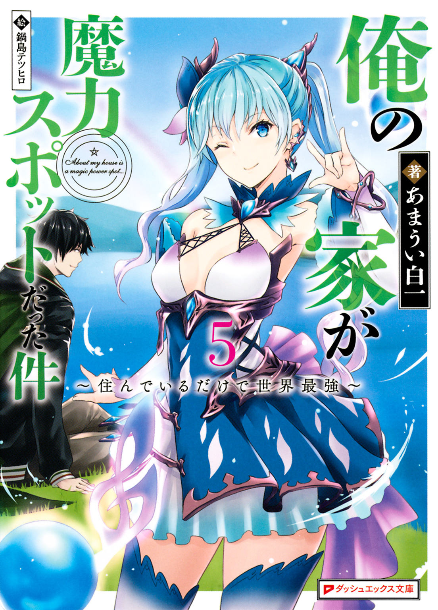

| 俺の家が魔力スポットだった件 5 ～住んでいるだけで世界最強～ | |
| あまうい白一 | |

この本は縦書きでレイアウトされています。
また、ご覧になる機種により、表示の差が認められることがあります。
 ダッシュエックス文庫DIGITAL
ダッシュエックス文庫DIGITAL
俺の家が魔力スポットだった件５
～住んでいるだけで世界最強～
あまうい白一
これまでのあらすじ
俺の家は世界有数の魔力スポットに建っていた。
ある日のこと、俺はその力を狙う魔女たちによって、魔力スポットである家と土地ごと異世界に召喚されてしまった。
だが、その家に数十年間も住み続けた俺の体には異常な程の魔力が貯めこまれていた。
叫ぶだけで、ドラゴンすら吹き飛ばせる。そんな力を持っている俺が望んだのは――平穏で平和な生活だけだった。あふれ出る魔力によって顕現した我が家の精霊、サクラから力の使い方を学びつつ、俺は異世界で生活を始めた。
俺と家の魔力を狙って野蛮な襲撃者が来ることもあったが、俺が魔力を使って生み出したゴーレムによって簡単に追い払えたので全く問題にならなかった。
家に来るのは危険な連中ばかりではなかった。俺に様々な知識をくれる、ヘスティという謎の幼女もいた。彼女からこの世界の様々な常識を教えてもらったり、俺を呼びだした魔女にして第二王都プロシアの姫、ディアネイアと仲良くなったりしながら、平和な日常を続けていく。
だがある日、俺の家に白の竜王を名乗る奴が戦いを吹っかけてきた。
俺の安住の地を壊そうとする奴は、許せない。そう思った俺は圧倒的な魔力で竜王を打ち倒した！
そこで俺は竜王の正体を知る。竜王はへスティだったのだ。
訳ありらしい彼女から、今回の戦闘に至った詳しい事情を聞いた俺は、へスティを少し叱った。
「困っているなら言ってくれ。話すチャンスがいっぱいあったんだから、相談してくれよ」
その言葉にヘスティは頷き、どうにか彼女と和解することができた。更に彼女に、我が家の一部を貸すことになった。
こうして俺は竜王の友人兼同居人を得たのだった。
竜王の同居人を得た俺は、相変わらず魔力を狙ってくる物騒な奴らを追い払いながら、気楽な毎日を過ごしていた。そんな時、新たな竜王――アンネが俺の家を訪ねてきた。
ヘスティと知人であるアンネは、我が家と街の間の地下に巨大なダンジョンができていることを伝えに来たのだ。ディアネイアはその対策に走る。だが間に合わず、モンスターの大群が街や、俺の家の周辺に発生してしまう。しかし俺の新たな技と武装でモンスターや、それを生み出すダンジョンマスターを打ち倒し、平和な日常生活を取り戻すのだった。
ある日、ディアネイアからプロシアに店を出さないか、との誘いを受けた俺は、今までに培った魔法技術を用いて街にリンゴジュースの店舗を建築する。
近いうちにプロシアでは祭りが開催されるとのことで、俺やサクラはワクワクしながら店の準備を続けていく。
だが、そこに問題が発生する。巨大な竜王、ラミュロスがプロシアに落下してきた。大惨事を避けるために、ヘスティはボロボロになりながら、街を救おうとする。
俺はそれに協力し、どうにかラミュロスを無事に地上に降ろすことに成功した。そしてプロシアの祭りは問題なく開催できるようになるのだった。
祭り当日。俺たちはプロシアでジュース店を開いていた。そこにディアネイアと二人の女性が訪ねてくる。二人は、第一王都からやってきた王女と『最優』の二つ名を持つカレンという竜王だった。なんでも強力な力を持った四大精霊が封印を破ってプロシアの方に逃げ出してしまったのだという。その探索に俺たちは協力することにした。
祭りを楽しみつつ、俺たちは精霊を集めていき、やがて四体の精霊が揃った。
だが、カレンが再封印しようとした瞬間、精霊はカレンと共に暴走を始めた。街を飲み込みかねない大災害が発生しそうになる。
しかし俺の新型ウッドアーマーと新たな力で、暴走を止めることに成功した。そして祭りを盛り上げつつ、賑やかに騒いでいくのだった。
ただ一方、祭りが無事に終わったと安堵するディアネイアのもとには、『街を滅ぼしかねない疫病神』と称されるアイドルが街に来ようとしている、との報告が来たのだった......。
祭りが終わり、街から帰ってきて数日、俺は、とてもよく眠っていた。
近場の街といえども、やはり知らない土地で眠るよりも、自宅の方が寝つきがいい。
街とは違ってとても静かな空間なこともあるだろう。
だから今日も俺は昼前まで眠っていた。
「あ、おはようございます、主様」
目を開けると、ニコニコとした精霊の少女、サクラがいた。
テーブルには温かそうな食事が並んでいる。
「おう、おはようサクラ。あと、用意がいいなあ」
「ふふ、主様の体調管理はしていますから、起きる時間はなんとなく予測できます。今、パンを焼いているので持ってきますね」
サクラは微笑してキッチンの方に向かった。
起きてすぐに食事ができるのは有り難い、と俺は顔を洗った後で飯にする。
ここのところは毎日、睡眠時間を長く確保しているので、体は快調だ。
だから寝起きでも、バクバクと食べられる。
「ん？ このパン、いつも以上に美味いな」
普段からサクラお手製の料理は美味いと思っているが、なんだか、今日は特に美味しい気がする。
「そうですか？ 人狼の方々が持ってきた小麦粉でいつも通りに作ったんですが、高い小麦粉でも持ってきてくれたんですかね？」
そうなのか。だとしたら、人狼たちには礼を言っておかないとな。
あと、渡す金も多めにしておこう。
「祭りの時に出た売り上げも、かなり部屋を圧迫しているしな」
「そうですねえ。まさかリンゴが詰まっていた部屋が、全てお金の袋で埋まるなんて......」
店から金の袋を運んできたらそうなった。
結局、リンゴの在庫で埋まっていた場所が、金銭に変わっただけである。
いや、確かに圧迫感は少なくなったんだけど、重さ的にはむしろ増えたような感じもする。
......人狼も竜も、騎士たちも買い過ぎなんだよ......。
作った分が全部売れたのは有り難かったんだけどさ。部屋が使えないのは、結局同じだ。
だから人狼たちにでも渡して減らした方がいいかなあ、と思っているのだが、
「下手に渡す額を増やすと、あいつらドン引きするからなあ......」
「あ、あはは。主様が銀貨袋を二桁単位で渡された時は、引いた上に泣いていましたからね」
そうなんだよな。実際、彼らに多めに渡そうとしたら、
『お、恐れ多くて受け取れません。どうか、なにとぞご容赦を』
としか言わなくなった。
しかもブルブル震えた状態で、だ。
前よりも親密になったから受け取ってもらえるかと思ったのに、あの態度はいつまでも変わらないらしい。
で、結局いつも通りの額しか払えなかった。
程度は考えなければならないようだ。
「街との連絡や、行商で世話になってるから、もうちょっと増やしたいんだけどな」
「ええ、最近は郵便業も始めていて、私たちも利用していますし。......そういえば、先ほどディアネイアさんからお手紙が届きましたよ」
「ディアネイアから？」
「はい。祭りのお礼をしたいので、近いうちに訪問させてほしいと。どうやらプロシアの方では収穫祭があるらしく農産物を持っていきたい、とのことでした」
「普通の祭りの次は収穫の祭りか。あの街は賑やかだな」
「ふふ、そうですね。あ、お手紙によると、今年は豊作らしいですよ。なにやら街の近隣に精霊が沢山集まったためか土壌に魔力が染み渡って、質も量も上昇しているとか」
「へえ、精霊にそんな効果があるのか。......そういえば、ウチの庭も四大精霊が住み着いてから、物凄いことになったな」
精霊がダンジョンに住んでから、庭の環境が微妙によくなった。
樹木の成長は何もしなくても素早くなったし、実そのものも大きく育つようになった。
「やっぱり精霊の力なのかね」
「恐らくは。私の感じる限りでは、魔力の量的にはほとんど増加していないのですが......自然環境がより快適になった、と思います」
「へえ、なるほどなあ」
もしかして、この寝つきやすくて目覚めやすい、ちょうどいい環境を作っているのも、精霊の力があってこそなのかな。
「それにしても、あいつら、凄く役立つな」
あれから、ダンジョンの空調管理とか、そこから染み出る温泉の温度管理とかもしてくれていたりする。
なので、地下空間はかなり過ごしやすい状態になっている。
「ダンジョン管理人としては、有り難い存在だよな」
「そうですねえ。彼らはこの家や龍脈を刺激しないように丁寧にふるまっていますし、補助役としてはとても優秀ですね」
サクラとも上手くやっているようだし、彼らはすんなりとこの土地になじんだようだ。
更に有り難いことに精霊たちは、数日に一度のペースで精霊の力の塊――精霊石という素材を提供してくる。
今日の朝も、拳大のキラキラした石を俺に届けてくれた。それは今、部屋の隅にある袋いっぱいに詰め込んであった。
......ヘスティが言うには、魔石よりも凄い力を秘めた素材ってことだったけど......。
どう使うかは、まだ決めていない。
あとでヘスティに相談してみようか、と思いつつ、朝食を完食した。
「ふう、ごちそうさま。美味かったよ、サクラ」
「はい。ありがとうございます。食後はいつものお散歩ですか？」
「正解。いつもの腹ごなしだ。――本当に、俺の生活スケジュールは丸わかりなんだな」
「私の大切な主様の生活ですから、当然ですよ。それでは、行ってらっしゃいませ」
「ああ、行ってきます」
ほほ笑むサクラの見送りを受けながら、俺は階下の玄関に向かった。
軽く動いて、散歩が終わり次第、ヘスティのところに向かおう。
......精霊から得られた強力な素材で一体、何が作れるんだろうな。
制作するのが楽しみだ、と思いながら俺は、暖かな太陽光が差し込む森の中を歩き出していく。
昼間。
執務室の机についたディアネイアは、騎士団長からいくつもの書類を受け取っていた。
祭りの成果だけでなく、失敗した部分や改善点などが記載された紙だ。それをディアネイアは一つ一つ見ていた。
「ひとまず、祭りに関しては成功したようだな」
「はい。過去と比べても飛び抜けて収入が増えましたから、大成功といえましょう」
「それは良かったが......問題は、例の大人気な疫病神アイドルだなあ......」
「水難をもたらすも、周辺都市ではかなりの人気を誇るアイドル『ルリルリ♪』のことですな」
「く、詳しいな、騎士団長」
「ええ、これでもファンですので！」
騎士団長が鼻息を荒くしながら告げてくるのを半目で見ながら、ディアネイアは机の上に置かれた資料を見やる。
そこには、近隣都市に相当数のファンを持つルリルリという名のアイドルについての情報が書かれていた。
「そのルリ......なんとか、というアイドルだが、人狼の諜報部隊からの情報によると、本当にライブをした町々に水難を起こしているのだな」
「ええ。農作物への打撃や、家屋への床下浸水など、彼女がライブした都市は大なり小なり水害を受けておりますな。ただ、ライブを断った都市は、それ以上の被害を受けておりますが」
「ああ、そうみたいだな」
資料には、ライブを断った都市の末路が記載されている。
「大雨や洪水による都市全体の沈没、または地盤沈下による崩壊。......台風のようなアイドルだな」
「まあ、そうですな。ファンとしては、あくまで偶然と思いたいところですが......街の運営をする者としてはそれで片付けてはおけませぬ」
「そうだな。......それで、この街でのライブ開催許可を出してから三日は経つが、返事は来たのだよな？」
「はい。今から向かうと。そして、人狼からの報告によると、なんと近くまでお越しになられているようで！ あと二週間以内にこちらに到着するそうです！」
「テンションが高いな......。ともあれ、二週間か。それまでにもう少し、情報を集めておいてくれ」
「了解です。......台風のような人物が来るというのに、随分と落ち着いておられますな？」
「まあ......天変地異のような人物もいらっしゃるからな。うん、比較的平気だ」
「ああ、なるほど。分かります」
ディアネイアは騎士団長と共に、ダイチが住む森の方を見ながら、一度頷いた。
......うん、ダイチ殿のお陰で、色々と耐性がついて良かった。
為政者に対してあの人は素晴らしい効果を与えているよなあ、と思いつつ、ディアネイアは、仕事を再開する。
街の運営こそが本来の仕事だ。アイドル関連のことにかかりっきりでいる訳にもいかない。
「さて、次の話だが......これは、街の外縁の農家からの収穫予定書か」
「はい、農業に従事している方々から、次々に豊作の知らせが届いておりますよ」
「全く、良い知らせと悪い知らせが同時に来るとは。......見ろ、凄いぞ、騎士団長、前年の倍以上の収穫予定量になっているぞ」
「嬉しい悲鳴とはこのことですよ。過去の記録と比べても今年は類を見ないほどの収穫高になるようですから」
「有り難い話だな」
「ええ。なんというか、これが一人の力によってもたらされた恩恵かと思うと、驚きを通り越して笑ってしまいますな」
騎士団長は苦笑しながら言う。
一人の男によって街の環境ががらりと変わるなんて、普通は信じられないだろうしな。その気持ちは分かる。
「ただまあ、ダイチ殿には礼を尽くすのは当然だが、頼り過ぎずにやっていく方法を考えなければいかんな」
「それは私たち騎士団も同感です。彼に甘えることなく、鍛錬をしなければあっという間に腑抜けてしまいますから。騎士にとっては、彼はとても素晴らしい刺激になっていますよ」
そういえば、最近の騎士団はやけに訓練を頑張っていて、全員の実力が上がっているような気がする。
「うん、そうだな。私も最近は甘えてばかりだったから、もう少し鍛えこまねばならん」
でなければ、彼の後ろ姿すら見えなくなってしまう。
「いやいや、姫様はもう大魔術師の中でもトップクラスではないですか。この前、協会の人間も姫様の力に御世辞抜きで驚いていましたし。そろそろ超級のランクに上げるべきではないかと」
「はは、おだててくれてありがとう、騎士団長。だが、ランクアップの件はまだまだ先延ばしにさせてもらうよ」
ランクを気にするよりも、まずは実力を練ることに集中したい。それが大魔術師としての力を持つディアネイアの方針だった。そして、
「修行するためにも、今はまず、この仕事と、アイドル関係の問題を終わらせなければいかん。ちゃっちゃとやっていくぞ、騎士団長」
「ええ。それで、姫様。書類の中に、ひとつ気になった案件がありまして」
騎士団長は暗い顔をして言った。
「うん？ 気になるとは一体どれだ？」
ディアネイアが聞くと、騎士団長は一枚の書類を手渡してきた。
「こちらですね」
「ふむ......巨大で歪な植物と、大規模な地下空洞が発生している......だと？」
書類には地図が添付されており、赤いバツ印がいくつかついていた。
ここに地下空洞があるとのことだが、
「空洞とは、もしやダンジョンでもできたのか？」
「はい、恐らく。時折モンスターも飛び出してきて収穫前の作物や家畜に被害が出ているそうでして」
「ああ......本当に問題事は重なるものだな」
「いかが致しましょうか。調査隊の準備はできておりますので、先に突入させておきましょうか？」
「そうだな。......では、すぐに調査を頼む。後ほど、私も向かおう」
「はっ、かしこまりました。早速、指令を送っておきます」
そうして騎士団長は執務室から出ていった。
「ふう......良い報告があっても、問題は尽きないか」
ディアネイアは、吐息しつつ机の上を整理しながら言葉を零した。
......いつまでもお祭り気分の頭ではいけないな。
さっき、自分を鍛えようと決めたばかりだ。
まずはダンジョン対策に乗り出そう、とディアネイアは不安を胸に抱きながらも、動き出すのだった。
散歩から帰ってきた俺は、ヘスティと一緒に庭に出て話をしていた。
俺の目の前には、淡い光を放つ、透明な石が入った袋がある。
「さて、この精霊石とやらは、どう使えばいいんだ？」
「魔石と同じような使い方はできる。けれど、魔力の質と柔軟性で、魔石を上回るから、燃料として使うにはもったいない、かな」
ヘスティが言うには、魔石とは根本から違う物質らしい。精霊からしか産出されない石、という時点で、なんとなく違いは分かるけれども。
さて、どうやって使えばいいものか。
「ヘスティには何か良いアイデアあるか？」
とりあえず聞いてみると、ヘスティはゆっくり首を傾げて俺が持っている杖を指差してきた。
「アナタの杖にくっつける？ 柔軟性あるから、頑丈にはなるし、メンテナンスついでに、やってみる？」
「メンテナンスか」
そういえば、ヘスティに貰ってからというもの、結構な回数を使い倒してきた。
確かに一度、調整してもらうのはありかもな。と俺が杖を見ていると、
「ォォォォオ――」
空の方から、声が響いた。見れば一匹の竜が叫びながら突っ込んできた。
竜の言語的にも意味不明な叫び声だったので何が目的か分からないけれども、
「樹木よ、盾になってくれ」
危ないのでひとまず、樹木を伸ばして盾を作成し、ドラゴンを押しとどめた。
「グ!? オオオオオオ！」
勢いを止められたドラゴンは、それでもなお突き抜けてこようと、盾をグリグリ押してくる。
「なあ、ヘスティ。めっちゃ襲ってくるんだけど知り合い？」
「んー、いや。知性とかなくなった奴みたい。殴っちゃって、いいよ。会話できないし、我の眷属でも、ないし」
そうか。なら、遠慮なくやっておこうか。
「《ゴーレム》巨大化して殴れ」
いちいちイメージするのも面倒なので、魔法鍵を使った。
ほんの一秒もかからず立ち上がったウッドゴーレムは、そのまま巨大な腕で竜の顔面をぶん殴った。
「ギ......!?」
そして、ウッドゴーレムの一撃を受けた竜は、そのまま何回転かして森の奥まで吹っ飛んでいった。
「うん、これでよし」
何の問題もないな、と思っていると、
「......なんだか、作成速度と、威力、上がってない？」
ヘスティは竜が吹っ飛んでいった方を見ながら、口をあんぐり開けていた。
「そうかね？」
言われてみれば、微妙に上がったかもしれないな。
昔はもう少しだけ時間がかかっていたような気もするし。
「確実に早くなってるし、ゴーレムの含有魔力も上がってる......。アナタ、そっちの意味でも、成長しすぎ。すごくビックリした」
「まあ、この前、ヘスティに成長したって言われたしな。全体的にちょっとだけ成長してて、良いんじゃないか」
「ん......ちょっと。そうだね、アナタにとってはちょっとなのかもね......」
ヘスティは拗ねたように言ってくる。またなんか変なことを言ってしまったかな。
ともあれ、成長しているのは良いことだな、と手元を見ると、
「あ、杖にヒビが入ったな、これ」
「え!? 本当？」
「ほら、ここ。縦に割れてるだろ」
杖のちょうど中心あたりから、ぱっくりいってしまっていた。
さっきまで無事だったのに、魔法鍵を使って巨大ゴーレムを作ったのが原因なのか。
「んー、そうかも。メイン杖はかなり強く作ったけど......それでも、アナタの成長に耐えきれなかったんだね」
「マジか」
「この杖はかなり粘り強く、作っていた。この数カ月、壊れなかったのがその証拠。でも、今のアナタには足りないみたい。成長している状態のアナタの力には、耐えきれず、弾けたみたい。ある意味、成長の証拠」
「あー、そうなのか。でも、道具を壊す成長ってのも、どうなんだろうな」
杖を使う時は力を入れ過ぎちゃ駄目なのかね、と吐息していたら、ヘスティは首を横にプルプル振った。
「大丈夫。我がいれば、強化補修はできる。だから手加減する必要も、落ち込む必要も、ない。アナタに耐えられるものに、我が作り直すから。ちょうど、材料もあるし」
ヘスティは言いながら、精霊石を見た。
「これがあれば、今まで以上に強くできる、よ」
そうだった。ヘスティは凄腕の杖職人でもあったんだったな。
「ああ、久々に杖職人としてのヘスティのお世話になりそうだ。頼めるか？」
「任せて。杖職人の腕の見せ所だから、がんばる」
気合いの入った表情で言った後、ヘスティは割れた杖を握る。
「アナタが成長した喜びも込めて、しっかり素早く作ってみせるから、待ってて」
「おう、期待しているぜ、ヘスティ」
「ん」
頷いたヘスティは精霊石と杖を、小屋から持ってきたハンマーで打ち始めた。
カーンカーンと石と木と金属がぶつかる音を聞きながら、俺は穏やかな気持ちで、午後の時間を過ごしていく。
数時間後、夕方から夜に変わろうとする頃。
ヘスティは俺に綺麗に磨かれた白い杖を渡してきた。
「はい、補修強化、完了」
「相変わらず早いな。流石は凄腕の杖職人」
「そう？ でも、一から作るわけじゃ、ないから」
そう言いつつも照れくさそうにしているヘスティから、俺はメイン杖を受け取る。
受け取った杖の重さや感触は、以前のものとほとんど変らない。
ただし、ほんのわずかにツヤが出ているのが分かった。
「さっきの二倍くらいは、頑丈になっていると、思う。岩を殴ったら岩の方が割れるくらいには堅く、柔軟になっている」
「そんなにか」
「ん、でも、これくらいしないと、アナタの力に耐えきれるか不安だった。でも、もう、全力で使って、大丈夫」
どうやらかなりの自信作のようで、ヘスティは小さく胸を張った。
そんな良い物を貰ったのなら、早速使ってみたいところだが、
......何をするかね。
温泉の整備をするにはイメージ魔法の方がいいし、家の形を変更するにしても、そこまで力は使わない。
「やっぱり樹木を生やすのと、ゴーレムを作るのが一番、力の加減が分かりやすいかな」
なので、俺は庭の空き地に適当にリンゴの種を蒔いたうえで、杖を握った。
「《伸びて実をつけろ》」
言った瞬間、庭に数十単位でリンゴの木が生えた。
しかも、赤々とした果実がなった状態で、だ。
「おー、久々に生やしたけど、すげえ楽に生やせるようになったな」
「......ゴーレムだけじゃなくて、樹木の育成も素早くなってる。しかも、リンゴの魔力量も上がっているし。アナタの成長性、おかしい」
「いや、そこでおかしいって言われてもな」
ヘスティはジト目で俺の顔を見た後で、杖に視線を移した。
「ん、でも、ちゃんと魔力が乗って、魔法鍵を実行できたね」
「そうだな。なんだか今まで以上に、使いやすくなった気がするよ」
「それは良かった。......でも、こんなにいっぱいリンゴの木を作って、収穫とかは、どうするの？」
「あー......」
それは考えてなかった。また収穫用のゴーレムを調整しないといけないし、リンゴの収蔵スペースもどこかに確保しないといけないな。
......せっかく祭りで消費したのに、流れでやっちまったなあ。
まあ、保存食としても意外と役に立つし、精霊や人狼たちにオヤツで出すとすごく喜ぶから良いんだけどさ。
どこに収穫したモノを置くかなあ、と考えていると、
「あ、竜が、来るね」
「うん？」
ヘスティが森の方を指差した。そこには、
「グオオオオオオ!!」
ドラゴンが走ってきていた。
今度は二体だ。
「なんだなんだ？ 今日は襲ってくるのが多いな？」
「なんだろう。理性が飛んでいる竜が暴れるタイミングが重なるなんて、そうそうないんだけれども」
何か理由があるんだろうか。ともあれ、今はそんなことを考えるよりも、この竜たちをどうにかしないとな。
「まあ、試し射ちついでに追い払うか。ちょうど樹木もあるし――《ビッグ・ゴーレム×十》」
俺が魔法鍵を発動させた瞬間、先ほどまでリンゴの樹木だったものが寄り集まり、巨大な樹木のゴーレムが十体完成した。そして、
「後は任せた」
言った瞬間、十体のゴーレムの目が、一斉にドラゴンの方に向いた。
「ギ......!?」
その様子に、ドラゴンは二匹ともたじろいだ。
だけれども、ゴーレムは止まらず動き出す。
ドラゴンに向かって、ドシンドシンと走り出し、
「――」
「ぐ、グアアアアアア............!!」
次々に走り寄るゴーレムたちの波に押し流されるように、ドラゴンは吹っ飛んでいった。
「これで、おしまいっと。杖は......壊れてないな」
二回も使って無事なら問題ないな。
「きちんと、耐久性、上がってる、ね。同じような条件で、実戦証明とれて、良かった」
ヘスティは満足そうな表情をしている。
俺としてもこの杖の頑丈さは有り難い。
「ありがとうな、ヘスティ。この杖のおかげでかなり安心感があるよ」
「......そう言ってもらえると、うん、我も、嬉しい」
ヘスティはそう言いながら俺の手と杖をぎゅっと握って嬉しそうに笑うのだった。
次の日、俺が庭の樹木をいじりながらゴーレムを作成していると、竜王の一人であるアンネが、黒い髪を揺らしながら訪ねてきた。
「ダイチさま、おはようございますー」
「おう、アンネか。どうした」
随分といきなり訪ねてきたけど、何か用だろうか。
「少しお聞きしたいことがありまして。......先日、こちらの方から竜が三体ほど吹っ飛んできたのですが、ダイチさまがやられたので？」
「あー」
なるほど。この前吹っ飛ばした奴が森を飛び越えて、平原の方まで行ってしまったのか。
それを考えると本当にゴーレムの一撃が強化されていたんだろうな。
今までは竜を相手にしてもそんなこと、なかったんだし。
「もしかして、何か被害でも出たか？」
「いえ、すぐに泣きながら逃げていったので平気だったのですけれど、竜の方に......なにか問題でもあったのでしょうか？」
「いや、特にないぞ。いつも通り、襲ってきた奴らだし」
まあ、たまたま手動で対処できる状況だったから手動で対処して、吹っ飛ばしてしまったわけだが。
言うと、アンネはほっと大きな胸をなでおろした。
「そうですか。良かったです。何事かと思いましたよ。これまでイノシシやらスライムやら、モンスター系が吹っ飛んでくるのは時たま見ていましたが、まさか、竜まで来るとは」
あ、他のモンスターも当たり所がいいと、かなり飛んでたんだな。
被害がない地点に吹っ飛ばせているのであれば、問題はないだろう。ただ、
「もしかしたら、今後は吹っ飛ばすものが増えるかもしれないな」
「え？ どうしてです？」
「その吹っ飛ばし装置を今作っているところだからだよ」
装置といっても大げさなものではなくて、飛来してきたモノをゴーレムが自動的に受け止めて、投げ飛ばしてくれるように設定しているだけだが。
「もしも危なさそうなら威力の方を調整するけど、大丈夫そうか？」
「ええ、ちゃんと何もない平原に落ちてますから、平気ですよ」
良かった。それならこのまま作ってしまおう。
「あ、ただ、聞いておきたかったのですが、吹っ飛ばされた竜が、落下した場所で牙や鱗を大量に剝がしていくので、こちらの方で採取させてもらってもいいですかね？」
なんでそこで俺の許可を求めてくるんだ。
勝手に持っていけばいいだろうに。
「ダイチさまが吹っ飛ばしたものですから。ダイチさまに占有権があるので、勝手に持っていくのもどうかと思いまして」
「そういうものか？ まあ、でも、俺のことは考えなくていいよ。家に突っ込まれたら面倒な奴らを追い払っているだけだしな」
というか、ぶん殴って吹っ飛ばしたら鱗が落ちるんだな竜って。初めて知ったよ。
「いえまあ、理性を失っているとはいえ竜なので、普通は魔法を使ってじっくり時間をかけないと剝がれないんですけれど。衝撃が強すぎてポロポロ落ちまくっているというか......」
「素材になるなら良いことじゃないか」
「ダイチさまがそうおっしゃるなら――では、有り難く頂きますね」
ぺこり、とアンネは頭を下げて、それからキョロキョロと周囲を見渡した。
またヘスティを探し回るつもりかね、と半目で見ていると、
「......うう、姉上さまに会いたいですけれど、時間がないですね......」
意外にもアンネは肩を落とすだけで、その場から動かなかった。
「今日はヘスティを探しまわったりしないんだな」
まあ、探し回ったところで、ヘスティは朝から街の方に行ってしまったので今はいないんだけどさ。
「正直、そうしたいのは山々なのですが、竜の谷の方で用事がありますからね。そっちに行かなきゃならないのですよ」
「用事？」
「ちょっとした竜と竜王の集まりです。ダイチさまも、いらっしゃいますか？」
「え？ いや、行かないよ」
「あれ？ 一応、竜の谷の支配者は、ダイチさまになっていると聞きましたが......」
「いや、支配をしているつもりはないぞ。襲ってくるなとは言ったが」
というか、竜の谷の存在も知っているし場所も分かっているけれど、実際に行ったことは一度もないし。微妙に険しい岩山だから、散歩でも行く気がおきないしさ。
「そうですか......。分かりました。それでは、夕方くらいに、竜の谷のお土産を持ってもう一度うかがわせて頂きたいのですけれども、それはよろしいですか？」
「いいけど......ヘスティに会えるかどうかは分からないぞ？」
「うぐっ......い、いえ。大丈夫です。私はヘスティ姉上さまの匂いを鼻から取り入れるだけで、満たされますから」
アンネは微笑しながらハアハアし始めた。鼻血も若干出ている。
改めて思うけれど、この竜王につきまとわれているヘスティは大変だな。
「まあ、分かったよ。勝手に来てくれ」
「はい、ありがとうございます！ それでは、一旦、失礼しますね」
そして、アンネは竜の谷へと向かって行った。
何の用事か分からないけれども、面倒事じゃなければ何でもいいか。
......一応、このことはヘスティにも伝えておこうかな。
なんて思いながら庭いじりすること十数分。
「ただいま」
ヘスティが戻ってきた。
「おう、お帰り。街はどうだった？」
「ん、いつも通り。工房で使う材料を買ってくるのには、困らない程度には賑やかだった」
そう言って、彼女は担いでいる袋を下ろした。
その中には、布や液体入りの瓶などが入っている。
また何かしら作るんだろう。
充実した工房生活を営んでいるようで何よりだ、と思いつつ、俺はさっき来た客について話すことにする。
「そういや、ヘスティ。さっき、アンネが来たぞ」
アンネ、という単語を聞いて、ヘスティは、そっと俺の後ろに隠れた。
そしてキョロキョロと周りを見始めた。
「......どこ？」
「はは、今はいないよ。竜の谷に用があるんだと。なんでも竜王が集まるってことらしいが」
言うと、ヘスティは何かに気づいたようにハッとして、納得したように頷いた。
「ああ......竜王会議。そういえば、そんな時期だった」
「竜王会議？ なんだそりゃ。物々しい単語だけど」
「まあ、物々しいこともあるけど、今回は穏やか、だと思う。何十年かごとに近くにいる竜王が、適当な場所に集まってお話しするだけ、だから」
「へー、なんでまたそんな集まりを」
「竜王は強い分、情報収集を怠る癖があるから。長く生きていればいるほど、そうなる傾向にある。それはまずいから、我と、もう一人の竜王が提唱した」
ヘスティは懐かしそうな口ぶりで言った。
「そうなのか。じゃあ、ヘスティも参加するのか？」
「ん？ 我は、しないよ？ 今の我、正確には、竜王じゃないから。アナタに負けた時点で、あの谷における王の全権は、アナタにあるようなものだから、ね」
「......そういや、ゲンリュウもそんなことを言っていたっけな」
アンネにも支配者だなんだって言われたし。そんな認識が、他の竜王たちの間に広まっているんだろうな。
「んー、少なくとも、この辺りの理性ある竜は、大体知っていると思うよ？ アナタは、あそこの竜を自由に、使えるって」
「いや、使えるって言われてもな」
使い道なんて考えてない。
そもそも、俺は全権などいらない。
......貰えるものは貰っておく主義だけどさ。
権利を行使したのは、せいぜい面倒事を起こすなって命令をした時くらいだ。あと、思い浮かぶ使い方なんて、あんまりないぞ。
「うーん、使い道って言っても、移動手段、くらいかね？」
「ん、移動手段でも使える。ただ、一般的に、大勢の竜で移動すると、周囲にビックリされる、とは思う。我も一回やったけど、結構、威圧感、あるからね」
ヘスティは頰を搔きながら言ってきた。そうだな、この子が俺の家に来た時は、まさにそれをやらかした。ディアネイアが言うには街の皆はドン引きだったそうだ。
「うん。だったら使わなくていいかな。それに、俺にはゴーレムっていう大人しい移動方法もあるし」
「......あれは、竜王から見ても、恐ろしい類のモノだけど......まあ、もう突っ込まなくていいかな......」
などとヘスティと他愛のない会話をしていたら、
「主様ー、ヘスティちゃんー、お昼ができましたよー」
母屋の方からサクラが声をかけてきた。
昼飯ができたようだ。それを知った直後、ぐうとヘスティの腹が鳴った。
「お腹、減った、かな？」
「だから疑問形はやめろって。街まで歩いたから減ったんだろ」
俺も朝からゴーレムを作っていて腹が減ってるし、ちょうどいいや。
岩山をいくつか挟んだ土地ではなんだかすごい会議が行われているようだけど、
「ま、俺たちはのんびり飯でも食っておこうぜ」
「ん、のんびり、する」
そうして、俺たちは昼飯とお茶の時間をゆったりと楽しんだ。
昼飯も食べ終え、庭の樹木の配置を整えていたら、森からイノシシたちが襲ってきた。
いつものことなので、慌てず騒がず、自分と家に近づいてきたイノシシをゴーレムで打ち払っておきながら、
......この後、何をしようかな。
偶には温泉でも入るか。うん、ひとっ風呂浴びたい気分だな。なんて思っている最中のことだ。
「ダイチ！ 御無沙汰しております！」
森の向こうから、赤い髪をした竜王のカレンがダッシュしてきた。
やけに興奮したような目をしてこっちに向かって走ってくる。
「カレンか。祭りの日以来だな」
四大精霊を届けるために、アテナと共に第一王都に帰っていると、先日、ディアネイアから聞いていたのだけど。
「またこっちに来たのか？」
「はい。四大精霊の移送完了を告げに私だけがこっちに戻ってきました。アテナ王女は現在四大精霊を第一王都に定着させるために、王都に居残りです。『私も行きたい――！』とおっしゃられていましたが――」
などと、カレンと会話していたら、イノシシたちが俺から狙いを変えて彼女の方にも向かった。
だが、彼女は片手で楽々とイノシシの突進を止める。
「――っと、このイノシシたちは、ダイチが飼っているのですか？」
「いや、野生のイノシシだよ。よくウチに突っ込んでくるんだ」
「そうなんですか。......ダイチ、ちょっと私の目を見てもらってもいいですか？」
「あん？」
言われて、彼女と俺の視線がカチ合った瞬間、周囲の木々がざわっと揺れた。更に、
「――ッ!?」
イノシシたちはその目に怯えの色を浮かべて、脱兎のごとく逃げだした。
なんだろう、竜王のプレッシャーでもあったのかね、と思っていると、
「ふ、ふふふ......」
カレンが両手で自分の体を抱きしめて震えていた。
「こ、こんな何げない挨拶、目線の動きでの、魔力の波動......。それだけで上級モンスターが必死に逃げる強さ。ああ、本当にすごい人です、ダイチ......！ やはり子作りを求めて正解でした......！」
そして潤んだ目でこっちを見てきた。
論理がぶっ飛びすぎていて、ちょっと何を言っているのか分からないのでスルーしておくことにして、
「えっと、イノシシを追い払ってくれて、ありがとう、というべきか」
「ああ、いえ、今のはほとんどダイチの魔力のプレッシャーで逃げていったのですよ。私はほんの少し魔力を当てて呼び水になったにすぎませんし、気にしないでください」
カレンは興奮をこらえての澄まし顔で、そんなことを言ってきた。
「魔力を当てるってなんだ？」
「え......？ いや、私から少し、魔力のこもった視線が飛んだのに気づいて、跳ね返してきたんじゃないんですか？」
「いや、全く分からんぞ。普通に目を合わせただけだし」
「そうですか。なるほど、あれは反射的に出たもの......。ふふ、本当に、想像以上です」
澄ましていたカレンの口元が緩む。
なんだか嬉しそうだな。
まあ、いいや。なんにせよイノシシも追い払ったことだし、最初の話に戻ろう。
......アンネが来た時点で、同じ竜王であるカレンが来てもおかしくはないが。
まあ、一応聞こう。
「なんでウチに来たんだ？」
「もちろん、ダイチに会うためですよ！ この近くの竜の谷に用があったりしますが、それはただのオマケです！」
「ああ、うん。やっぱり、例の竜王会議とやらに来たんだな」
今日は客が多いな、と半目でカレンを見ていると、
「しかし、お話を聞く限り、ここがダイチの本宅ということで、よろしいのでしょうか？ 初めて参りましたが......素晴らしい場所ですね」
カレンは目をキラキラさせて尋ねてきた。
「まあな」
事実なので頷くと、彼女の瞳は更にキラキラした。
「こんな魔力スポットがあるなんて。見れるなんて。感動的です！ 地図を貰って、街からこの森を突っ切っている時に、ありえないほど強大な魔力を感じたので、これはもしや、と思ったのですが......！」
カレンは周囲をキョロキョロと見ながら言ってくる。
「予想以上ですよ。この土地の魔力、ダイチの家にある力、そしてダイチ自身の力が重なって物凄いことになっています。こんなの見たことがありませんよ。......会議がなければ、ずっとここでお話をしたいところです......」
そこまで言った後で、彼女は、俺の方を見てきた。
先ほどまでの興奮した顔とは違い、少し冷静になった表情をしている。
「えー、こほん。ダイチ。会議の後、またお話しさせてもらいに来ていいでしょうか？ まだ貴方に助けて頂いたお礼ができていないので、それを兼ねて改めて訪問させていただきたいのですが」
さっきまでとは打って変わって、とても静かな喋り方だった。こっちのモードであれば、話もしやすいので有り難いな、と思いつつ、俺は答える。
この後、どうせアンネも来るので、訪問は別にかまわないんだが、
「あんまり夜遅いと、俺は寝てると思うぞ？」
「あ、その辺りは大丈夫です。会議の方は早く片付けてきますので」
竜王会議って結構大事なものだろうに、そんな軽い対応でいいんだろうか。
けれどまあ、彼女たちの方が、内情は知っているのだろうし、何も言うまい。
「了解だ。じゃあ、寝る前に来てくれや」
「はい！ ありがとうございます！ ......では、高速で会議をやっつけて貴方に会いに来ますね！」
そう言って、カレンは走って谷の方へ向かった。
......これは、夕方から客が多くなりそうだな。
そして竜王会議とやらも、賑やかになってそうだなあ。
そんなことを思いつつ、俺は、当初の予定通り温泉へと向かう。
「しかし竜王ら、集まって何かやらかさないといいが......ま、今は気にしないでおこう」
ディアネイアは、徐々に騒がしくなりつつある執務室にいた。
執務室の内部には、騎士団長含め、数人の騎士が緊張した面持ちで立っている。
その中で、机に置かれた何枚もの書類を見てから、ディアネイアは声を上げた。
「さて、竜王たちが森の向こうの谷に集まると今朝方アンネ殿に聞いて、急ぎ皆には集まってもらったわけだが、街の周辺に何か異常はあったか？」
新たに出てきた問題に対し、ディアネイアは落ち着いた様子で皆に問いかけた。
「い、いえ、特にはありません。全くもって、平常通りです」
若い騎士は狼狽を見せながら報告をしてきた。
......やはり、竜王が集まっているという事態が怖いのだろうな。
気持ちは分からないでもない。
ディアネイアはカレンやアンネを知っているし、竜王会議について内情を直接聞かされているけれども、それでも不安はある。
けれど、それを表に出すことはない。
不安はあるが、恐怖はないのだ。
だから怯えずに動くことができる。
「人狼の情報屋との連絡術式は繫がっているのだよな？」
「はい！ きっちりと繫がっていて、竜の谷に異常があればすぐに連絡があります」
魔境森に住んでいる人狼たちには、情報関係で仕事を頼むことが増えていた。
街にいる冒険者や騎士よりも、彼らの方が森について詳しいので、とても助かっていたりする。
「よし、ならば騎士団は待機。平原や街の周辺のモンスターが奇妙な行動を起こしていたら即座に対処すること。竜王に関しては、頭の隅に警戒を残しておくだけでいい」
「はっ」
騎士団の動きはこれで問題ないだろう。
ただ、竜王の動きに触発されてモンスターが動き出す、ということもあり得る。ダンジョンもできているし、不測の事態が起きては困る。だから、
「騎士団長。冒険者たちにもすぐに出動できるように連絡を頼む」
「了解です。シャイニングヘッドの方々にも、お話を通しておきます」
とりあえず、これで人員の確保もできた。
あとは問題が起きた時の対処法を一つ一つ用意しておくだけだ、とディアネイアは手元の書類を見ながら考えていく。そんな彼女を見て、
「すげえ......竜王の集会に、ダンジョンの発生に......非常事態が連発しているのに、落ち着いているぜ、姫様」
若手騎士たちは、堂々と指示するディアネイアに羨望のまなざしを向けていく。
「街が存亡の危機に陥りかねないのに、ハンパねえな......」
その声が、ディアネイアの耳にも聞こえてくるが、どうにもこそばゆい。
......なにせ、ダイチ殿と出会えてなかったら、私だってこんな態度は取れなかったんだから。
一昔前の自分だったら大慌てだったはずだ。
相当にうろたえていた記憶もあるし、その時に比べたら少しは成長している。
だから堂々とするくらいの気合いは当然だと思いながら、彼女は騎士団との会議を続けていく。
「さて、他に緊急を要する報告はあるかな？」
「あとは......そうですね。竜王が集まっているからか、森から平原の方に向けて、モンスターがボロボロになりながら吹っ飛んでいる、という現象が起きていますね。街の被害はゼロですが、正直異常事態かと」
騎士の報告に対し、ディアネイアは騎士団長と見合い、そして頷きあった。
「あー......それは気にする必要はないぞ」
「よろしいのですか？」
「ああ。その現象は今だから起きているわけじゃないのでな」
そもそも、気にしたところで、自分たちでどうこうできる問題ではない。
「はっ、了解しました！」
ディアネイアの指示に、騎士は礼をして下がっていく。
他に、報告する者はいないようだ。
「よし、では、竜の谷の状況には注意すること。私たちは私たちにできる最善をなすために、街の防衛を強化するぞ」
「はっ！」
そして、騎士たちは執務室から飛び出していく。彼らも彼らで、恐怖心を感じさせない動きだった。
それを見て、ディアネイアは思わず苦笑する。
「不安耐性が強化されているのは私だけではない、か。全く、ダイチ殿に慣れるということは、別の意味で恐ろしいものだな......」
竜の谷の外れには一つの小屋が設けられていた。
いつもは使い手がおらず空室になっているそこには今、アンネとカレン、そして長い茶色の髪を枕代わりにして机に頭を乗せているラミュロスの三名の竜王が座っていた。
彼女たちは昼間から集まるなり、街々の動きや、国々の動向など情報交換をするために喋り続けていたのだが、話が上手くまとまらない。
「なんと言いますか、竜王が三人も集まるのはとても良いことだと思うのですけれど、......運営役の姉上さまがいなくなると、正直困りますね」
アンネは頰を搔きながら周囲を見渡した。
いつもならば、ヘスティが率先して情報を纏めてくれたのだが、今回はいないのだ。
「あはは、運営っていつもヘスティがやってたんだ。ボクは数十年ぶりに竜王会議に来たけれど、そこは変わってないんだねー」
「え、そうなんですか？」
「そうだよー。たぶん百年以上、変わってないよ」
ラミュロスは気楽に笑い、カレンも同意するように頷いた。
「そうですね。今一番気をつけないといけないこと、とか、今一番注目すべきこと、とかはヘスティが一番詳しかったので」
「なるほど......」
姉上さまは流石だ。アンネは納得する。
その上でアンネは、彼女を見習おうと、二人に話を振ってみることにした。
「今一番、注目すべきこと、といえば、ダイチさまの存在でしょうかね」
「あー、うん、そうだねー。本当に今更だけど、そこは外せないよ」
「ええ、全く同意です！ 彼のことは、どれだけ考えても損にはなりませんよ......！」
カレンが興奮しながら、声を発してくる。恋する乙女のように頰も赤くしている。
なにやらこの前の祭りでダイチに迫ったらしいことは、ディアネイアから聞いていた。
彼女が強いものに引かれる体育会系であることはアンネも知っているので、その興奮ぶりにはシンパシーを感じる。
「そういえば、カレン姉さまはダイチさまに子作りを求めたと聞きましたが、本当ですか？」
「あれだけ力を持った男性なのですから求めて当然です！ ええ、恋をしたのならばストレートに自らの気持ちを表すのが一番だと思いますから！」
「その気持ち、わかりますよ、カレン姉さま......！」
アンネは両手を握りしめて強く同意した。
自分も姉上さまに近づくまで何度も何度も頼みこんだなあ、とアンネは過去を懐かしむ。
「わあ......なんか変な気の合い方してるけど、ダイチさんに迷惑かけ過ぎちゃ駄目だよー。初っ端から迷惑かけたボクが言うのもなんだけど」
「分かってますよ、ラミュロスさま。......でも、ラミュロスさまはダイチさまの前でも気楽にいることが多いですけれど、よくあそこまで力を抜けますね」
ダイチの魔力は膨大だ。ヘスティなどは慣れているから、なんともないのだろうが、久しぶりに会う時は正直、体にビリビリとした衝撃が来るほどの力がある。
それが気持ちいいので、アンネは定期的に会いたいと思っているものの、気楽になることはできなかったりする。
「その辺り、ラミュロス様はすごいと思うんですけれど、なんでそんなふうになれるんです？」
「んー、それは当然だよ。ダイチさんは命の恩人だし、そもそも、ボクの力じゃ相手にならないからね。警戒するだけ意味がないから。ダイチさんは優しいけど、勝負したら多分、五分もたずにやられちゃうし」
だから気楽でいられるんだよ、とラミュロスは笑う。
やはり、こういうセリフを聞くと、彼女も長く生きてきた竜王で、色々と割り切れる人なんだなあ、とアンネは思う。
......私もまだまだですから、勉強しないと。ダイチさまと姉上さまに会って満足してるだけじゃ駄目ですね......！
二人の竜王を見て気合いを入れ直したアンネは、ふとひとつの話を思い出した。
「そういえば、ダイチさまの件で思い出したのですが。ダイチさまが住まう森の近くで、竜や魔獣が正気を失って暴走する事件が多発しておりまして。更には、地下にダンジョンが生まれているそうで、奇妙な魔力が蠢いているそうです」
アンネの言葉にラミュロスも頷く。
「そういえば、ここに来る途中でも、理性を失ってのた打ち回っている竜を見たなあ。理由は分からないけれども、もしかしてそのダンジョンのせいなのかな？」
「そうかもしれません。......この辺りのお話を、ダイチさまにお伝えした方がいいでしょうかね？」
「ダイチさんに？ んー、そうだねえ。竜がおかしくなっちゃってるのは確かだから、迷惑をかけないように、情報を伝えた方がいいかもしれないねえ」
「そうですね。では、会議はここで終わりということで。ダイチさまと姉上さまのもとへ向かいましょうか」
「――そんなわけで、来ちゃいました」
「......来てもいいとは言ったけど、随分と早く来たな」
「え、ええ。本当にすみません。こんな大勢で」
頰に汗をかきながら、アンネはぺこぺこと謝ってくる。その後ろからは、
「貴方が眠る前に来れて良かったですよ、ダイチ！ お話ししたいことがいっぱいあるんです！ 特に私の気持ちとか気持ちとか！」
「ダイチさーん。久しぶりー。また温泉に入らせてー」
やけに気合いが入った目をした竜王と、気合いが全く入ってない竜王も来た。
本当にバラバラな性格の連中だが、
「まあ、いいよ。リンゴが余ったから焼いたり蒸したりして、その味見役が欲しかったところだ。お茶にするか」
「本当にすみません、ダイチさま。助かります......」
「ありがたく頂きます！ ああ、ダイチが呼吸している場所で育った果実を食べられるなんてなんという幸福！ できれば私も食べてほしいですがね！」
「わーい」
俺はお茶を飲みながら竜王たちと話をすることにした。
サクラが持って来てくれるお茶とお菓子を食べながら、俺は竜王たちから様々な話を聞いていく。
「で、土地のダンジョン化がまた起きてるんだって？」
「はい。街の方にもダンジョンになりかけている穴ができていまして。恐らく地下に魔石の集合体ができているのではないか、と」
ヘスティを抱きしめたアンネは、ほっこりした顔でそう言ってくる。
「......」
ヘスティが諦めと悲しみが混じった目で俺を見てくるが、アンネが来るなり発見されて、即座に抱きしめられてしまったのだから仕方ないな。
まあ、話が終わるくらいには助け出そうと思いながら、俺は竜王たちに気になったことを尋ねていく。
「ダンジョンマスターもいるのかね？」
最も気になったのがそこだ。
ダンジョンマスター自体は脅威じゃないが、あいつの周りにふわふわ浮いている奴らに庭を荒らされたことがあるので、できればいなくなってほしい。
そう思っての問いに答えたのは、アンネの胸の圧迫から逃れつつあるヘスティだった。
「普通ならば、まだ存在してない、はず。長年魔力を貯めこんだ魔石を取り込みに来て、暴走に近い変異成長で出来上がるのが、ダンジョンマスターだから」
「ふむふむ、成長して出来上がるタイプの奴なのか。でも、存在してないなら良かったよ」
そう言うと、しかしヘスティは首を横に振ろうとした。
だが、途中でアンネの胸に引っかかる。
「あんっ、強引ですぅ......！」
「......」
あ、ヘスティが額に青筋を一本作った。
少しイラっとしているらしい。
それを態度で示すように、首を強引に振り切って声を出す。
「でも、それは通常基準。アナタがいる場所は例外とした方がいい。だから、ちっちゃいのはできてる、可能性は、あるかもしれない。微妙な魔力の反応も、感じるし、ね」
「その例外扱いは微妙に納得いかないが......そうか。可能性はあるのか」
また自宅に火をつけられても面倒だ。
なら、採るべき手段はひとつだ。
「んじゃ、適当に地下へ行って、先に潰しておくのが良いな」
「ダンジョンに潜って、ダンジョンマスターの発生を、予防するってことですか？」
「ああ。ただ今日はもう遅いし、準備もあるから......行くなら明日だな」
新型のゴーレムの実験もしたいし、そいつらを作るんだとしたら、明日の午前から行くのが良いだろう。
「そう......。なら、我も手伝う」
ヘスティはアンネの拘束を振り払って、俺の横まで歩いてきた。
「おお、ありがとうよ」
「気にしないで。ダンジョンマスターの魔石も、欲しかったところ、だから」
ヘスティはそう言って頷いた。この竜王は本当に頼りになるなあ、と思っていると、
「あ、私もついていっていいですか？」
「できれば私も！ ダイチの傍にいさせていただきたいです！ ダイチと閉所で一緒にいられるなんて、これ以上ないシチュエーションですし！」
「ボクもボクも――。地下に行ってみたいー」
竜王たちが次々に手を挙げた。
なんだ、参加者がどんどん増えていくぞ。
随分と大所帯になってしまうな。
......まあ、処理する人が多ければ、俺も楽だけどさ。
「うん。この際だ、全員で行くか」
俺がそう答えると、隣で見守っていたサクラが小さく笑った。
「ふふ、主様の声、ワクワクしてますね」
「そうか？ ......まあ、そうかもな」
この竜王たちと出かけるのは嫌じゃないし。むしろ楽しそうだと思えるし。
「楽しそうな主様を見ていると私も楽しくなってきます。じゃあ、お弁当も、主様の分だけではなく、皆様の分もいっぱい作っておきますね」
「あ、すまん、サクラ。負担かけちまうな」
「いえいえ、全然平気ですから、どんどんやってください。私も腕によりをかけて作れるのが楽しみですから。――それと、もちろん、私も行きますからね、地下ピクニック」
サクラは俺の片腕を抱きしめながら言ってくる。
「おう、ありがとうな、サクラ」
こうして、明日の予定が決まったところで、今日は解散することにした。
明日は弁当を持ってダンジョンを調査してから、帰ってくるようにしよう。
何となく高揚した気持ちになりながらその日は眠りについた。
早朝。ディアネイアは、街の外縁にある農地に足を運んでいた。
目の前にあるのは大きく盛り上がった土と、そこにできた洞穴――ダンジョンの入り口だ。
「ダンジョンマスターの姿が確認されたのはこの穴の奥、か」
先遣隊の調査、報告によれば、この穴の深部に、十数体のモンスターとダンジョンマスターの姿が確認された。
このままでは再び、モンスターが大量に発生してしまう、と判断し、ディアネイアはすぐさま出撃を決めた。
......ダンジョンマスターは素早く潰さねばな。
そのために、今回の戦力はプロシアで最強のものを揃えた。ここにいるのは、ディアネイアだけでない。
「ヒャッハー。姫さん。今日はよろしく頼むぜ」
冒険者グループである、シャイニングヘッドの面々も一緒だった。
「ああ、今回は依頼を受けてくれて助かった。こちらこそ今日はよろしく頼む」
ディアネイアが礼を言って握手の手を差し出すと、シャイニングヘッドのリーダーのアッシュが手を取った。
「ヒャッハー。依頼内容は姫さん。アンタの護衛とモンスターの討伐、そして地下の調査報告。これでいいんだよな」
「ああ、間違いない。私の身は私の方で基本的に守るから、その辺りは気にしないでいいが」
「ひゃっはー、そうだな。姫さんは強えから、俺たちの護衛なんて必要ないかもしれねえが、......もしもの時は守護させてもらうぜ。なあ、てめえら！」
「おう！」
シャイニングヘッドの声が景気よく響きわたる。
それを見て、ディアネイアは頼もしい連中だと改めて思った。
「しかし、気合いが入っているな、君たちは」
「ひゃっは、当然でさあ。ダンジョン関係ときたら、俺たちの本職ですからね。気合いも入るってもんだ」
彼らはダンジョンが常に傍らにある武装都市の出身だ。いわば、ダンジョンの方がホームグラウンドなのかもしれないな。
「んで、俺らの方は準備完了してますけれど、姫さんの方はどうです？」
「私も問題ない」
「了解っす。――それじゃ、テメエら！ 気合い入れて姫さん守るぞ！」
後ろを振り向き、アッシュは声を発した。その反応はすぐに返ってくる。
「おう！」
「お姫様の一人や二人、守りきってみせるさ！」
「それくらいできなきゃ憧れの旦那に近づけもしねえからな！」
口々に上がる冒険者たちの声は熱く、頼もしいものだった。
「と、まあ、こんな調子なので、姫さんは気にせずガンガン進んじまってください」
「......ありがとう。そう言ってもらえたことに感謝する」
あとで、このお礼はしっかり出させてもらおう、と心の中で思いながら、ディアネイアは前を見た。
「――それでは、ダンジョンヘ行こうか、皆。目標は、ダンジョンマスターの討伐！」
「了解！」
そして、ディアネイアたちは興奮の笑みと共に、暗い穴の中へと足を踏み入れていく。
昼前。朝食を食べてゆっくりし終わった頃に、アンネら竜王たちは我が家に集まった。
「そんじゃ全員来たことだし行くかあ。サクラ、同期頼む」
「はい、かしこまりました、主様」
そして俺はウッドアーマーを着込み、庭に穴を開けて、地下に潜っていったのだが、
「わあー、すごい、すごいねえダイチさん。このダンジョン、過ごしやすいよ！」
「魔石がライト代わりになっているの、初めて見ました......。あれもこれも、魔石ですか......」
どうやらウチの地下は竜王たちにも好評のようだ。
特に嬉しそうなのはカレンで、彼女は顔を赤らめながらふうふう、と肩で息をしていた。
「ふ、ふふふ、素晴らしい魔力の当たり方です。気を抜いたら押しつぶされかねない圧力。そして背後からはそれ以上のダイチがいるなんて、最高に興奮しますよ......！ おっと鼻血が」
「興奮するのは構わないけど、興奮しすぎてぶっ倒れるなよ」
「ええ、大丈夫ですとも。......この竜王の血を吸いこんでもなんともないという、強力すぎるダンジョンで倒れるなんてもったいない真似は絶対にしません！」
拳を作って力説してくるけど、元気そうだから心配しないでもいいか。
「それで、サクラ、ヘスティ。ダンジョンマスターの反応はあるか？」
「ええと、私の管轄下にある土地には全くありませんね。ヘスティちゃんはどう感じます」
「我も同じ。ただ......この土地の思いっきり外の方に、脈動を感じる。だから、そっちの方で生まれてるかもしれない」
と、ヘスティが指さしたのは街のある方角だ。
「じゃ、とりあえず歩いて、壁に突き当たったら適当に穴を掘りながら進むかね。――来い、ゴーレム」
俺は持ってきたリンゴから二体のゴーレムを精製する。
腕に小型の魔石の杵を取りつけた、掘削用のものだ。
「道案内は我が、する」
「というわけでわたしも」
ヘスティと彼女に抱きついたアンネ、そしてウッドゴーレムを先頭に、俺たちはずんずん進んで行く。
歩いて十数分もすると、魔境森の直下まで来た。
思った以上にダンジョンは広く、道が枝分かれしていたが、ヘスティが道案内をしてくれるので迷うこともない。
そして俺は小型のウッドアーマーで体を補助しつつ、顔だけ出して動いているので、疲労感もなかった。非常に楽な移動になっている。
「......しかし、ヘスティは凄いな。こんなに離れていても脈動とか感じ取れるのか」
「ん、ダンジョンマスターは膨大な魔力を徐々に取り込むから、魔力の動きが特徴的、だからね。取り込みきったら部下をいっぱい生み出すんだけど......って、話してるところなのに、胸がジャマ......！ いい加減、離れる」
ヘスティはここにきて、アンネから距離を取った。
頭の上に二つの球体が乗っている状態が相当嫌だったらしい。
「ああん、姉上さま......！ もう少しだけ」
「もう、駄目。昨日やらせてあげたから、今日はおしまい」
「うう......いけずですぅ......」
アンネはすごすごと引き下がり、しかし未練がましくヘスティの隣を歩き始めた。
本当に聞き分け『は』いいんだなあ、とアンネを見ながら思っていると、カレンがくいっと俺の腕を引いてきた。
「なんだ？」
「ダイチ！ 私もあんな風に、貴方にまとわりついていいかな！」
「先に聞いたのは宜しい。でも、駄目だ」
「そんなあ......」
こっちはこっちで聞き分けがいい。この程度の絡みだったら、簡単にどうにかなっていいなあ、と頷いていると、
「あ、いた」
ヘスティが前方を指差した。そこには、体長二メートルほどの、筋骨隆々とした山羊頭のモンスター――ダンジョンマスターがいた。
奥の壁には穴が開いており、街の方から掘ってきたのだろうか。
まあ、出所はどこでもいいか。
「ギ......!?」
ダンジョンマスターは俺たちを見て、敵意を示すように腕を構えた。
その手に炎が集まろうとしている。その瞬間、
「ゴーレム、やれ」
接近していたゴーレムの拳が炸裂し、ダンジョンマスターはその場で砕け散った。
あとに残るのは、一抱えもある大きな黒い魔石だけだ。
「あ、相変わらずの威力というか、パワーアップしてますね、ダイチさまのゴーレムは。小さいとはいえ、ダンジョンマスターを一発とは」
「まあ、小さいしな」
以前見たモノの半分以下の大きさだから、楽にすんだだけだろう。
「ともあれ、これで終わりか？」
ヘスティに聞くと、彼女は首を横に振った。
「反応を見るに、同じくらい細かいのがあちこちに、散らばっているみたい」
「うわ、マジかよ。面倒だな」
これが散らばっていたら見つけるのが大変だぞ。
ただでさえ、枝分かれの多い道なんだから。
どれがどこにいるのか、分かりづらいしな。
「んー、でも、これくらい近ければ、大丈夫。だよね、アンネ、カレン、ラミュロス」
ヘスティは視線を他の竜王に移した。
すると彼女たちは、苦笑しながら頷いた。
「まあ、ここまで来れば、わたしたちでも感知できますからね」
「だねえ。ダイチさんがいれば手分けもできるかも」
「ええ、これだけの魔力があれば、この上ない目印となりますからね。遠くてもすぐに分かります」
彼女たちの言い方から察するに、竜王たちは個別で動けるくらいの感知能力があるのか。
凄いな竜王ってやつは。
「頼りになるなあ」
「いや、まあ、これくらいは、しないと、ね。アナタばかりに負担を、かけてしまうから、私たちも、頑張るよ」
ヘスティはぐっと両手に力を込めて言ってくる。
「うん、ありがとうよ。じゃあ手分けして、潰しながら行くぞ。腹が減ったらメシって感じでな」
「はーい」
そして、俺たちはまったりゆったりと、ダンジョンを調べながら進んで行く。
ディアネイアたちは、洞窟の中にいた。
天井の高い洞窟内部は魔石の光に照らされて明るい。
それだけに彼女たちに襲いかかってくるモンスターの姿がよく見えた。
それらをディアネイアたちは次々に倒していた。
「ふう、五分に一回くらいのペースで出会うと、なかなか消耗するものだな」
と、汗を拭う彼女に、隣でスライムを叩きつぶしていたアッシュも同意する。
「ヒャッハー。出来立てのダンジョンなんてこんなものだから、そりゃ仕方ないぜ姫さん。もっとヤバイところだと、何時間もぶっ通しで戦い続けなきゃいけない場所とかあるしな」
「それはそれで嫌だな。一斉に来てくれた方が、私としては火力で薙ぎ払えて良い気もするが。――っと、ファイアランス！」
話している最中に目にしたゴブリンを、ディアネイアは遠距離から焼き尽くす。
「ヒャッハー、やっぱり姫さんの火力はすげえな」
「まあ、この程度のモンスターならば、楽に倒せるさ」
魔法一発で沈むなら、手間にもならない。
「これだと物量はあんまり意味がねえから、こういう連戦の方がきついわけか」
「そういうことだ。......まあ、単純にダンジョン探索に慣れていなくて、無駄に消耗している感はあるが」
シャイニングヘッドたちに比べると、自分の体力消耗は激しいような気もするし。
「ヒャッハー。そりゃ、ダンジョンは人の心も体も削るからな。こんなところでゆったりできるのは、大型モンスターか化け物くらいさ」
「まあ、そうか。人に優しいダンジョンなどそうそうないか」
壁から顔を出している魔石は明かりになるが、微量の魔力を発生させてきて、感覚を微妙に狂わせてくる。
「君たちがダンジョンに詳しくて助かったよ」
「ひゃっは、これが俺たちの専門分野だからな。そういう部分で負けてちゃおしまいだ。だから――テメエら！ 俺たちが先行して引っ張ってくぞ！」
「おうよ、向かってくるモンスターは即座に処理だ――！」
シャイニングヘッドの面々は元気そうに走っていく。
本当に彼らを雇っておいて良かった、と思っていると、
「うおおおお！ 一旦ストップ――！」
走っていった連中が急に止まった。
彼らの前方には、巨大な影があったからだ。
その影は、ディアネイアたちには見覚えのあるもので、
「......ダンジョンマスター、か」
「グ、オオオオ......！」
いつぞや、己をボコボコにしたのと同じ、凶暴な敵の姿だ。
大きさは、数メートルとそれほどでもないが、既にサーヴァントデーモンを生みだし始めている。
その数は十体を越え、既に一個の群れとなっていた。
「やべえ......！ 姫さんを守るぞ」
「おう！」
シャイニングヘッドは、真剣な表情でディアネイアの周りを囲んだ。
有り難く、頼もしい冒険者だ、と思いながらも、
「すまんが、ちょっと前に出させてくれ」
「ひゃっは、姫さん!?」
ディアネイアは彼らの前に出て杖を掲げた。
以前は恐れに恐れたダンジョンマスターだが、今では全く怖くはなかった。
......ダイチ殿の力に慣れ過ぎてしまったかな。
笑みは苦笑に変わる。
「かつて敗北した時から、成長した証を見せてくれる......！」
そして杖に溜まるのは、莫大な魔力の炎。
渦を巻いて集まる灼熱の光は、やがて槍の形に変形する。
......あの時とは、違う。
自分は彼に憧れて強くなった。
そして憧れた以上、同じ無様を繰り返すわけにはいかない。だから、
「プロミネンス・デュオチャージ！」
気合いを入れたディアネイアの振りおろしと共に、炎の槍は投擲された。
オレンジと青が混じった巨大な炎の槍は、そのまま一直線に突き進み、
「グオ......!?」
サーヴァントデーモンごと、ダンジョンマスターを飲み込んだ。
ダンジョンマスターの耐久力は凄まじく、その炎の槍のなかで数秒、立っていたが、
「......！」
やがて、その場に崩れ落ちた。
彼らを一歩も動かすことなく、そのまま焼きつくし、消滅させたのだった。
ダンジョンマスターが焼けた場所には、黒い魔石だけがコロンと転がっていた。
それを見て、ディアネイアはようやく実感できた。
「かつては無理だったモノを、......倒せた」
ダイチという大きすぎる目標があるから、今まで強くなっている感覚はなかった。
けれど、自分も少しは成長できているようだ、と握り拳を作っていると、
「ヒャッハー！ シャレにならねえ威力だぜ姫さん！」
背後からシャイニングヘッドの面々が拍手をしながら歓声を上げてきた。
「はは、ありがとう皆。......だが、まだ調査は残っているから、気を抜かずに行こうじゃないか」
「おう！」
ダンジョンマスターを倒したことに少しだけ浮かれつつも、しかし気を引き締めてディアネイアは先に進もうと、一歩を踏んだ瞬間。
――ドンッ。
前方の横壁をぶち抜く音が響いた。
「へ？」
魔石でできている堅い壁が、簡単に壊れてしまった。
そして、壁をぶち抜いて現れたのは、巨大な黒い影。
「グオオオオオオオ!!」
先ほどの倍以上ある巨体を持ったダンジョンマスターだった。先ほどのソレを中型とするなら、こっちは大型というべきか。
明らかにサイズに大きな違いがあった。
「......っ、戦闘準備！」
それを見た瞬間、ディアネイアは足を止めて叫んだ。
シャイニングヘッドの面々も即座に防御態勢に入る。
「ヒャッハー、どんなモンスターでも五分おきには来るんだな、このダンジョンは！」
「リーダー。一応、退却の準備も整えておくぞ！」
「ヒャッハ、頼んだ。それで、さっきの魔法は、もう一発撃てそうか、姫さん？」
アッシュの問いかけにディアネイアは頷く。
《プロミネンス・デュオチャージ》であれば二、三発は余裕で撃てる。が、
「ああ、だが......一発では効かなさそうだな」
先ほどのダンジョンマスターですら、数秒耐えたのだ。
それ以上に大きく、更にはサーヴァントデーモンを抱えた相手には、効き目が悪いだろう。
正直、かなり恐怖を感じる。
「だが、勝てない相手ではないはずだ......！」
安全は第一だが、だからといって、無様な姿は見せられない。
......逃げる手段も確保されているんだ。
限界まで魔力を振り絞れば、対等に戦える。
腹を決めた。
「シャイニングヘッドよ。もしも旗色が悪くなったら即座に退却してくれ。私もテレポートで逃げる」
「ひゃっは、了解だ」
退路も万全。
ならば、憂うことはない。
「それじゃあ......行くぞ！」
と、ディアネイアが気合いを入れて一歩を進んだ瞬間、
――ドガン！
ダンジョンマスターの後ろの壁が爆発した。
凄まじい音が響き、巨大な穴が開く。
洞窟内を衝撃と風が走り、辺りに土煙が舞う。
......こんな時に、また新手か!?
咄嗟に身構えたディアネイアは、その大穴を見た。
そこから出てきたのは、
「拳......？」
巨大な樹木の拳だ。
「オオオ......!?」
それがダンジョンマスターの首を摑んでいた。
更に、拳を作る五指が伸び、ダンジョンマスターの首筋に太い樹木が巻きついていく。
まるで首輪のように絡んだ木の輪は、
「――！」
そのまま広がってサーヴァントデーモンごと、ダンジョンマスターの全身を締め上げる。
いくら暴れても、その樹木が引きはがされることはなかった。
「ひゃ、ひゃっはー、い、一体何が......」
「わ、分からん」
ディアネイアたちは戸惑いながら、締め上げられていくダンジョンマスターを見ていると、
「よし五体目」
土煙の中から声がした。それは聞き覚えのある声で、
「物音が聞こえたと思ったらやっぱりいたか。ここら辺に集まっているとはな――って、ディアネイア？ それに、シャイニングヘッドも。お前らも来てたんだな」
「だ、ダイチ殿!?」
ウッドアーマーを着込んだダイチが、三体のダンジョンマスターの首根っこを摑んだ状態で、そこにいた。
ダンジョンマスターの首を引っ捕まえながらディアネイアと出会った瞬間、アーマーの中でサクラが声をかけてきた。
「あ、どうやら、他の竜王の方々も終わったようですよ、主様。魔力を振るっている反応が収まりましたから」
「おお、そうか。んじゃ、とりあえず、他の奴らが来るまでに倒しておくか」
そこまで遠くに散らばったわけではないし、そろそろ戻ってくるだろう。
なんて思っていると、
「グオオ......！」
ダンジョンマスターが炎を生みだす準備を始めていた。
「っと、いかんいかん」
締め上げ方が足りなかったようだ。
暴れながら攻撃しようとしてくる。
「確かヘスティがオススメの倒し方があるって言ってたからそれでやるか」
俺は樹木でダンジョンマスターの全身を改めて締め上げると、
「――よいしょっと！」
軽く浮かして、高速で地面に叩きつけた。それだけで、
「ッ......!?」
ダンジョンマスターの体は崩壊し、一個の魔石になった。
こうして、一撃で時間をかけずに倒すと魔石に傷がつかなくて、使い道が増えるらしい。
魚の神経ジメみたいなものかな、と聞いた時は思ったものだけど、上手くできて良かった。
「おー、ヘスティちゃんが言うにはかなり力加減が難しいとのことでしたが、お見事です、主様！」
「おう、この感覚を忘れないうちに、次もやっていこう」
そうしてダンジョンマスターたちを締めて倒しながら、竜王たちを待つことにした。
「なるほど......。ダイチ殿は、自分の家の地下から、ここまで来たのだな」
「ああ、庭に火をつけられないために、ダンジョンマスターを先に潰しておこうと思ってな」
ディアネイアたちと遭遇して、ヘスティたちを待つ間、ここまで来た事情を喋っていると、
「なんというか、ダイチ殿、助けてもらって、すまない。ありがとう」
そう言ってディアネイアは頭を下げてきた。だけど、
「いや、頭は下げなくていいよ。俺は助けた覚えはないんだから」
ディアネイアはディアネイアたちで戦おうとしていたわけだし、むしろ獲物を横取りした感じに近いだろう。
礼を言われることではない。
「そ、そうか......？ だが、助かったことは事実だし、やはり、礼を言わせてほしいんだ」
「気にしなくていいんだけどなあ......」
呟きながらダンジョンマスターをシメて魔石にしていると、散らばっていた竜王たちが集まってきた。
最初に戻ってきたのはカレンだ。
「ただいま戻りました！ ――っと、ディアネイアも来ていたのですか。お疲れ様です！ そして、ダイチ。先ほどから気になっていたのですが、それは、どうなっているのですか？」
カレンは俺の隣でへたりこんでいたディアネイアに声をかけた後で、俺の顔を見た。
「うん？ どうなっているって、何が？」
「いえ、ダンジョンマスターの魔石が五個も紐をつけられて転がっているのですが......」
ああ、なんだか干し柿を作っているような感じになっているな、これ。
見ても分からないか。
「今しがた、ダンジョンマスターを倒して魔石にしたんだよ」
「そうでしたか......数秒で複数体の魔力の反応が消えたから疑問に思っていたのですが、やはりダイチがやったのですか......！ 私はこの通り一体だけで、ちょっと情けない結果に終わってしまいましたが、ええ、やはり貴方の強さには大興奮ですね......!!」
そう言って興奮しているカレンの横から、今度はラミュロスとアンネが現れた。
「ボクも一体だったから、情けなくはないよ、カレンー」
「そうですよ、わたしなんかゼロですよ、カレン姉さま」
そして彼女らの背後から、微妙に疲れた表情のヘスティがよろよろと歩いてきた。
「我、二体、やった。けど、アンネがずっと、べったりくっついてくるから、別の意味で、疲れた......！」
と、彼女は、二つの黒い魔石を俺の方に持ってきて、腰を下ろした。
「引率お疲れ。ゆっくり休むといいぞ」
ヘスティに木の水筒を渡すと、こくこくと飲み始めた。
「ん、ありがとう。でも、気にしないで。我がやるって、言ったことだから。......それに、これで反応は、全部、消えたから、オッケー」
「そうか。なんつーか、早いうちに綺麗に片付いたな」
思いのほか手間がかからなかったので、弁当を食べる前に終わってしまった。
「......いや、アナタが一気に五体とか倒さなければ、もうちょっとは時間がかかったとは、思う、よ？」
「そうですねえ。ダイチさまの処理速度が一番、予想外だったというか、予想できる範囲を超えていたから、こんなに早く終わったのだと思います」
ヘスティたちは、転がった黒い魔石の数々を見て、そんなことを言ってくる。
俺としても時間はかかるものだと思っていたんだけどさ。
「予想外とはいえ、早く終わったなら良いことか。――んじゃ、持って来た弁当は、ここで食べてもいい......と思ったが、ちょっと暗いか」
魔石の光は綺麗であるが、自宅直下の魔石ほど光が強くない。食事するにはもうちょっと明るい方がいい。そう思っていたら、
「ん、アナタが少し魔力を出して、魔石を刺激すれば、光は強くなると思うよ？ それこそ、光よ強まれ、って命令するだけでいいと思う」
ヘスティがそんなことを言ってきた。
「あ、そんなに簡単に強められるのか？」
「ん。魔石は魔力を貯め込めば、それだけ光を強めることができるから。アナタが補強してあげれば、十分、強まる」
なるほど。それなら実験も兼ねて魔石に命令してみるか、と俺は天井を見上げて、
「光よ、強くなってくれ」
命令した瞬間、青と緑色の光が一斉に煌めく。
そして出来上がるのは、幻想的な光で満たされた空間だった。
「うおお、な、なんだこれは......！」
「す、すげえ......！ ダンジョンとは思えねえ。明るい夜空みてえだ......」
ディアネイアとシャイニングヘッドの面々が歓声を上げる。
俺としても、良い風景だと思える場所になった。
「うん、そうだな。こんな場所でメシを食うのもいいな。......ディアネイアたちもどうだ？」
「え、い、イイのか？」
「まあ、せっかく出会ったんだし、メシくらいは一緒に食ってもいいだろ」
「そ、そうか。――では、私たちもお相伴にあずからせてもらおう」
そうして魔石の幻想的な光に照らされたダンジョンで、俺たちは賑やかに昼食を取っていった。
「ディアネイアたちはこれからどうするんだ？」
食事をした後、ディアネイアがのんびりと休憩していると、ダイチがそんな話を振ってきた。
「ああ、私たちはまだまだ調査があるから、それを続けようと思う。――その件で、できればそちらの竜王の方々からも情報を得たいのだが、今日の夜くらいに城の方へお呼びしてもいいだろうか？」
「だとよ。どうする？」
ダイチがヘスティたちに聞くと、彼女らは顔を見合わせ、頷いた。
「ん？ 我たちの情報？ 大丈夫だけど」
「おお、よかった！ では、今夜、テレポートで迎えに行かせてもらうことにするよ」
「了解。じゃあ、その辺はヘスティたちに任せるわ」
ダイチはそう言って、立ち上がる。
「それじゃ、俺たちはそろそろ戻るわ。また今度な」
「ああ、また。会いに行かせてくれ、ダイチ殿」
そして、ダイチたちは疲れた様子もなく、元気にダンジョンの中を歩き去っていった。
「ひゃ、ひゃっはー......や、やっぱり、旦那はスケールが違うな。だからこそ、憧れちまうんだが」
「おう......」
そんなダイチの後ろ姿を見てシャイニングヘッドの面々は感嘆の声を漏らす。
彼らの声を耳にしながら、ディアネイアはぽつりと呟く。
「はは、やっぱり私の力は、まだまだだな」
ディアネイアは両手を見下ろし、先ほどまで震えていたことを思い出す。
自分は強くなったつもりでいたが、まだまだ上がある。
遠くて見えないくらい、上が在る。
......憧れるあの人がいる場所は、とても遠い。
だからこそ、もっと頑張ろうと、ディアネイアは強い憧れと共に思うのだった。
我が家の庭に戻ってきた俺は、木製のシートを広げ、その上にダンジョン探索の成果物を出していく。
「えっと、俺とヘスティが仕留めた奴はこっちで、そっちのはカレンたちが仕留めた奴だな」
さっき横取りっぽく取ってしまった魔石はディアネイアに渡したが、それ以外は持ってきている。
なので、合計八個の黒い魔石を、ダンジョンから持ち帰ることができたようだ。
「豊作、だね。これだけ大きければ、色々なモノが作れる」
「そうですねえ。マジックアイテムも、武器も防具も、上手く加工すれば最上のモノができますよ！」
職人系であるヘスティとアンネは興奮した面持ちで、魔石を見ていた。
彼女たちにとっては、これだけ大きな魔石は魅力的なんだろうな。
「それじゃ、適当に持っていってくれ」
そう言ったら、アンネが目を丸くしてこっちを見てきた。
「......へ？ あ、あのダイチさま？ 持っていけって、無料で、ですか？」
「え？ 駄目だったか？」
俺はこういう魔石の使い道がよく分からない。
せいぜい、ゴーレムに埋めるか土地に埋めるだけなので、もっと他に有効活用できる奴が持っていた方がいいと思ったんだけど。
「い、いや、こんな立派な魔石、無料で貰ったら、申し訳ないですよ！ ちゃ、ちゃんとお金をお支払いします！」
「うん？ 今回は一緒に潜って取ったんだから、金を払う必要ないだろ。必要な分だけ持っていけばいいさ」
「う、うう......で、では、お言葉に甘えて一つだけ......」
アンネは恐る恐る魔石を一つ抱えた。
遠慮する必要ないんだけどな。
手にして当然の戦利品だろうに。
「ラミュロスたちはいるか？」
「ボクはいらないかなあ。何も作れないしー。この後、温泉に入らせてくれれば何もいらないよー」
「右に同じく。私もモノ作りの才はないので、必要ありません。今日の戦利品は、ダイチと一緒に過ごせた濃密な時間で十分ですとも！」
ラミュロスとカレンは要らないときたか。
「じゃあ、ヘスティは――」
「――我も自分で取った分、二つで十分」
と、二つだけ取って、あとのものには手を出さなかった。
五個も残ってしまったけど、どうすればいいんだろうな。これ。
「俺は結局、埋めておくくらいしか思いつかないしなあ」
「それで、良いと思う。地下の魔力が豊富になれば、それだけ地下環境も良くなるから」
「そうか？ じゃあ、埋めるかね」
と、俺が残り五個の魔石を取ろうとした時、それに気づいた。
「......あれ？ なんか青い石が混じってるんだけど、ナニコレ」
「ん？ どれ？」
「ほら、真ん中の奴だよ」
ダンジョンマスターの魔石の中に、一つだけ、群青色のものが混じっていた。
洞窟の光加減だと、黒にしか見えなかったが外に出てみると、少しだけ分かりやすくなった。
「これ、俺が最初に仕留めた奴の、だよな？」
「多分、そう。大きさと、形は、最初に得たものと一緒」
「なんでこんな色になったんだ......？」
俺が首を傾げていると、ヘスティも同じだけ首を傾げてぽつりと呟いた。
「んー、多分、魔力と水を吸い込んだタイプの、水分多めなダンジョンマスター、だったのかも」
「へえ、吸い込んだモノによって、魔石の色が違うのか」
「ん、そういう特性は、あるから。多分、そうだと思う。この辺の土地に、水が豊富に含まれている、って証拠」
そうだったのか。
まあ、庭には沢山の樹木が在るし、水分が豊富なのは良いことだが、
「これを埋めると、魔力や水の循環が良くなったりするのかね？」
「ん、恐らくは」
「そうか。じゃあ、これは優先的に埋めようかな」
これを埋めることで、庭の植物がもっと育ちやすくなれば有り難い。
そう思いながら、地面に埋めていると、
「みなさーん。お茶が入りましたよー」
サクラがお茶のポットを持ってこちらにやって来ていた。
「おお、ありがてえ。よし、戦利品の分配も終わったし、冒険の後のお茶タイムにするか」
「ん、分かった。我も飲む」
「あ、姉上さまが加わるならわたしも頂きますー！」
「無論！ 私も頂きますよ！ 何せ、ダイチが住まう家で淹れられたお茶ですからね！ つまりダイチの一部を取り込むのと同じ！ ええ、頂きますとも！」
「ボクも貰うー」
「――ったく、お前らは。仕方ねえなあ」
そして、ダンジョン探索を終えた俺たちは、菓子とお茶、そして冒険の話を賑やかに楽しむのだった。
お茶の後、アンネは魔石を加工するために店に戻った。
また、カレンはプロシア地下にできたダンジョンの報告をアテナにしてくると言って、第一王都の方に帰っていった。
ここに残った竜王は、ラミュロスとヘスティだけだ。
そして、ラミュロスは自分の服に手をかけながら温泉の方に向かっていく。
「ダイチさんダイチさん、脱いだ服はあそこにおけばいいのー？」
「好きに置いて入ってくれていいぞ」
「分かったー。わーいお風呂ー」
ラミュロスはささっと服を脱いで、脱衣所の壁に掛けるなり、洗い場の方に飛び込んで行った。
洞窟の中に潜ったから多少はドロで汚れただろうし、さっぱりしてもらえばいいか。
「......あ、洞窟で思い出したんだが、ディアネイアのところに竜王が行くとかいう話あったよな。あれはどうなったんだ？ ヘスティも行くのか？」
おかわりしたお茶をすするヘスティはこっくりと頷いた。
「あれから話しあって、我と、ラミュロスが行くことになった」
「うん？ ヘスティが行くのは分かるが......なんでラミュロスまで？」
「迷惑かけた分のお役立ちがまだ終わってない、とか言っていた、ね。あと、ああ見えて、やる気になった時の分析力は高いから」
確かに、いつものほほんとしている割には、しっかりした言葉で話してくるタイプだな。
ちゃんと体を流してから温泉に入ったりと、マナーはあるみたいだし。
お湯をかぶったりする所作は豪快で雑だけれども。
「まあ、ね。やる気になるまでが長いし、色々と雑だけど、一応、長く生きている竜の一体だから。しっかりは、しているよ。......雑だけど」
なるほどなあ。流石は幼馴染みというか旧友というか、よく知っているんだな。
「......そういや、聞いていいのか分からないけど、ヘスティたちって誰が一番、歳くってるんだ？」
見た目と年齢が一致しない連中ばかりだから、その辺の感覚が全く分からないんだ。
一番見た目が幼いヘスティが、かなりの古株らしいしさ。
そう思って聞くと、ヘスティは特に気を悪くした様子もなく答えた。
「んー、年齢は忘れてしまった。けど、二極化してるのは確か、かな。我とラミュロスとカレン、あと一人が同じくらい古くて、アンネともう二人が比較的、新しい」
ふむふむ、なるほど。新しいとか古いとか、きっと竜としての換算なんだろうけれど、新旧はあるんだな。
「ん、古ければ、それなりに知識が蓄積されるし、我と、ラミュロスが行くのがいいと思った。二人で行けば、お互いに情報のチェックができるし。......ラミュロス一人だと会話が進まない可能性もあるし」
「そうだな。会話が進むのは大事だな」
ラミュロスとディアネイアを一対一にしたら、話があんまり進まないような気がするし。
「まあ、そうでなくとも、アンネは自分のことをしたいだろうし、カレンは第一王都の方に行ってしまったから。我とラミュロスが、適任」
流石は全方位気遣いドラゴンなヘスティだ。
しれっと言ってくるが、竜王たちの事情を考えて動くとは。
......ちょっと、労いたくなってきたよ。
「疲れてないか？」
「大丈夫。アナタが近くにいるから」
「俺が、どうしたって？」
何か俺が近くにいることが、疲労に関係しているんだろうか。
「アナタが周囲にばらまいてる凄まじい魔力に、我の体は慣れてきた。だから、皮膚呼吸するように濃密な魔力を得ているから、常に体力的には回復しているような感じになっている」
「へえ、そうだったのか」
その辺りは知らなかったな。
「だから、アナタのお陰で我、助かってる。......アンネと過ごすと、精神的に疲れるけれども」
「おう、そうだな」
この様子だと、肉体的な労いよりも精神的な労いをした方がいいか。
そうであるならば、
「うし、じゃあ、俺たちも温泉に入って疲れを癒すか」
こういうときは、やっぱり温泉だ。
汗を流してさっぱりすれば、多少は心も回復する。
「......ん、助かる。ありがとね」
「気にするな。お互い様だ」
言うと、ヘスティはほんの少し顔を赤くして、微笑するのだった。
夜も更ける頃、ディアネイアはいつもの執務室にティーテーブルを持ちこんで、席に座っていた。
「ヘスティ殿。ラミュロス殿。夜遅くに来てもらってすまないな」
相席しているのは二人の竜王だ。
「気にしない。来ると言ったのは我たち」
「そうだよー。ボクも人間さんに迷惑をかけた分を取り戻したいだけだしねー」
彼女たちはディアネイアが用意した菓子を摘まんでくつろぎながらそう言ってくる。
「本当に、貴女たちから情報を貰えるのは助かる」
ヘスティたちがダンジョン内部を探索したときの様々な情報や、ダンジョンマスターの強度などの知識も得られた。
お陰で、街の防衛はとてもやりやすくなっている。
「小規模なダンジョンとはいえ、放置しておくと、モンスターの温床になるからな。こうやって拡大率や、内部の様子を知れて良かったよ」
ヘスティが纏めてくれた情報はとても分かりやすい。だから仕事も早く終わってとても有り難かった。
「ん、まあ、それくらいしか、我が言えることはないから、ね。ダンジョンマスターに関しては、ほとんど、彼が倒してしまったから」
「あ、あはは、相当なモノだったらしいな、ダイチ殿のダンジョンマスター討伐は」
「あれは......うん。ちょっと、感じたことがないレベルの速度で、魔力の反応が薄くなって、潰れていったから、ビックリしたくらい」
ディアネイアとしては、自分たちの戦闘で手いっぱいだったので、感じている余裕がなかったのだが、
......こんど機会があったら是非見てみたいな。
竜王である彼女がこれだけ驚く戦闘をこの目に収めたいという欲が出てきてしまう。だが、今は仕事中なので、その私欲は一旦封印することにして、
「それで、他に異常らしきものはなかっただろうか？」
「我は、なかったかな。ラミュロスはどう？ 何か喋ることがある？ 竜王会議のことでもいいけど」
「あ、うん、言えることはもうちょっとあるよ、ヘスティ。あのね、ディアネイアさんー」
ヘスティの言葉にラミュロスはこくりと頷いて、
「竜王会議でも言い忘れていたんだけど、湖の竜王が来るかもー」
さらっと、そう言った。
ディアネイアは思わず、自分の耳を疑ってしまった。
「――んん？」
今、この竜王はなんと言ったんだ。
「えっと、また、新しい竜王が来るのか？ この街に？」
「そうだよー。武装都市近くの湖にある、湖底神殿に住んでいる子が来るみたい」
あっさり肯定された。竜王が来るのは確定のようだ。
それを聞いて、ヘスティの半目がラミュロスに向けられた。
「......何故、それを早く言わない」
「竜王会議で言おうとしてたんだけど、なんだかヘスティがいないと、話すタイミングがつかめなくてね。あとで伝えればいいかなって」
「......そういえば、我が運営をしていた時は、ラミュロスに話を振ることでどうにか情報を出させていたけど、アンネは、それをやっていなかったのか」
教えておけばよかった、とヘスティは肩をガックリ落とす。
「さっきもね。温泉に入っている時、一方的なテレパシーで伝えてきたから思い出したんだけど。『こっちに凄まじい魔力の持ち主が集まっているから、一週間以内に私も行く』って」
「そういうことは、早く、言わないと、駄目だって、いつも言ってる、だろう......！」
額に青筋を作ったヘスティは、その手でラミュロスの腕をむにっと摑んだ。
「御免ってー！ 睨まないで、怒らないで、抓らないでよ、ヘスティー」
「まあまあ、落ち着いてくれ、二人とも」
ディアネイアが宥めると、一呼吸でヘスティが落ち着いた。
そして、ぽつりと言葉を落とした。
「あの子が、来るのか」
「そうだねえ、来ちゃうねえ」
「あの、二人の言葉を聞いていると、今回来られる竜王は、何かしら事情を抱えているのか？」
あまりノリ気でないというか、好ましくないような言いぶりをしているけれども。
「事情があるというか、ボクたちと違って、あの子はかなり問題を起こすからね。ディアネイアさんも気をつけてね」
「え？」
「あの子は不思議ちゃんというか、大分価値観が違うからー。昔はちょっと怒って、街のお城を壊したこととか、あったからさー」
「ああ、そんなこともあった、ね」
ラミュロスの言葉にヘスティも頷く。
それは、相当な問題児ではないだろうか。
「でも、多少、ずれてはいるけれど一応、まともな竜王の一人。問題を起こさないように、来たら我も言い含めておく」
「そ、そうか。それは有り難いが......もう少し、その竜王の情報を尋ねてもいいだろうか。私もやれることはしておきたいのだ」
いつ、どのような感じで街に来るのかも分からないけれども、覚悟だけはしておきたいしな。
「ん、まあ、もう何十年も会ってないから、昔の情報でよければ、渡す」
「ボクもボクも。大した情報は持ってないけどねー」
「感謝する、ヘスティ殿、ラミュロス殿」
そうして、竜王との情報交換は夜中まで続いたのだった。

昼間。
サクラとゴーレムと一緒に、俺は温泉周りの整備をしていた。
というのも、この前、温泉に入った時に感じたのだが、
......温泉の中に座る場所があると楽だよな。
そういうちょっとした部分を改良しようと思っての整備だ。
作り上げてしばらく経ったので、掃除したかったのもあるけれど。
魔力の含まれた温泉水は色々なモノを滅菌するようで、浴槽は綺麗だが、ちょっとした土汚れとかはあるし。
それを取り払えば、もっと気持ちよく入れるしな。
「ふう、とりあえずこんなものか」
最近は森の中でも暑くなってきたようで、運動するとうっすら汗をかくほどだ。
「お疲れ様です、主様。はい、お茶です」
「おう、ありがとう」
だからこそ、冷えたお茶が美味しいんだけどな、とゴクゴク飲んでいると、
「......あれ？ 主様、温泉の他に水道管を通したりしましたか？」
「うん？ そんな覚えはないが、どうしてだ？」
「いえ、その岩場に、水が動く反応が見えたので」
サクラは脱衣所のすぐ近くの岩場を見ながらそう言った。
風呂を作る時、危なくないように適当に岩をどかしたりしたが、それ以降は手をつけた覚えはないんだけどな。
「んじゃ、ゴーレム。ちょっと掘ってみてくれ」
だから、魔石の杵をつけたゴーレムにゴリゴリと岩場の地面を掘ってもらった。すると、
「おっ？」
地面からは、とぽとぽと、綺麗な水が湧いてきた。
「こんなところで、湧き水？」
「みたいですね」
やけに透明度が高い水だが、どうしてこんな所から出てきているんだ。
地下水脈があるのは分かっているけれども、水が勝手に水路を作って、この岩場から噴出したわけでもあるまい。
そう思っていると、サクラが地面を見ながら頷いた。
「主様。どうやら水を含んだ魔石が、岩場の地下に生成されたようです」
「ああ、この前の青いやつか」
この前、ダンジョンマスターから取得した魔石の半分は地面に埋め込んだのだけれども。
その中の青い魔石に近いものが、岩場に生まれたのか。
「はい。そして、そこから染み出た水がこうして出ているのかと」
「魔石からの水、ねえ。......飲めるのか？」
不思議なことに湧いてくる水は土で汚れることもなく、岩と岩で構成された窪みに溜まりつつある。
どういう現象かは分からないが、これだけ透き通っているなら飲めそうな気もする。
「ちょっと調べてみます。ええと......成分的には、普通のお水のようですね。魔力で保護されて、清潔な状態を保たれているようです。......この家の水道は龍脈にある水脈から汲み上げているのですが、それに近しいものですね」
「ああ、ウチの水道ってそういう風になっていたんだっけな」
ほとんど気にせず使っていたから忘れていたけれど。
「ともあれ、魔石から染み出ているだけなので魔力濃度的には薄いですが、菌類の繁殖もないので、飲用は可能です」
「飲めるのか。そうか」
サクラの調査も終わったので、軽く手で触れてみる。すると、
「おー、つめてえ」
予想以上にひんやりした感覚が手に来た。
地下から染み出てきているからか、かなり冷えているようだ。
その水を少しだけすくって、口に含んでみると、
「......うん、これはこれで美味いな」
水道水よりも軟らかい気がする。
水の良し悪しなんて分からないので気のせいかもしれないが、少なくとも不味くはない。
......せっかく、これだけの水が出ているんだから、何かに利用したいところだよな。
思いながら、俺は近くにある温泉に目をやった。
「この位置だと......ちょっと場所を整えれば、温泉備え付けの水飲み場としても使えそうだな。あとは、そのまま飲むだけじゃなくて、飲み物を冷やしたりするのにもいけそうだ」
「ああ、それは素晴らしいですね！ お風呂上がりなど、冷たいものをさっと飲みたい時に便利ですね」
「そうだな。じゃあ、ちょっとこの辺りを綺麗に改装して、設備を作るか」
「はい！」
どうやら、このウチの地下からは、温泉だけではなく、美味しく冷たい水が流れ出てきてくれるようで。
天然のウォーターサーバーが、ウチの温泉に備えつけられたようだ。これから利用するのが楽しみだ。
夕焼けの光が庭に差し込む中、俺が湧き水を利用するための施設を作っていると、ヘスティが戻ってきた。
「ただいま」
「おう、お疲れさん」
昨日の夜から今までずっと喋ってきたのか。顔に若干、疲れの色が見える。
額にも汗が浮かんでいるし。
情報提供するだけ、とは言っていたけど、意外と重労働だったようだ。
「ん、まあ、話すのは楽だったんだけど、色々あって頭と体が熱くなってる、だけ。ラミュロスから情報を絞れるだけ絞って、ディアネイアに預けてきたから、平気。......あとはもう知らない」
ヘスティにしては珍しく、最後の方が投げやりだ。
よっぽど手こずったんだろうなあ、と思っていると、ヘスティは俺の手元に視線を集中させた。
「というか、アナタは、また妙なもの作ってるけど......。それは、なに？ 魔力の泉？」
「いや、ただの水飲み場だけど、魔力の泉......ってなんだ？」
出てくる水を上手く流すための筒と、それを溜める槽、そして流す場所を作っているだけなんだけど。泉に見えるんだろうか。
「いや、だってその水、浄化ポーションくらいの魔力が湧いてるから」
「え？」
「普通の貯水場所じゃない、と思った。浴びるだけで体か、心を修復させる場所かも、って」
なるほど。
サクラは、ウチで飲んでる水道水よりも魔力が薄いとか何とか言ってたんだけど。
意外と、豊潤だったらしいな。
「でも、いいアイデアだよ、ヘスティ」
これだけ出てくる水を、飲料だけに使うっていうのもなんだと思っていたんだ。
設備を増やして、小さな水風呂を作るのもアリかもしれない。
そう思って、俺は樹木を操り、浴槽を一つ組み立てていく。
ちょっと小さめな水風呂なのでゴーレムを使わなくても、ウッドアーマーだけで十分作れるだろう。
「ん、何か閃いたのなら、良かった」
「おう。この後、よければ試してくれ。水風呂の温度も確かめたいしな」
冷た過ぎれば逆に体に悪いので、温泉を足して調整するつもりだ。
「分かった。......それと、水と言えば、武装都市近くの湖から、新しい竜王が来るかもしれない」
「へえ、また竜王が来るのか」
よく集まるもんだな。
俺としては、迷惑をかけてこないなら、誰が来てもいいんだけどさ。
「......アンネみたいに、特定の個人につきまとうタイプではないから、多分、迷惑はかけない、はず」
「ヘスティにしては歯切れが悪いな」
言うと、ヘスティは遠くを見ながら、頰を搔いた。
「そこは、しばらく会ってないから。竜は基本的に、性格が変わるような精神構造をしていないけれど、あくまで基本的だから、ね」
「へえ、竜の性格って変わりにくいのか」
「ん。基本的に、精神的に固まったお年寄りだから、ね。けれど、何かしらの事件、事情があれば変わるから。確定的には、言えない」
「そっか。でも教えてくれてありがとうよ、ヘスティ」
「気にしない。ここまで来るか分からないけれども。街には来るみたいだから、伝えただけ」
相変わらず、ヘスティの情報量は凄い。
明日か明後日か、疲れが抜けたら色々教えてもらうかね、と思っている間に、
「――っと、できたか」
浴槽が組み上がった。半身浴ができるくらいの深さのものだ。
ながら作業でも、魔法を併用すると簡単に組み上がってくれるので助かる。
俺はそこに、湧水を流し続ける樹木の水道管を一つ付ける。
「よし、これで水風呂も完成っと」
浴槽の中に冷たい水が静かに溜まっていく。漏れはないようだ、と思いながら浴槽をチェックしていると、
「......」
ヘスティが何やら興味深げな目を、水風呂に向けているのが分かった。だから、
「――ヘスティ、入ってみるか？ ひと汗流すのにはちょうどいいぞ？」
「いいの？ 一番風呂、だけど」
「もちろん。この施設は、誰でも使えるように作っているんだからな」
「......なら、お言葉に甘えて」
そう言って服を脱ぐと、ヘスティはちゃぽんと足先から水の中に入った。そして、
「......ん、冷たくて、気持ちいい」
気持ちよさそうに表情を緩めている。
どうやら、上出来のようだ。

自作の施設を気持ちよさそうに使っている彼女の顔を見ていると、作ってよかったと心から思った。
水風呂が完成した翌日、俺はサクラやヘスティと一緒に地下のダンジョンに再び潜っていた。
地上を掃除したら次は地下、ということで根元をチェックするためだ。
ついでに、ダンジョンマスターがちゃんといなくなっているかどうかも確認しようと思ったのだが、
「......ん、反応は、もうないね」
「そうですね。ヘスティちゃんの言うとおり、この近辺には一切、存在しておりませんね。主様が一網打尽してくれたお陰です」
ヘスティとサクラの感知で、一発で終わってしまったので、あとは温泉のみだ。
深いところにある源泉まで歩いていく。ただ、
「......もう着いたな」
「着きましたねー」
深いといっても、サクラと半分同期している状態で歩けば、道も簡単に作れるので、辿り着くのは早かった。
数分もかからなかった。
まあ、それはいいことなんだけれども、
「......ヘスティ。ここまで来ても大丈夫なのか？」
既に源泉が近いのに、ヘスティは離れることなくついてきていた。
最初は源泉がやばすぎて近づきたがらなかったはずなのに。
だから心配になって尋ねたのだが、ヘスティは小さな胸を大きく張った。
「我も、この地で過ごして、温泉にも入ったりして、ちょっとは成長してるから。多少は、近づけるようになった」
「おお、そりゃすごいな」
「ほとんど、アナタのお陰、だから。ありがとうね」
ヘスティはほほ笑みながら俺の手をギュッと摑んでくる。
俺は何もしてないんだけどな。満足そうな顔をしているから、何も言わないでおこう。
そう思いながら、俺は源泉の出ている窪みを覗き込んだ。
そこには当然、ボコボコと湧いているお湯が溜まっているのだけれども、
「なんだか湯量が増えてないか？」
この前見た時よりも勢いよく噴き出ているような気がする。
窪みから溢れんばかりにお湯が溜まっているし。
「あら、そうですね。......地下水脈の水量が増えたのかもしれません」
「そうか。......なら、ここまで来たんだし、水脈の方も見に行くか」
「はい。分かりました、主様」
そして、俺たちは温泉から少しだけ離れた地下水脈の方まで足を運ぶことにした。
地下水脈は、ドーム状の空間をしており、中央には水が流れている。
前に見た時と地形は同じだけれども、
「本当に水が増えてるな」
最初に見た時は小さな川ほどだったのに、その川幅が広がっているように思えた。
ただ、最近は雨が多いというわけでもないだろうに、
「どうなってるんだ？」
と、首を傾げていると、ヘスティがポツリと呟いた。
「魔力の濃度、濃い......。アナタの余剰魔力を魔石が吸収して、水に変換している、のかな？」
「ああ、その可能性が高いですね。ちょうど先日も、魔石が反応して水を出してきましたし」
サクラとヘスティはうんうんと頷いているけれども、俺にはちょっとよく分からないんだが。
「魔力って水になるのか？」
「そういう変換をする魔石は、ある。地下に埋まっていれば、当然、地下に染み出すから、水量も増える」
魔石ってものは応用範囲が広すぎるな。
アイテム工作とかに使うだけじゃなくて、そんな芸当もできるのかよ。
「まあ、ここまで大きな変化は普通、しないんだけどね......。おかしいレベルだし」
「おかしい、の部分で俺のことをじっと見るのはやめてくれないか、ヘスティ」
「ん、御免。でも、ここまで水が増えるのは、普通じゃないから。......四大精霊をダンジョンに入れて、環境を良くしたから、こっちも、良くなったのかな？」
そういえばこのダンジョンには精霊も入っていたんだっけな。
今の今まで忘れていたけれども。
「そういった積み重ねが、この水量増加につながった、みたい」
「なるほどな。......でも、水ってそんなに増えて大丈夫なのか？」
土壌が緩くなったり、地面に影響が出たりすると、あまりいい気はしないんだけども。
「そういったことに関しては大丈夫ですよ、主様。私は常に最善の状態に保たれますから。なので、単純に水資源が増えた、と思って頂ければ良いと思います」
サクラがトンと自分の胸を叩きながらそう言った。
そういうことなら問題ないか。
「ん、あと、この水流の行き先は二股に分かれていて、水をよく使うプロシアと水が不足しがちな武装都市だから。水資源が増えるのは大歓迎されている、と思う」
「ええ、我が家でも、これまで以上に水道水をたっぷり使えますよ！」
ふむ、それは良いな。
水を使い渋ったことはないし無駄遣いをする気もないけれど、大量に使えるのは良いことだ。
そんなわけでウチの水資源が、とても豊かになったことが判明した。
「......そうだな。最近は温泉ばかりだったし、帰ったら家の風呂も使うか」
「はい、我が家を使ってくれると、それだけで嬉しいです！」
水脈の視察は終わった。
帰り道、俺たちは洞窟を歩いて登っていったのだが、
「なんだこいつ？」
その途中、道をふさぐ、青く透き通った人型の物体に出くわした。
大きさは二メートルほどで、筋肉のような隆起のあるゴツイ体を持っている。
それが、ノシノシとこちらに近寄ってきているのだけれど、一体何だろう。
「いや、これは......ウォーターゴーレム。魔石をコアにして、水を固形化している」
「へえ、ゴーレムって水でも作れるんだな」
今までは岩とか土とか木とか、固形物を素材にした奴らしか見たことがなかったから、新感覚だ。
スライムとはまた別っぽいしな。
「ん、固形のゴーレムよりも魔力量も豊富で強力。だから、割と脅威。苦手としている冒険者も多い」
「なんでそんなのがウチの地下にいるんだ」
「水資源が増えたから、かな。性質は、野生のゴーレムと一緒で、魔力を求めて、取り込もうとしてくる。アナタに惹かれてるみたい」
ああ、だから俺に向かって近寄ってきているのか。
動きは鈍いけど、手を伸ばしているし。
「これは、倒した方がいいんだろうけど、倒し方ってあるのか？」
ヘスティに聞くと彼女は首を傾げて、んーと悩んでから、
「こういうのは中心のコアを抜けばいいと思う」
「そうか」
じゃあ、あの胸元にある、水色の石を狙えばいいのか。
ただ、今持ち合わせているのはウッドアーマーの腕部だけなので、とりあえず片方を投げつけておけばいいか。
俺は片腕分のウッドアーマーの腕をもぎ取って、振りかぶる。
「あ、水とはいえ、かなりの魔力濃度でできてるから、物理的にも堅いはず――」
「え？」
そのまま、ヘスティの言葉を聞き終える前に投げつけてしまった。
ウッドアーマーの補助と、魔力の上乗せによって強化された腕は、矢のようにすっとび、ウォーターゴーレムに直撃する。
その体からは、ゴリゴリっと確かに水とは思えない堅そうな音が聞こえ、そして、
「――！」
ドッ、という貫通音と共に拳はコアに突き刺さった。そして、そのまま背後に突き抜けて、洞窟の壁面に磔にした。
コアが抜けた水の体は、そのままパシャッと崩れ落ちた。
どうやら普通の水になってしまったようだ。
「しかし、意外といけるもんだな」
「......普通は、堅いと思ってね」
ヘスティから目を逸らされてしまった。うん、まあ、水にあるまじき堅さなのはよく分かったよ。そう思っていたら、
「主様ー。このコア、どうします？」
サクラがコアとウッドアーマーの腕を壁から引きはがして持ってきていた。
「そうだなあ。このコアを参考にすれば、俺も固形物以外でゴーレムを作れるってことだよな？」
「はい。主様がはっきりイメージできるものならば、可能ですよ」
そうか。今までは水のゴーレムなんて発想の外にあったけれども、一度見てしまえばある程度はイメージできるな。
「よし、じゃあ持ち帰ってちょっと作ってみるか」
「はい、了解です！」
樹木のゴーレムよりは難しいかもしれないが、作ってみる価値はあるだろう。
「......ん？ また新しい戦力を増やすの？」
「いや、戦力っていうか、庭に水を撒くゴーレムをコイツにしてもいいかなって」
気温が上がってきて、庭に打ち水する機会も増えてくるだろう。
水でできているなら、歩くだけで地面に水を染みこませることもできそうだし。
自動水撒き機としても便利じゃないかと思ったんだ。
今は普通のゴーレムがジョウロを手に水撒きしてるしな。
「強力なゴーレムをそんな風に使おうとする人、初めて見た」
実は、スプリンクラーでも作ろうと思ったんだけど、仕組みがよく分からなかったのもある。なんだかんだゴーレムは作り慣れているから楽だしな。
それでやってみよう。
「いやあ、ダンジョンってのはアイデアが転がってていいな」
「ダンジョンでの脅威をアイデア扱いするのは、アナタだけだと思うけどね......」
ヘスティの諦めたような視線を受けてしまったけれども。
ゴーレム改良の方向性が、また一つ増えた。
これでできることはもっと増えるはずだ。
「んー、こんなものかな」
家に戻った俺は、とりあえず、水ゴーレムを作ってみた。
「相変わらず、手が早すぎるね、アナタ」
「いやまあ、完成度は二の次でやったからな」
今回のゴーレムは、地下から掘り出した魔石を中心に水を纏わりつかせただけで、大した造形もできていない。
三メートルほどの水柱が、青っぽい人型をしているのとあんまり変わらない。
ただ、それでも感覚は摑めたので良しとしよう。
「適当な魔石をコアにしても、できるもんだなあ」
「いや、適当って言っても、一級品だから、ね？ アナタの地下から出ているのは、大きさも質も、高いから」
「そうなのか。まあ、簡単にできるなら、有り難い話だ」
そして感覚は摑めたので、ここからは応用だ。
「さ、普通の水でいけたなら、次は、温泉ゴーレムだな」
「え？ あれで作るの？」
「おう。色々な液体で作れるようになった方が良いと思ってな」
そっちの方が使える機会も多くなるし、と俺は温泉の傍に行く。
そして、温泉に一粒の魔石を落とし、それを中心に、温泉水が人の形を作るのをイメージすると、
「――よし、これで、どうだ？」
温泉は立ち上がり、人型を取った。だが、
「――」
そのまま、パシャッと音を立てて、元通りのお湯に戻ってしまった。
「ありゃ、駄目なのか？」
「駄目というか......コアの魔石の魔力が、足りなかった、みたい」
「え、そういうのも関係しているのか？」
「ん、勿論。素材にしている液体の魔力が強ければ強いほど、強い魔力を持ったコアが必要になってくる。だから魔石を二個に増やしたりすると、いいかもしれない」
ふむふむ、コアの材料まで考えなきゃならないのか。ウォーターゴーレムは手間がかかるな。
「って、待てよ？ コアって魔力を含んでいれば何でもいいのか？」
「え？ ......うん、そうだけど、他に何かあるの？」
「そりゃまあ、そこそこ魔力を含んでいるのは、沢山あるからな。それでやってみよう」
思いついたが吉日。
俺はすぐに試した。その結果、
「――できた！」
「そうだね。一瞬で、できちゃった、ね......」
「オオォ......」
俺の目の前では温泉水でできたゴーレムが両手を上げて立っていた。
その体の中心には、リンゴが三つほど浮いている。
庭に生えているリンゴをもぎ取って温泉にそのまま叩き込んだら、ゴーレムとして成立してくれたのだ。
「見た目的には――リンゴ風呂だな。いやあ、簡単にできて良かった」
そう言うとヘスティは俺に半目を向けてくる。
「本当はできちゃダメな戦力だと思う、けどね。でも、うん、凄く、甘い香りがして、いいね」
ヘスティの褒め言葉に、ゴーレムは両手を万歳させた。また、そうして動くたびに温泉水が波打ち、リンゴの甘い香りを振りまいてくれる。
更には、温泉独特の温かみも保ってくれているようで、寒いときには重宝しそうだ。
上手くやれば移動式の温泉にもなって、一石三鳥くらいはありそうだ。
そう思っていたのだが、ヘスティは温泉ゴーレムを見ながら頰を搔いた。
「あ、でも、我がこの魔力濃度の温泉につかったら、数分で、酔うかも......」
「あれ、そんなに強いか？」
「ん。正直、このゴーレムが近寄ってきたら、野生動物は逃げるレベル」
そこまで言うか。ちょっと温泉ゴーレムがしょんぼりしたぞ。
「でも、この周辺での普段使いには問題ないと思うから、素晴らしい出来であるのは間違いない」
「そう......だな。しかも普通の水と温泉で、二種類のゴーレムが作れたしな」
普通の水で作ったゴーレムは青っぽくなり、温泉水で作ったものは白っぽくなった。
そういった違いが出るのも面白いし、これは実験のし甲斐がありそうだ、と思っていると、
「......あ、また、空から竜が来た」
「え？ またか」
見上げると、確かにこちらに向かって急降下してくる竜がいた。
「――――――ァァァア！」
その目はとても血走っていて、明らかに理性などない。だから、
「ウォーターゴーレムたち。吹っ飛ばせ」
ゴーレムに命令した。瞬間、水と温泉のゴーレムが一気に伸びた。
そのまま鞭のように動く液体が、竜の顔面に降りかかる。
ただし、その液体はとてつもなく堅いらしく、
「――!?」
ゴスッという重い音がした。
そして、重い音にふさわしい打撃力を持っていたのか、
「オオ............!?」
首ごと持っていかれるように、竜は彼方に吹き飛んでいった。
「お見事。――というか、本当に堅いね、このゴーレム。見たことないレベルで、竜が吹っ飛んでいった......」
「おう、俺も、ちょっとびっくりしたよ」
樹木のゴーレムよりもしなやかに伸びて動くなあ、とは思っていたのだが、まさか竜を吹っ飛ばすほどの力も持ち合わせているとは。
作るのに手間がかかるし、材料も必要だけれど、機能性の面ではウォーターゴーレムの方が上らしいな。
量産性と汎用性はウッドゴーレムの方が勝っているので、基本はそっちを使うけれども、
......一機か二機くらい、庭に常備しておいてもいいかもな。
水撒き役にもなれるしな。
どうやら、ウチの庭は、新種のゴーレムでまた少し賑やかになりそうだ。
夜中、ディアネイアはラミュロスと共に執務室にいた。
「今日も付き合わせてしまってすまないな、ラミュロス殿」
「ううん、大丈夫だよー。湖の竜王が来るまで、待つって言ったのは、ボクだし。それにここにいると美味しいご飯を沢山食べれるしねー」
「ふむ、そう言って頂けると、調理場の者たちも喜ぶだろうな」
正直、彼女の消費量はハンパではないのだが、料理長たちは『作りがいがありますぜ！』とやる気を出していたので良いだろう。
実際、ラミュロスが来てから料理の質が上がったと騎士や大臣たちも言っていたし。向上するのは良いことだ。
......金銭はかかるがな。
ただまあ、今までダイチに儲けさせてもらった分の蓄えがあるので、全く問題なかったりする。
食材も豊作の影響で、余り気味なモノもあったし。
こういう時も彼の力で助かっているのだから、なんとも有り難い話だと思っていると、
「姫さま。お客様御一行がお見えになりました！」
ドアの向こうから騎士団長の声が聞こえた。少し声が上擦っている。そして、
「あ、来たみたいだね」
ラミュロスもしっかり反応している。二人の様子を見るに、どうやら湖の竜王が到着したらしい。
「それじゃあ、ボクは二人の話の邪魔になると困るからご飯食べてくるねー」
「うむ......そうだな。情報ありがとう。ここからは私の出番だ。たとえ竜王とはいえ、この街に客人として来られたのだから、私が応対しなければならないしな」
「うん、頑張ってね、ディアネイアさんー」
そんな言葉を残して、ラミュロスは執務室の窓から飛び出していった。
話を聞いた限りでは、竜王の中でも独特な性格をしているようだ。だから気を引き締めるために深呼吸をしてから、
「では、通してくれ」
返事をすると、ドアがゆっくりと開いた。
そして、その向こうから、
「こんばんは！ ここがプロシアのお城でいいのよね!?」
背丈の低い、青い髪をした少女が、元気の良い挨拶と共に入ってきた。
あまりの生きの良さにディアネイアは面食らってしまったが、すぐに気を取り直して立ち上がる。
「そうだ。ここがプロシアの城だ。ええと......水の竜王の、マナリル・セイレーンでよろしいかな」
「ええ！ そういう貴女は、プロシアのお姫様のディアネイア？ ラミュロスから念話で聞いているわ！ よろしくね！」
マナリルは威勢よく握手を求めてくる。
「あ、ああ、よろしく」
その手を摑むと、冷たい感触がまず来た。
水の竜王だからだろうか。かなりしっとりもしている。
ただ、柔らかいながらしっかりした力が返ってきた。そして、
「うん、ヒトにしては良い手ね。柔らかくて女の子らしい手だけど、苦労している感触がするわ」
マナリルはディアネイアの手を見ながらそんなことを言ってきた。
「あ、はは、どうもありがとうだ、マナリル殿。――ところで気になったのだが、その背後にいるのは何だろうか？」
ディアネイアの視線の先には、小さな水色の球体がいくつも並んで浮いていた。
水色の翼を持ったその球は頭上に何やら箱のようなモノを置いている。
「ああ、この子たち？ 水辺と湖底神殿の精霊たちよ。気にしないで。楽器メンバーだから」
「......楽器？」
あの箱は楽器なのか。
しかし、一体どうしてそんなものを持ってきたのだろうか。
「ええ、そうよ。私は音と踊りの力で水を操るから、こういったものは必要不可欠なの。ね、皆」
マナリルがそう言うと、青い球体たちは拍手するように羽をパタパタさせて音を出した。
「なるほど。つまり、これは貴女の武装でもあるわけか」
マナリルは目を丸くした。
「え？ 私は、戦いに来たわけではないわよ？」
「ああ、そうだった、な。他の竜王が来ているから、こちらに来たのだと、ラミュロス殿から聞いているよ」
ディアネイアの言葉にマナリルは頰を搔いて苦笑した。
「......んー、それはあくまで副次的な理由なんだけどね。私の目的は、治水よ。この辺りの水脈に魔力的な異常が出ていて危ないから、歌の力で治めに来たのよ」
「魔力的、異常？」
「ええ、最近、地下にダンジョンができていたり、モンスターが凶暴化したりしているでしょ？ あれの原因が、地下水脈の魔力汚染なの」
「なるほど。......それは初耳だった、な」
モンスターの凶暴化やダンジョンの発生については調査班が調べていた。
けれど、まさかこんなに早く理由が分かるとは思わなかった。
「......貴女には感謝しなければならないようだな、マナリル殿」
「感謝は全てが済んだ後でいいわよ。というか、さっき初耳って言ったけれど、この街の近辺でライブをやらせてもらうって話はしたはずなんだけれど、貴女にも通っているのよね？」
「え？」
マナリルが発したセリフに対し、ディアネイアは一瞬、茫然とした。
「ら、ライブとは、どういう......？」
「いや、この前、連絡をしたでしょう？ 私、ここで歌って踊るライブしたいから、許可を求むって。この街の騎士団長さんから返事も貰ったわよ」
この前、連絡をした。
そして、騎士団長が返事をした。
その言葉で、ディアネイアの脳裏にはある人物が浮かんだ。というか、必然的に察することになった。
「......まさか、貴女がアイドル『ルリルリ♪』......なのか？」
聞いた瞬間、マナリルは再び目を丸くした。
「あら？ 私の顔、知らなかったの？ ――じゃあ、改めて自己紹介するけれども、竜王兼アイドルの『ルリルリ♪』よ！」
竜王マナリルは手でハートマークを作りながら言ってきた。
「まあ、これがアイドルモードの挨拶なんだけれども。ともあれ、よろしくお願いするわ、ディアネイア」
そのあまりにもやり慣れた感じの、ポーズ付き挨拶に対しディアネイアは、
「あ、ああ......よろ、しく」
茫然としながら、頷き、
......この竜王が、街に水害をもたらす疫病神アイドルなのか......！
と戦くことしかできなかった。
昨日は早く寝たこともあって俺は早朝に起床した。
そして朝食を取った後、時間もあるということで、温泉に向かった。
「さあ、今日も実験するぞ。サクラ、準備はいいか？」
「はい、主様。こっちに朝採れたばかりのリンゴが沢山ありますよ」
深夜は雨が降っていたようだが、朝になったら天気もよくなった。
昨日は叩き台で終わってしまったゴーレムの完成度を上げるには、いい日和だ。
そう思いながら、朝採れリンゴを温泉の湯船へと放り込んでいこうと数個入れた瞬間、俺は気づいた。
「すいー、すいー」
「うん？」
四大精霊のひとつ、水の精霊が、仰向けで温泉にぷかぷか浮いていた。
というか水のような手を伸ばして俺のズボンの裾にタッチしていた。
「こいつ、何してんだ？」
「えっと......温泉を楽しんでいるん、ですかね？」
「すいー」
そうなのか。可愛いから撫でてやってるけどさ。
「こいつ......物理的に温泉に入れるんだな」
触れてみると分かるが、体が水でできているような感触がする。なのに、温泉と混じり合うこともなくしっかり浮かんでいる。
「精霊は魔力によって、存在が固定されていますからね。だから、液体同士でも混じり合わなくなります」
「へえ、水の上に油が浮くようなもんなのかね」
「はい。きっちり人の形を保っている精霊ですから、そのくらいの構成にはなっているはずです」
サクラはそう説明してくる。
「というか、人の姿を保っていない精霊とかいるんだろうか」
「勿論ですよ。むしろ、人の形に実体化しているのは珍しい方です」
珍しい、と言われても、俺が今まで見たことのある精霊は皆人型だったしな。
むしろ人型以外のを見たことがないぞ。
「まあ、そうですね。人の姿を取っていない精霊でも荷物くらいは運べる力はあって、その辺に浮いていることもあるのですが......主様ほどの力があると即座に飛び散るというか、逃げてしまいますから。見たことないのも当然かもしれませんね」
「精霊から避けられているのか、俺......」
それはそれで悲しいものがあるぞ。
「だ、大丈夫ですよ。私がいるじゃないですか」
「まあ、そうだけどさ」
なんだか変な方向で励まされたな。まあ、うん、色々な精霊がいるんだと分かったので、良いんだけど。
「それに、この子たち、四大精霊も主様と対面しただけで飛び散ったりしないですからね。避けられてるわけじゃないですよ！」
「お、おう、ありがとうな」
俺はサクラに礼を言いつつ、眼下の水の精霊に視線を落とした。
確かにこれだけ近づいても逃げる素振りも、飛び散る気配もないから良いかな、なんて思っていると、
「すぃ～ぃぃ～」
不意に、水の精霊がこっちを見た。
顔を真っ赤にした状態で。
「あの、こいつ、酔っ払ってないか......？」
「せ、精霊でも、この温泉は慣れてないと、酔ってしまうみたいですね」
最近、油断していたけれど、そうだった。
この温泉の効力を忘れていた。
「あー......とりあえず引っ張り出すか」
「はい」
そして俺は、水の精霊を介抱しながら、ゴーレム実験を続けることにした。
朝方、ディアネイアは、マナリルと執務室で向かいあっていた。
昨日、アイドル竜王というジャンルを知らされて、度肝を抜かれたため、回復するのに半日かかった。
『す、すまないが、明朝までにスケジュールを組み直すから待っていてくれ』
と、落ち着く時間を貰っていた。
そして今は返事をする時間だ。
「それで、私のライブのスケジュールはできた？ どうにかなった？」
「ああ、そうだな。一応、イベントだということで街の広場の日程は押さえたが、明日明後日という風にはいかなかった。すまないが、一週間ほどこの街に滞在してもらうことになるかもしれない」
「いいえ、突然の話になってしまったのに、予定を組み込んでくれただけでも有り難いわ。それに数日待つことなんて、竜にとっては大したことじゃないもの」
マナリルはうんうん、と頷きながら納得してくれたようだ。
意外とモノ分かりのいい竜王で助かった、とディアネイアが一息ついていると、マナリルが再び口を開いた。
「そのライブまでの空き時間は好きに行動していいの？」
「ああ、別にかまわないぞ」
「そう、なら、ヘスティもこの街にいるって聞いたから、会いに行きたいのだけれども」
その言葉に、一息ついて休みかけていたディアネイアの頭が再回転を始める。
「え―......っと、正確には、この街にはいない。近隣に住んではいるのだが」
「そうなの？ 久しぶりだから会いたいと思ったのだけれど。......場所を聞いてもいいかしら？ 昔は争っていたライバルだから、会いたいのよね」
「ライバルって、ヘスティ殿とか？」
「ええ、本当に昔だけど、偶に山が吹っ飛ぶようなケンカをしていたわね」
これは、まずいことになった。
ヘスティはダイチの友人だ。
戦いになれば、おそらくダイチは参戦して、ヘスティを助けるだろう。
このまま彼女に場所を教えたら、あの森が即座に地獄の戦場と化すかもしれない。
「そ、それには及ばないぞ。私がヘスティ殿を連れてくるからな」
「え？ 別にそんな手間なことをしなくてもいいのに......」
「いや、それくらいはさせてくれ！ 日程の不備はこちらの問題でもあったのだ。......ご、午後か、夜にでも来てくれるよう話をしておくから、それまで待っていてくれると嬉しい！」
ディアネイアの言葉に、マナリルは首を傾げる。
「え？ そう？」
「ああ、うん、すぐに行ってくるから！ ――それに、そうだ。この城の中にラミュロス殿がいるから、まずそちらに会ってみてはどうだろうか？ 案内するぞ!?」
「あ、ラミュロスもここにいるのね。じゃあ、お願いしようかしら」
そうして微笑むマナリルを案内しつつ、ディアネイアは即座に今日の予定を組み立てる。
とりあえず、ラミュロスにマナリルの足止めを頼もう。
そして、その間に自分がダイチ殿のところに行って、ヘスティ殿が来ても無難に済むような状態にしておこう。
勿論、喧嘩は止めてもらう方向で。これ以上、新たな問題を引き起こしたくない。
うん、それがいい、とディアネイアは冷や汗の浮かぶ力拳を作りつつ、動いていくのだった。
水のゴーレム作りを一段落させた俺は、完成させた水ゴーレムを引き連れて庭に来ていた。
「この辺を通るルートにして、と」
これから水撒きなどをしてもらうためには、場所をきっちり把握しておく必要がある。
だから、ゴーレムを引き連れて歩いていたのだが、
「あ、お、おはよう、ダイチ殿！」
庭の外れの森に、ディアネイアが突然現れた。
「おはよう。こんな時間にどうしたよ？」
「実はヘスティ殿に用があって来たんだ。......いらっしゃるだろうか」
「いるにはいるが......まだ起きてきてないぞ 昨日、杖をひたすら作っていたから、疲れているみたいでな」
俺は、近くにある小屋を見た。俺は朝から庭に出ているが、ヘスティが外に出ている姿を一度も見なかった。
「そう、なのか。ぬう、できれば......今すぐお会いしたいのだが」
うん？ ディアネイアの表情は深刻そうだ。
何か事情があるのかと、ディアネイアに尋ねようかと思った瞬間、
「んぅ、呼ばれた......？」
ヘスティがドアを開けてよろよろと出てきた。
「おう、おはようヘスティ」
「おはよう。......なんだか声が聞こえたから出てきた。ディアネイア、何か用？」
「あ、ああ、ありがとうヘスティ殿。今回は用件というか、ちょっとした知らせとお願いをしに来たんだ」
「ん？ お願いって、なに？」
「実はな、先ほど、湖の竜王が私の城にな――」
と、そこまでディアネイアが言った瞬間、
「ぷはっ、な、なにここ！ すんごい魔力が壁になってるんだけど、どうなってるの!?」
森の地面にあった水たまりから、青い髪をした少女が飛び出してきた。
「うん？ なんだ、どうなってるんだ、この子」
水たまりは明らかに、人が潜っていられるような深さをしていないんだけど。
一体どこから出てきたんだ、と俺は首を傾げながらディアネイアと、ヘスティに聞こうとしたのだが、
「ま、マナリル殿？ ど、どうしてここに。ラミュロス殿は足止めできなかったのか......」
「マナ？ もう、この辺りに着いていたんだ」
彼女たちは、どうやら青い髪の子のことを知っているようだった。
「あっ、ヘスティ。それにディアネイアも！ こんな凄い場所で何をしているのよ」
さらに青い髪の子も二人を知っているようだ。
「い、いやまあ、話を色々と。というか、マナリル殿こそどうして」
「私はライブ前に周囲を見ておこうと思って、水脈を通って移動してきたのだけれど、あまりにも異常で強大な魔力を感じたものだから、来てみたらここに辿り着いたの」
そう言ったマナリルという青い髪の少女は、ふいに俺の方を見た。そして、
「ええと、魔力の感じを考えるに、貴方がこの場所の主さんなのかしら？ 勝手にお邪魔してごめんなさいね」
「いや、別に構わないんだが。あんたは一体誰なんだ？」
「ああ、まずは名乗らなければ駄目かしら。私はマナリル・セイレーン。湖底神殿の歌巫女にして、湖の竜王なの。宜しくね」
マナリルはそう言って、会釈をした。
そうか、この子も竜王なのか。
でも、そんな子がどうしてここに、いるんだろう。
というか、またウチに竜王が集まっているし。
竜王会議の二回戦でも始めるつもりなのか。
まあ、一人二人増えて賑やかになる程度なら、構わないけれども。
「こんな状態で立ち話もなんだ。椅子もあるし、とりあえず座ろうぜ。そして事情を聞かせてくれ。特に、ディアネイア。状況に一番詳しそうだから、解説頼むわ」
「う、うむ、了解だ」
そんなわけで。何故か俺の庭で、新しい竜王と姫が集まり、会談が開催されることになった。
......全く、千客万来というか。賑やかになるにも程があるぞ。
そうして俺は苦笑しつつも、竜王たちの話を聞くことにしたのだった。
俺は庭のベンチでディアネイアとヘスティから、マナリルについて聞いていた。
「なるほどね。魔法の歌による治水をするために街に来た、のか」
「うむ、それとヘスティ殿に会いたいということで、私が仲介をしに来たのだ。彼女自身が来てしまったが」
「ん、それは仕方ない。マナリルは、水のように、あんまりじっとしてられない性格だから」
正直、補足説明がないと全く意味が分からないところだった。
ヘスティやディアネイアが、彼女の能力について教えてくれたから、どうにか理解できた。
わかりやすい説明役が二人もいると違うな、と思っていると、
「いや、ちょっと、待って。今更だけど貴女たち二人とも、なんでそんなに落ち着いていられるの......？」
マナリルが、驚きの視線でディアネイアとヘスティを見ていた。
「え？」
「ん？」
「ヘスティは、まあ、相変わらずかもだけど。ディアネイア、人間の貴女がなんで、こんな魔力を振りまいている人を目の前にして、平然としてられるの？ おかしいじゃない」
マナリルにそう言われて、数秒経った後、
「「あー」」
ヘスティとディアネイアは二人して声を上げた。
というか、俺も上げそうになった。
「なんつーか......竜王にこんな反応されるの、新鮮だな」
今までの竜王は無表情系だったり、変態だったり、のんびり屋だったり、アタリが強い性格をしている奴ばかりだった。
だから、こんな街の人みたいな反応をされるとは思わなかった。
「うむ。失礼ながら、私も慣れてしまっていたが、うん、そうだな。大丈夫だぞ、マナリル殿。ダイチ殿は......そこまで怖くない」
なんで『そこまで』、という前置きをつけたのか問おうかと思ったが、今はやめておこう。
「そ、それは、こんな風にヘスティが穏やかに会話しているから、わかるけれども。でも、私も感知したばかりだけど、この魔力量、おかしいわよ！ 始祖の精霊とか、この大地の創生者だったりするの!?」
「いや、ここで大人しく暮らしているだけの人間だぞ、俺は」
始祖とか創生者とか、そんな、なんだか凄くて偉そうなものではない。
「そ、それもおかしいわよ。この地下にある水脈も、すごい魔力だし。わ、私の感知能力がおかしくなったのかと思ったくらいに！」
へえ、この竜王は地下の水脈の存在とかを感じ取れるのか。
「マナは、竜王の中で一番、感知範囲が広い、から。その力は、衰えてないね」
「ええ、おかげでびっくりよ。......この頃、私の湖へ流れ込む水が、ものすごく豊潤になっていたのは、貴方のおかげだったの、ね」
そう言ってマナリルは俺の顔をじっと見てくる。
確か、武装都市の方にある湖に住んでいる竜王だったんだよな。
「なんか迷惑だったか？」
少し気になったので聞いてみたが、彼女は首を横に振った。
「いえ、迷惑どころか大歓迎よ。魔石から水に魔力が溶け込むのは、ワインが一滴、川に流れ込んでくるようなものなんだけど、これはワインがそのまま川を流れているようなものだから、とてもおいしくて栄養豊富な水になったわ。ありがとう」
「いや、俺はただ住んでいるだけだからな。礼を言われることでもないぞ」
というか、ワインに喩えられるとは思わなかったよ。
この竜王は詩的な表現でも好むんだろうか、と思っている間にも、彼女の説明は続く。
「ただ、ね。最近、私の住んでいた湖から悪い虫が逃げ出してしまったの」
「悪い虫？」
「ええ、精霊毒竜っていう種族なんだけどね。強力な毒を持っていて、普段は水と同化しているんだけど......そのせいで魔力が豊潤な川や水脈を汚しているのよ。このままだとダンジョンはできるわ、モンスターは凶暴化するわ、竜が理性を失いまくるわ、で悪影響ばかりだから、私が止めに来たの。私の歌の魔法でね」
「へえ、それでわざわざここまで来たのか」
「勿論よ。私の住んでいる場所が発端なんだから。それに、私にできる唯一のことだし、ね」
なるほど、この竜王はかなり良いやつみたいだな。
ヘスティといい、マナリルといい、小さい竜王は責任感が強い子が多いのかもしれない。
「ま、なんだ。よろしくなマナリル。人当たりの良い竜王に出会えて、俺もうれしいよ」
そう言って俺が握手の手を差し出すと、
「あ、うん、よ、よろしく......」
恐る恐る手を握ってきた。さらには、
「ひゃんっ！」
小さく声を上げられてしまった。
「ん？ 強かったか？」
「い、いや、大丈夫、よ。うん、よろしく、ダイチ、さん」
マナリルは顔を赤くして、そむけながら言ってくる。
「......あれ、なんか、マナリル殿の態度がおかしいような......？」
なんだかディアネイアの奴がぶつぶつ言っているし、どうしたんだかな。
ともあれ、新たな竜王であるマナリルと敵対することもなく顔見知りになれたのは嬉しいことだな、と俺は彼女を眺めながら思うのだった。
お茶を飲みつつ、俺たちはマナリルから現状とこれからの予定を聞いていた。
「それで、ディアネイア。この辺りの水脈を下見した結果、もうあまり時間がないことが判明したわ」
「そ、そこまで悪くなっているのか？」
「ええ、精霊毒竜が活動を始めて、水脈を汚しつつあるからね。もうライブをしないとまずいわ。......軽く見積もっても、今日から四日以内にプロシアと森の中間地点にある平原で決行したいところね。街でやろうと思ったけれど、原因の毒竜がいる地点までは遠すぎるわ」
マナリルは帰り際、そんなことを言ってきた。
「うん？ 街じゃなくて、平原でいいのか？」
水脈が通っている場所でライブをするなら、プロシアやこの森、竜の谷でしなくて大丈夫なんだろうか。
「ええ、それは平気。なんて言ったって、この森には、ダイチさんがいるから。水脈全てに魔力の防壁がかかっているようなものだもの」
ついに防壁扱いされたが、まあ、問題が出ないんだったらそれでいいや。
「あと一応、この森を軽くお祓いしておいたから、悪いものはもう寄りつかない。それだけで十分安全だわ」
「おお、ありがとな」
お祓いがどういう効果を出すのかよく分からないが、予防はしてくれたようだ。
本当に気が利く竜王だな。
「気にしないで。簡単にできることなんだから。ただ、平原は別だからやらなきゃだめなんだけれど......問題は会場よね」
静かなマナリルの言葉に、ディアネイアも頷く。
「ああ、そうだな......。三日以内に平原に会場を作るのは無茶だが......マナリル殿の能力を考えると絶対に必要だ」
「あれ、マナリルが歌うのに会場がいるのか？ そのまま歌うだけでは効果がない、と？」
俺の疑問にマナリルが首を縦に振りながら答えてくる。
「効果がないわけじゃないけど、精霊たちが楽器を置けるだけの舞台と、聴衆が集まるための広場があれば歌の魔法の威力が上がるのよ。私の歌と踊りには、近場にいる観衆から少しずつ魔力を借りることができる効力もあるの。だから、お客さんが沢山いると、魔法の力――治水の能力が上がるから」
この世界のアイドルは観衆から魔力を借り受けられるのか。なんというか、アイドル凄いな。
「だから、その辺りの野原で歌うよりも、しっかり観客席のある舞台でライブをしたいんだけど......ライブ決行日までの会場設営は難しいのよね？」
「ああ、そうだな。どれだけ職人や建築家を動員するにしても、材料の確保から始めなければならない」
ディアネイアはうーん、と難しい顔をして悩んでいる。
「そんなに難しいのか？」
「ああ、......品質の低い材料では、マナリル殿の歌の魔力に耐えられないからな。強力な耐久力を持った素材で、しっかりと構築する必要がある......らしいのだ」
「そうなのよね。私が全力で歌うと、金属で組み立てた舞台でもひしゃげることがあるの。それで観客を危険な目に遭わせるわけにはいかないから、頑丈な舞台と席が欲しいのだけれど......」
ディアネイアとマナリルは二人してうーん、と暗い顔をしている。けれども、話を聞いていて、俺は一つ思いついたことがある。
「マナリル。舞台っていうのは、材質は何でもいいのか？」
「うん？ 舞台は......そうね。私が歌って踊って震動を起こしても壊れないくらいの強度があれば、なんでも大丈夫よ」
そうか。それは良かった。
「じゃあ、俺が作ればよくね？」
「え？」
「「あ、そうか」」
へスティ、マナリル、ディアネイアと共にテレポートした俺は、平原に数十個のリンゴを撒いた。
「んじゃ、これで、っと。――伸びて重なれ樹木たち」
そして、即座にリンゴは樹木に成長し、絡み合い、ひとつの大きな立体を形作っていく。半円を描く、巨大な舞台だ。
更に、舞台の周辺を階段状の木製観客席が囲んでいく。
それらの構成は、数十秒の間で終了した。
「おし、完成。これでどうだ？」
「えっと......はい？」
「あ、もっと広い方がいいのか？ なら広げるけど。あるいは強度がもうちょっといるなら、樹木を重ねるぞ」
なんだか首を傾げていたので聞いたのだが、マナリルは即座に首を横に振った。
「い、いやいやいや！ じゅ、充分だけど、なにこの広さ、どうやって作ったの？ というかあれだけの木々をどうやって操ったの!?」
どうやっても何も、リンゴを成長させただけだし、上手く説明できないな。
「まあ、なんだ。この辺りはウチに近いから、土地に俺のコントロールが利きやすいんだよ。地の利があるって奴だ」
「いや、地の利ってそれだけじゃ、こんな立派な建造物はできないでしょ......！」
マナリルは言いながら、ヘスティに視線を移した。
「――ヘスティ、貴女はいつもこれを見ているの？」
「ん、まあ、ほどほどに見慣れた。だから、アナタも慣れるから、気にしない」
「そ、そうなの。ディアネイアは――？」
「いや、その、私も驚いてはいるんだが、むしろ感動の方が強いな。......ダイチ殿は日に日に進化しているから、本当に憧れてしまうよ」
そう言ってディアネイアは建造物から俺に視線を移した。
「――ダイチ殿。手本を見せて頂けて有り難い。今後、街の会場の構造も、これを見習わせてもらいたい」
「いや、かなり素人建築だから、参考にするのは程ほどにな」
なんとなく劇場とか舞台を思い浮かべて、構成しただけだしな。
一応、ゴーレムが飛んだり跳ねたりしても、壊れない程度の強度はあるけどさ。
まあ、これで一つ、彼女の問題は解決したようだし、良いだろう。
「え......なんで......？ なんで、竜王でもなく、精霊でもない人間なのに。単体でこんな凄いことができるの......？ 分からない、分からないわ......」
そのまましばらく、マナリルの表情は呆然と俺を見つめたまま、変わらなかったけどな。
ダイチとの話も終えて城へ戻ってきたディアネイアはマナリルに、城内を案内していた。
夜ということもあり、通路に人はほとんどいないのだが、この周辺は更に人気が少ない。
「ここ、人が少なくていいわね」
「む？ アイドルなのに、人混みが苦手なのか？」
「苦手というか......アイドルモードの時は気にならないけど、普通の時は静かなところが好みなのよ。普段から精霊たちも別室に置いているしね」
「なるほど。アイドルといっても、常に人に囲まれているのが好きなわけではないのか」
「ええ、そういうことよ。......あまり人が多いと、気を遣わないといけないしね」
ヘスティと同じく気遣いしてくれるタイプの竜王なのだろう。その優しさは有り難い、と思いながらも、ディアネイアは先ほど気になった話を改めて聞くことにする。
「ところでマナリル殿。先ほど聞き損ねたのだが、精霊毒竜の正体について、もう少し教えてもらっていいか？ 水に混じり毒を吐くなど、普通の生き物のようには思えないのだが」
「ああ、そうね。それじゃ、もうちょっと追加で話しておくと、今回の原因は、湖に封印されていたカトラクタっていう精霊竜なのよ」
「精霊の竜......というと、自然の意思たる精霊が集まって、竜の形になったもの、で合っているか？」
カトラクタという名前には聞き覚えはないが、精霊の竜という単語には見覚えがあった。
以前、城の書庫で読んだ資料にそんなことが書いてあったのだ。
「ええ、まあ。そうね。正確には、自然の魔石をコアにして、精霊のような体を構築している竜のことね。そしてカトラクタは毒のような魔力――怨念や邪念をたっぷり吸いこんだ魔石をコアにして巨大化したものでね。とても強い力を持っていて、水に対して悪影響をもたらす竜なの」
「悪影響、というと？」
「カトラクタの封印が解けて、暴れ出すと、水が真っ黒に濁って、その水は毒と化すわ。だから、絶対に封印しておかないといけないのよ」
思った以上にまずい存在だ、とディアネイアは思う。このプロシアは水が豊富で、それゆえの産業もかなり多い。
その水を汚染されてはシャレにならない被害が出る。
「一応、逃げ出したとはいえ、封印状態は継続しているわ。でも、カトラクタは水脈に潜んでいて、その水に溶け込んだ魔力を食べようとするの」
「なるほど。そこまでの悪影響を及ぼすとは、予想以上だったな」
「ええ、まあ、例外はあるけれどね。あのおかしな魔力で全てを跳ねのけているダイチさんの場所には入れないから。......ええ、思い出すだけで、強張った笑いが出ちゃうくらいだからね」
マナリルは遠くを見つめて苦笑しながら呟いた。
「私はそこまで物理的な力が強いわけじゃないから、どうにも恐れ入ってしまうわね」
「え？ でもマナリル殿は竜王なのだろう？」
「ええ、でも、多分、戦力的に言えば、貴女よりもちょっと上くらいでね。ダイチさんとはもちろん、他の竜王とも比べられないわ」
手をひらひらしながらマナリルは言ってくる。けれど、
「それは十分強い、と言えるんじゃないか？ いや、私が強いと自惚れているわけではないが......」
「竜王としては弱い方ってこと。だけれど、カトラクタを封印できる歌があるから、竜王として扱われているのよ。歌えば歌うほど、奴の魔力食いも抑えられるしね」
マナリルは自分の喉を指し示しながら言う。
確かに目覚めてしまわなくても、作物とかにも悪影響が出るし、本当に厄介な存在だ。
「カトラクタの調伏や抹消はできないのか？」
精霊ならば、力を示せば従属させることも可能なはずだが、何故それをしないのか気になった。だから問うたのだが、
「無理だったわね。私を含めた竜王四人で挑んだ時もあったけれど、仕留めるのに時間がかかりそうでね。被害の方が大きくなるって判断して、封印したのよ」
「既に実践していたのか。......すまないな、変なことを聞いた」
「気にしないで。私の説明が足りなかっただけだし、私がしっかりライブをすれば、大丈夫なんだから。よっぽどのことがない限り封印が解除されることはないわ。......ライブによる封印の力が足りないと、洪水や冠水が発生しちゃうんだけどね」
だから、私も体調を整えないと、とマナリルは自分の喉をさすりながら言う。
彼女は真面目に、この街やこの地域のことを思って歌おうとしてくれているのだろう。ならば、自分にできる限りのことをしよう、とディアネイアは思った。
「マナリル殿。もう少し、ライブについて話を聞かせてもらってもいいだろうか」
「ええ、いいわよ。じゃあ、部屋でもう少し話しましょうか」
「うむ、それと、もしかしたら書庫にも、精霊の竜について書いてある資料が存在するかもしれない。それも調べてみよう」
「あら、ありがとう、助かるわ」
そして、ディアネイアはマナリルとの会話を続けていく。
この竜王は、疫病神だと言われている噂に反して、とても優しい性格をしているようで良かった、と少し安心しながら。
マナリルライブまで残り三日となった午前中。
サクラが作ってくれた朝飯を平らげた俺は、平原にいた。
というのも、へスティにマナリルのライブについて聞きながら、会場の改良をするためだ。
「......あそこまでの強度があれば、我のアドバイスはいらないと思うけどね」
「俺もあんな建物は初めて作ったからな。念のためって奴だよ」
何かしら不備があって、ライブが上手くいかなかったら嫌だからな。
そう思って会場に向かうと、
「お、あれは......マナリルか」
マナリルが舞台を見つめていた。そして彼女はすぐに俺たちが来たことに気づいたようで、こちらを向いた。
「あっ、ダイチさん。おはよう」
「おう、マナリル、アンタも来ていたのか」
「ええ、散歩がてらね。ダイチさんたちは？」
「昨日作ったばっかりだからな。チェック作業と細かな改良をしようと思ったんだ」
そう言って舞台に手を触れると、マナリルは意外そうな顔をしていた。
「あれ、何かおかしなこと言ったか？」
「う、ううん、違うの。こんなにも手間をかけてくれて有り難いなって」
「気にするな。自分の作ったものに不備が出たら嫌なだけだからな。ちょうどいいから、マナリルもチェックしていってくれよ」
「え、ええ、了解よ」
そうして俺と竜王二人は、舞台のチェックを始めた。
まず、へスティが舞台に触れたり、叩いたり、登ったりしていく。
「強度も、粘りも、問題ないね。精霊やマナリルが飛んでも跳ねても踊っても、壊れないと思う。あの重たいラミュロスが乗っかっても大丈夫」
「そりゃいい褒め言葉だな」
若干、ラミュロスが可哀相だけども。
へスティは幼馴染みというか、同年代の龍について喋るときは容赦がないな。
ともあれ、ヘスティからのお墨付きを早くも得られたわけだが、あとは使う本人に聞いてみるかね。
「マナリル。なにか付け加えてほしい物とかあったりするか？ あるなら今付けるが」
聞くと、観客席に上がっていたマナリルは視線をキョロキョロとさせて会場を見回した。そして、
「そうね......。屋根、とかあれば嬉しいわね。雨が降ったりすると滑りやすいし」
「おう、分かった」
俺は舞台の傍に数個のリンゴを植えて、樹木を伸ばす。
そして、青々とした葉っぱと、枝木を束ねて、舞台の頭上を覆っていく。それだけで屋根の完成だ。
「ほ、本当に軽々作るわね......」
マナリルは呆気にとられながら、屋根を見上げていた。
「まあ、造形は気にしてないからな。彫刻系を施して作ろうと思ったらまだまだ時間がかかるさ。――で、他に必要な物はあるか？」
もう一度聞くと、マナリルはうーん、と頭を悩ませた。
それから数秒後、彼女はぽつりと呟いた。
「......歌うと喉が渇くから。お水とか、精霊たちと喉を潤すものは欲しいかも」
「飲み物ってことか？」
「ええ、――だから、ダイチさんのお家の水、少し買ってもいいかしら？」
「俺の家の水？」
別にいいけど、わざわざ俺の家の水に限定する必要があるんだろうか。
「まあ、ディアネイアも、ライブの際はイベントの一環として、この周辺に出店を出すとか言っていたけれど、そこで出てくるのは普通の飲み物でしょう？ でも、ダイチさんの家に行った時、庭の方に豊潤な水の魔力を感じたのよね。あれだけ魔力が豊富なら喉のケアと共に、力の補給もできると思うの」
ああ、なるほど。一石二鳥なわけか。ならば、
「んじゃ、持ってくるよ。というか、買うほどのものでもないし、タダでいいぞ」
無料での提供を申し出ると、首を横に振られた。
「いいえ、あそこの水はお金を払っていいものよ。だから、きちんと対価は払うわ」
「はあ、そうかい」
この竜王も、こういうところは頑固だな。
貰うものは貰っておく主義だし、悪い気はしないけれどもさ。
......また貯蔵している金が増えてしまうので、どこかで使わないとな。
なんだかイベントで店も出るみたいだし、何かしら良いものがあれば買おう。まあ、それはともかく、
「んじゃ、せっかく金を払ってもらうんだし、他の飲み物も持ってくるわ。リンゴジュースとかでもいいか」
水だけじゃ、悪い気がするから、それくらいはさせてもらおう。
「え？ うん、ライブ中は甘いものも取れると嬉しいけれど、いいの？」
「おう、俺がそうしたいだけだからな。気にせず受け取ってくれ」
「あ、......ありがとう」
そうして、頰を赤らめるアイドルを可愛らしいと思いながら、舞台の調整を続けていった。
午後、俺は自宅に戻ってきていた。
マナリルの要望通り会場は作ったので、設備系は彼女たちに任せても大丈夫だろう。
......あとは、彼女に言われたウチの水だが......。
マナリルと話していて、思ったことがある。
「飲料水でゴーレムを作れば、楽になるよな......」
水を持っていくとは言ったが、どれくらいの量をどうやって持っていくかまでは決めていなかった。
だから、樹木で樽を作り、そこに水を入れてゴーレムに持たせようとも思った。
けれど、大量に持っていけば置き場所に困る可能性もある。
「でも、ゴーレムなら、自発的に動いてくれるしな」
場所も臨機応変に変えられる。
そう思って、リンゴをコアに水のゴーレムを作成したんだが、
「土で汚れるな、これ」
できたゴーレムが地面を歩くと、その土が少し混じってしまうようだった。
土の色が綺麗な水に浮かんでくるのでよく分かってしまう。
足裏など地面との接地面すらも水でできているので、当然と言えば当然なんだけどな。
「でも、これじゃ飲めないよな」
水撒きの際には役立つ特性でも飲料には適さない。
そう呟くと若干、水のゴーレムもしょんぼりしていた。
構造上、仕方ないことではある。
だけど、どうにかして上手く作れないものかなあ、と頭を悩ませていると、
「お疲れ様です、主様ー。息抜きに、おやつとお茶でもいかがです？」
サクラがお菓子などを載せたお盆を持ってきた。
「おう、ありがとう。貰うよ」
「はい。今日は冷たいお茶にしてみました」
そう言って、サクラはポットからお茶を注いでいく。
ポットの中には氷が入っているらしくガチャガチャっと音が聞こえる。
「どうぞ、主様」
そして、コップを手に取ると冷たさが手に来た。
いい感じに体を冷ましてくれるお茶を飲みながら、俺は思いついた。
「ああ、そうか。樹木のゴーレムで囲えばいいのか」
「はい？」
「いや、水のゴーレムと樹木のゴーレムを合わせてみようかと、な」
歩くポットを作る感じでいこう、と思ったんだ。
「合成ですか。また、新しいことにチャレンジするんですね、主様は」
合成と言えるほど、大仰なものなんだろうか。
新しい、といってもやるのはこれまでの応用だし。
ともあれ、やってみるだけやってみよう。
「......樹木よ、広がれ」
俺は樹木を板状に広げて、水飲み場の前に置く。
そして、水飲み場にリンゴを突っ込み、
「ゴーレム、歩いてくれ」
水のゴーレムを作成し、樹木の板の上に乗せる。
そこから更に、もう一度、樹木を操る。
「ゴーレムを覆ってくれ」
樹木の板は、そのままゴーレムの外殻として張り付いていく。
そして全身くまなく板に覆われた水のゴーレムを、俺はそのまま数歩を歩かせてみたのだが、
「うん、水は漏れないな」
水漏れは一切ない。
しっかり全身を覆いきれているようだ。
しかも、手も足も木でガードされているため、水は土で汚れない。
「あとは手指あたりに蛇口を設ければ......っと」
ゴーレムの指から、綺麗な水を出すことに成功した。
とりあえず、飲むことができそうな水だ。
「わあ、凄いですね。歩く水筒ですよ！」
「......見た目がいかついし、もう少し作りようがあると思うんだけどな」
処女作だから思いつくままに作ってみたが、もっと工程は少なくできる。
樹木のゴーレムの中を空洞にして、水を入れてもいい。
あとは保存性や清潔さを考える必要もある。
改善点は多いが、けれどもこれを活かせば、
......水そのままじゃなくてもいいはずだよな。
飲めるリンゴジュースゴーレムだって作れるだろうし、構造を工夫すれば冷えた水の温度を保つこともできるかもしれない。
というわけで、合成ゴーレム、もとい、自動歩行式のジュースサーバーの試作品ができた。
まだまだ作りが甘いけれど、かなり良い出来になったよ。
「よし、もうちょっと手を加えてみるか。サクラ、色々と手伝ってくれ」
「はい、了解です、主様」
夜になっても、俺は開発と改良を続けていた。
とりあえず、十メートルほどのウッドゴーレムに水を注入する方式で作ったものを動かしていたのだが、
「ヒャッハー。旦那ー、いますかー。旦那――って、うわあああ、なんてもの作ってるんすか！」
「おう、アッシュと......シャイニングヘッドの連中か」
ゴーレムが走り回る庭に、なにやら袋を背負ったアッシュたちがやってきた。
ウッドゴーレムが、柔軟に手足を伸ばして動くさまを見て、驚いているようだ。
「ひゃ、ひゃっは、どうしたんすか、これ。い、威圧感ハンパねえっすよ」
「いや、まあ、ゴーレムを改良していてな。......水を入れ過ぎると、木が水を吸って伸びて、すっげえバランスが悪くなるってのが分かったところだ」
みょんみょん動いていて、これはこれで面白いと思うんだが。
どうにも動きが悪くなる。しかも、
「威圧感って、どんな感じで来るんだ？」
「ひゃっはー......なんというか、すげえデカイんで、気を抜いたら尻もちつきそうなプレッシャーが動くたびに来ますわな。止まっている時はそうでもないんですが」
「ふむ......そうか」
「ヒャッハー。ああ、でも、止まっている時はちゃんと大人しく見えますんで、大丈夫っすよ」
アッシュは震えながらそう言ってくる。
「......リーダー、めっちゃ冷や汗出てるぜ」
「しっ！ 頑張ってるんだからそういうこと言うんじゃない！」
などと後ろの団員とヒソヒソと話をしているところを見るに、このゴーレムのサイズではやはりデカすぎるか。
威圧されながら水を飲みたくはないだろう。
もうちょっと、大きさと見た目を考えるか。
「ところで、アッシュたち。アンタらは何しに来たんだ？」
集団でこんな森の奥に来るなんて珍しい。
「ああ、いえ、明後日、アイドルライブが開かれるという話があるでしょう？ あれの警備に俺たちがつくことになったんで、その報告に来たんス！」
「へえ、街の方ではもう、そういう警備の手配とかも行われてるんだな」
ディアネイアが忙しそうにしていた、とマナリルが言っていたけれども、そのせいか。
「――んで、平原の会場の下見ついでに近くを通りかかったんで、旦那と一杯酒でも、と思いましてね。俺らの馴染みの酒屋がルリルリちゃんのライブ記念酒を出したもので」
「そうか......って、待て？ ルリルリ『ちゃん』だって？ アッシュもあの子のこと、知ってるのか」
というか、随分と親しげな言い方をしているが、どういうことだろう。
そう思って聞くと、アッシュはそれこそ驚いたような目で俺を見てきた。
「当然ですよ！ ルリルリ♪ちゃんは武装都市だけじゃない。この国では隠れファンの多い歌姫なんですから！ なあ、お前ら！」
「「おう！ ルリルリ♪のためなら命を張れるぜ!!」」
シャイニングヘッドの連中はいい笑顔を浮かべながらそう言った。
......あー、マジか、これ。
アイドルだということは知っていたけれども、そこまでの人気があったとは、全然知らなかったぞ。
「え、だって、......今回のライブの話題で街中、大騒ぎになってるんですけど、旦那はご存じないんですか!? 平原までのツアープランができるほどっすよ！」
「あー......しばらく街に行ってないからな」
人狼からの手紙で街のニュースは伝わってくるけれども、流行に遅れている感じだ。
「まあ、そんなわけで、酒屋が記念商品を売り出したんで買って来てるんですよ。それが、これですね」
そう言って、アッシュが取りだしたのは、マナリルのデフォルメ顔が刻印された酒瓶だ。
彼女が街に着いて数日しか経っていないというのに、商魂たくましいな。
「売れてるのか、これ」
「ヒャッハー、まあ。味も美味いんで、多少、便乗商法っぽくても気になりませんしね。――なんで、旦那も一杯やりましょう」
「まあ......そうだな。俺もマナリルの世間一般的な話を聞きたいし、飲みながら聞かせてもらうか」
「そうっす――っ、旦那！ 上に、竜が！」
俺が腰を下ろすと、アッシュが上空を指した。
見れば確かに空に竜がいた。
というか、俺たちを狙って降りてきていた。
「や、やべえ！ 戦闘じゅん――！」
シャイニングヘッドの面々は慌てて武器を構えようとした。けれども、
「ああ、その必要はない」
「へ？」
「全く、魔力異常のせいで多いんだよなあ。ゴーレム、あとは頼んだ。放水して弾け」
「――!!」
俺の指示に従って、ゴーレムはその手指を突きだす。
その指先からは、レーザーよろしく、大量の水が一直線に放出されていく。そして、
「グェッ!?」
もはや俺の家に近づくことさえできないまま、竜は空の向こうへと押し戻されていった。
「さ、これでいいだろ。飲もうぜ」
「ひゃ、ひゃっはー。......あの、旦那。よく、この状況で酒飲めますね」
「アンタらが酒を持ってきたからだろうが」
それに、竜なんて、もう飽きるほど来ているので、慣れただけだ。
「すげえな、流石はプロシアの英雄......」
「これ、またリーダーが憧れちまうなあ......」
などというシャイニングヘッドの話をよそに、俺は適当なベンチを持ってきて座る。
「ほら。竜はいなくなったんだから。酒を入れつつ、ルリルリ......の話を聞かせてくれよ」
「ひ、ヒャハ、わ、分かりましたぜ、旦那」
湖の竜王についての一般常識を教えてもらいながら、俺はアッシュたちと酒盛りを続けていった。
プロシアの街中では、マナリルによるライブの宣伝が行われていた。
観客が多い方が彼女の力は増す。故に、平原に客を呼び込む必要があった。
だからビラを作り、広報し、開催日と場所を周知させていたのだけれども、
「まさか、こんなにも人が集まるとはな......」
城の前の街の広場。
マナリルライブのビラが貼られて広報誌をばらまいている場所には、多くの人だかりができていた。
男女比率は半々といったところか。
その者たちの大体が、マナリルの顔がプリントされたり刻印されたりしているものを身に纏っていた。
執務室の窓からもそれは確認できている。聴力を強化して耳を澄ませてみると、
『平原でルリルリちゃんのライブがあるのよ！ 当日が楽しみねえ』
『ああ、モンスターが出るとかいう注意書きがあるけど、関係ねえ！ ルリルリちゃんのためなら全部ぶっ飛ばしてやるぜ！』
というような、マナリル目当ての人々だとよく分かる。
割と血の気の多いファンが多いようだが、
「マナリル殿の人気を理解していなかったとは......私も世間知らずだったな」
呟くと、部屋の椅子に座ったマナリルが申し訳なさそうな顔を向けてきた。
「ご、ごめんね。私もいろんな都市でライブをしていて、最近は観客が多くなっているなあ、とは思っていたけれど、こんなに人が集まるなんて思わなかったから」
「ああ、いや、違うんだ。私の情報収集が足りなかった証拠だからな。気にしないでほしい」
世俗のことに疎いとはいえ、これほど人気のある歌姫の存在を知らないのは、良くないことだ。
......うむ、最近は腑抜けていた証拠だな。
猛省せねば、と思いながら、ディアネイアはマナリルを見る。
「今日はこんな時間に呼びだしてすまないな。色々と情報を頂きたいのだが、いいだろうか？」
「ええ、別にかまわないわよ。私もやることと言えば、会場の下見と精霊たちとの打ち合わせくらいだから」
「そう言ってもらえると有り難いよ。――とりあえず、ライブの際は会場の方で、人が密集しすぎないようにちょっと気を遣うことにする」
「......そうね。そうしてもらえると助かるわ。お客さんにトラブルが起きたら、それこそ大変だもの」
治水目的のライブとはいえ、イベントであることは間違いない。
街の人々には楽しんでほしい。
だからこそ、気になる点は今のうちにチェックしておかねば、とディアネイアは執務机の上にある書類を手に取る。
「そういえば、マナリル殿。カトラクタについての資料が一つ、プロシアにもあったのだ」
「え、本当？」
「ああ、カトラクタの封印が外れかけたり、魔力を食って復活に近づいたりすると、まずは竜に影響が及ぶらしい」
調査班による情報と、書庫の資料を漁った結果、そういうデータが出てきた。
「普通の理性ある竜ならばどうってことないのだが、理性を失いボケて野生化している竜は、その影響をモロに受けて、強い魔力を見境なく集めようとするようだ」
「あ、うん。そうね。カトラクタの毒の魔力にあてられるってことは、あるわね」
マナリルも頷く。このデータは正しい可能性が高いということだろう。プロシアの調査班と書庫のデータは役に立つようだ、と思いながらディアネイアは言葉を続ける。
「カトラクタ、という存在は水に混じって蠢いている。昔は奴のせいで、地盤が沈下したり、洪水が起こったり、水源が汚されたこともある。そして――カトラクタは百数十年前から各地の水脈をうろつき、被害を出している、とそう書いてあるが、これも事実なんだな」
「ええ、事実よ。汚れた毒の水を口にした生き物は凶暴化するか、痺れて動けなくなるってデータも付け加えておくといいわね」
「なるほど。......こうして見ると、カトラクタがいかにまずい存在かよく分かったよ」
カトラクタの封印が完全に解かれてしまっては、プロシアも危ない。
このままでは街全体が毒の水に侵される。
日常的に使っている水を汚染されただけで、水不足に陥るだろう。それだけはなんとしても防ぎたい。
そう思った後で、ディアネイアはマナリルのことを真っ直ぐ見た。そして、
「マナリル殿。すまなかった」
「え？ なによ、突然」
「いや、貴女がこの街に来ると聞いた時、街に水害をもたらす疫病神アイドルだという噂を耳にして、勝手に忌避してしまった」
けれど、それは誤解で。蓋を開けてみれば、彼女は水害を防ぐためにライブを行っていたのだ。
「だから、貴女を誤解していたことを、今更ながら謝罪させてもらおう、と思ったんだ」
そう言って頭を下げたディアネイアに対して、マナリルは頰を搔いた。そして、
「ふふ、貴女は律儀なのね、ディアネイア」
小さく笑った。
ディアネイアとしては怒りや恨み言の一つでもぶつけられるものと覚悟はしていた。けれど、マナリルは微笑みと共に、首を横に振った。
「ディアネイア。私は、ただ、私がやりたいことをやっているだけなんだから。そういう謝罪はしなくていいわ。ええ、私は後悔してないもの」
「そう、なのか......。そう言ってもらえると、助かる」
「ええ、それじゃ、この話はこれでおしまい。私は部屋で精霊と打ち合わせをしてから、平原の会場を見回ってくるわね」
「ああ......了解だ。では、私も会場に行って、調整状況を聞いてくるとするか」
そうして、ディアネイアは賑やかさと騒がしさが混ざる街中へ向かう。
やることは多いが一つ一つ、片付けていこう、と不安を塗りつぶすように考えながら。
アッシュとの飲みは深夜まで続いた。そして、
「ひゃっは～！ 旦那、今日はあざましたー」
アッシュは酔っぱらっていた。
彼だけじゃない。シャイニングヘッドの面々全員がダウンしていた。
「......これ、大丈夫か？」
「も、問題ないっす......！ 魔力の強い旦那の家で飲んだもんで、みんな、少し酔っぱらってるだけっすから......。平原に行けば、ウサギの店に行った、他のメンバーも待ってますし......平気っす」
それは大丈夫とは言わないだろう。
帰り道にモンスターに出くわしたら面倒そうだし。そうだな、
「一応、帰り道だけはゴーレムをつけてやるよ」
「ひゃ、ひゃっはー、いいんすか!?」
「色々と話を聞かせてもらったしな」
マナリルが世間的に有名な人間で、男女問わず憧れられているなんて情報も貰ったし。
その礼は必要だろう。
「ゴーレム。こいつらを街まで送っていってくれ」
俺は適当な大きさのゴーレムを作成して、シャイニングヘッドの面々を担がせた。
こいつについて行かせれば、帰り道は安心だろう。
街に着いたら、自動的に帰ってくるように命令しておけば回収も楽だしな。
「う、うっす、あざます」
「いいって、気をつけて帰れよー」
フラフラとした足取りで、アッシュは団員を背負うゴーレムと共に森の方へ向かっていく。
途中で足を木の根っこにひっかけてこけそうになったり、木に顔面をぶつけかけたりしている。
街まで帰れるかと不安に思ったが、途中から面倒くさくなったのか、ゴーレムがアッシュを背中に担いだので、大丈夫だろう。平原にまともな仲間もいるみたいだし。
「さ、俺は俺で、やることをやろう」
酒で酔っ払ったアッシュを見送った後、俺は庭に戻る。
やるのは先ほどの続き、合成ゴーレムの改良だ。
......人が沢山来るっていうんなら、大きさとかも考えないとな。
デカすぎたり、重すぎたりするゴーレムを連れていくのは、威圧感的な意味でちょっと危険かもしれないし。そんなことを頭の隅に置きながら改良していく。
「ま、色々な種類を試していこうか」
試作品はいい感じにできているのだから、気楽にやっていこう。
今日だけでも試作は第六号までできており、庭にずらりと並んでいる。
......この中のどれが、一番性能が良いのかは手探り状態だけど、確実に形になっていくのは楽しいからなあ。
偶に変な形状のゴーレムができたりするが、それが良い経験にもなってくれる。
だから、思いついたそばから、どんどん作っていた。
......今日も夕飯までの間、できるだけ進めておこうか。
そうして、俺が木々と水に触れながらゴーレムを作っていると、
「......あの、なんで、物凄いのができてるの？」
小屋から出てきたヘスティが、試作品第五号を見て目を丸くしていた。
「よう、へスティ。予備の杖の作成は終わったのか」
「ん、終わったけど、コレ、なに？ 複数の魔力が、グネグネって、中で混ざってる、けど」
へえ、俺が中身を解説する前に分かるのか。
相変わらずヘスティは鋭いというか、理解が早いな。
「そいつは、水を半分入れてその上からリンゴジュースを入れたんだよ。そしたら歩いているうちに良い感じに混ざってな」
これはこれで良いんじゃないかと思った。
ある程度は樹木の中でも冷えたままだし、ミックスされたモノも美味しく飲めるし。
まあ、なんか歩く時の動きが柔軟になり過ぎていて怖い気もするけどさ。
「だから、こうなったんだね。......水とリンゴの魔力で樹木が強化されてて、凄いことになってる。硬度と柔軟性が、おかしい」
「水漏れしないように堅く作ったんだけど。そうか、入っている液体によっても強化されるのか」
ただまあ、堅いのは良いことだ。
持ち運びが楽になるしな。
「ん......そこの岩とか殴っても、ヒビ一つ入らないと思うよ。とても、戦闘性能が高い」
言われた通り、試作品第五号で岩を殴ってみた。すると確かにヒビが入るどころか、岩を砕いてしまった。
ちゃんと堅くできているようで何よりだ。
けれども、
「ただのジュースサーバーだから、戦闘することはあんまりないと思うぞ？」
「んー......まあ、うん。そうだね。......日用品なのに、戦闘力が高いのは、気にしないことにした」
なんだかヘスティがすごい目で見てくるんだけど。
このゴーレム、そんなに変だっただろうか。
......なら、もう少し改造してみるかね。
マナリルのライブまで、残り二日。
自分からやると言い出した仕事だ。
最後まできっちりやりたい。
先日は街での祭りも楽しませてもらったし、その街の皆が楽しみにしているライブだ。礼も兼ねて、今回は俺が少し頑張るか。
マナリルのライブまで残り二日となった朝方。
庭に安置された朝露に濡れるゴーレムたちを見て、俺は何となく思った。
......リンゴ以外にも水ゴーレムのコアのバリエーションが欲しいなあ。
現存している水のゴーレムはリンゴをコアにしたものが数体のみだ。
これはこれで、上手いこと動いてくれるのだけれども、作れる種類や道具を増やしておくのは悪いことじゃないだろう。だから、
「ふむ......魔石でも取るかね。ヘスティ、一緒に来るか？」
「ん、行く」
俺は魔石を取ろうかと思って、庭で作業をしていたヘスティと共に、地下に潜ろうとしていたのだが、
「ぐー」「しゃー」
入った途端、風と土の精霊が精霊石の山を抱えて持ってきた。
ついでに、この地下の魔石も幾つか取ってきているようだ。
「えっと......使うならこれ使えってことかな？」
「多分、そう、かな」
「......でも俺、こいつらに何も指示、出してないよな？」
魔石が欲しいとか、そういったことは伝えてないんだけど。
どうしてこいつらは先回りして集めていたんだろうか。
「ん、地上で言っていたことを聞いたのかも。精霊の聴覚は自然と混ぜ合わせることもできるから。あと、精霊は、主従契約した主が欲しいものを直感的に知ることがある。それで、だと思う」
「へー、そんな能力があるのか」
「しゃー」「ぐー」
こくこくと精霊たちは頷いている。
どうやらヘスティの説明で合っているようだな。
「ん、まあ、心を読めるわけじゃなくて、ちょっとした欲に反応することがある、というだけだから。直感以上のモノにはならない。今回はアナタの言葉があったから、動いたんだろうね」
なるほど。読心能力ってほど正確でもないのか。
多少は意思疎通ができるから良いんだけど、いきなり用意されたものだからビックリしたぞ。
ただ、有り難いことだったので撫でてやるが。
「でも、ほどほどでいいんだからな、お前らー？」
「しゃー！」「ぐー！」
言いながら頭をさすってやると、精霊たちはすごく嬉しそうに体をくねらせる。
「こいつらって、意外と行動派なんだなあ」
「一度従った人には従順で、力を貸そうとする。どんな精霊も、それは一緒だから、ね。たとえ、暴走している精霊でも、一度従ってしまえば、そうなる」
「へえ」
確かに風の精霊なんかは暴れまくっていたのに、今ではお腹をさらして撫でられ中だ。
以前のとげとげしい姿なぞ一切感じさせないくらいにだらーっとしている。
「不思議な存在だな、こいつらって」
「我からしても、四大精霊がこんな状況になってるのは、とても新鮮。というか見たことない」
「俺はこういう姿しか見たことがないから、その辺は分からんな。というか、ヘスティは昔の四大精霊とか見たことあるんだな」
「ん、割と、......苛烈だった」
ちょっと苦い顔をして言葉を選んでいるあたり、昔は色々とあったんだろうな。
今は小動物チックな感じなので、問題ないだろうけどさ。
「まあ、今は大人しくなって良かったな」
「そうだね。......って、あ、そろそろ手を離した方がいいかも」
「へ？」
会話中もずっと撫でていたのだが、まずかっただろうか。そう思って、撫でていた精霊を見やると、
「ぷしゅー」
二体そろって、精霊が煙を上げていた。
「えっ......？ どうした!?」
顔もかなり赤らんでいるけれど、なにか体調不良か。
「いや、これは......アナタに撫でられ過ぎて、興奮したみたい」
「興奮の反応がでかすぎないか？」
物理的に煙が出てるんだけど。
いや、顔はなんだか幸せそうだけどさ。
「ん、精霊だからね。感情表現も、目に見えることが多い。それに、体は元気、みたいだよ」
ヘスティはそう言って、精霊たちに視線を送った。
釣られるようにして俺も手元の精霊を見ると、
「しゃー!!」「ぐー!!」
精霊たちは俺の腕に、嬉しそうに纏わりついてきた。
「......好感度が上がったってことでいいのかな」
「ん、多分ね」
地下に潜って撫でただけなんだけどな。
どうやら今回の件で、四大精霊と今まで以上に仲良くなれたようだ。
地下から地上に戻ると、ちょうど庭の外れにマナリルが来ていた。
彼女は何故か両拳を前に構えていて、戦闘態勢っぽい状態だったのだが、
「おう、マナリル。そんな格好して、どうしたんだ？」
俺が声をかけると、ほっとしたような顔で、手を下ろした。
「よ、良かった。地下からやばそうな何かが来るのは感じていたけれど、アナタたちだったのね」
「他に誰がいるんだよ」
「い、いや、モンスターが出てきたら、私一人で対処しないといけないかなあって思って。ほら、人に化けるスライムもいるから」
「そんなモンスターもいるのか。......でも、マナリルなら、感知能力で俺かどうかわかるんじゃないのか？」
確か、竜の中で一番感知能力が高いとか、言われているそうだが。それでもモンスターか人か見分けがつかないんだろうか。
そう言うと、マナリルは拗ねたように、唇を尖らせた。
「アナタの力が大きすぎるから、私の力じゃ正確な感知ができなかったの！ よくよく考えればスライムがそんな力を持っていたらおかしいけど、もしもを考えてしまったの！」
「ああ、うん、なんかすまん」
「い、いや、こっちもなんだか感情的になって御免なさい」
マナリルはしゅんと身をすぼめた。
この竜王は、比較的見た目通りというか、感情をよく出してくれる竜王なので分かりやすい。いや、ヘスティはへスティで老成していて分かりやすいけれども。
うん、胸の大きさをアンネとかと比較すると、露骨に押し黙って不機嫌になるしな。
「......なに？ どしたの、我の胸元を見て」
「いや、なんでもない」
「......」
今回は不機嫌になる前に話を打ち切れたようだ。
まあ、ちょっと半目を向けられたが気にしないでおこう。
「で、マナリルは何をしに来たんだ？」
「え？ あー......その、平原のライブ会場に行ったんだけど、既に人が沢山スタンバっていたから。逃げてきちゃった」
「うん？ 逃げるって、どうしてだ？」
「いや......その......ね。歌っている時は気にならないんだけど、平時に人混みに囲まれるのは、少し苦手で......」
なるほど。人混みが苦手という、その気持ちは分からないでもない。
近くに沢山の人がいると体力と精神力がゴリゴリ削られていくものな。満員電車とか最たる例だし。まあ、それはともかく、
「ってことはさ。マナリルは今暇なのか？」
「え？ まあ、そうね」
「そりゃ有り難い。ちょっと今度のライブに持っていく飲料を味見してほしいんだけど、いいか？」
流石に口に合わないものを持っていって飲ませるのもアレだと思っていたんだ。
だから聞いたのだが、マナリルは頷きながらも戸惑っている。
「それは、良いけど。飲料ってなあに？」
「ああ、リンゴジュースを希釈したものでな、飲みやすいかどうか判断してもらえると助かる」
そう言って、俺は一体のゴーレムを呼びだす。
昨夜に作ってからずっと、水場でキンキンに冷やしていたジュースサーバーゴーレムだ。
そのゴーレムの指から出てくるのは、先ほど伝えた希釈したジュースで、俺は樹木のコップになみなみと注いでいく。
「す、凄い機能ね」
その様子を見てマナリルは啞然としていた。ヘスティはヘスティで、分かる分かる、というように頷いているし、なんだか変な気分だな。ともあれ、
「ほい、飲んでくれ。一応、ごくごく飲めるようなスポーツドリンク的な口当たりを目指してみた」
気になるのはリンゴジュースと水を一対十で混ぜ合わせたものなんだが、味的に濃すぎないか、だ。
「それじゃあ、ええと、頂きます」
マナリルは俺からコップを受け取ると、静かに中身を口に含んだ。
「あ......冷たくて美味しい......」
ごくりごくりと、どんどん飲んで、そして、
「......ふ」
一息つくようにして俯いた。
ただ、そこから数秒、俯いたままなにも返事がない。
「あれ、マナリル？ どうした？」
「......」
聞くも反応はふらふらと体を揺するだけだ。
大丈夫かと思って、肩を摑んで、彼女の顔を窺ってみると、
「きゅうぅ」
「うん？」
彼女の顔は真っ赤になっていた。
その上、ふらふらと、体をこっちに倒してきた。
「ととっ」
俺は咄嗟にコップとマナリルを摑んで支える。
軽い体重が腕にかかる。
どうやら目を回しているらしく、体から力が抜けている。
「これ、どうなってるんだ？」
飲ませたのはただのソフトドリンクなんだけど。
なんでこんな酒で酔ったみたいになってるんだ。
......精霊に引き続いて、この竜王も興奮したのか？
なんて思っていると、ヘスティが俺の横に来て、コップに視線を当てていた。
「ちょっと、我も、味見していい？」
「おう、構わんけど......」
ヘスティはコップの中の液体を指につけて舐める。
そして数秒口の中でもむもむと味わってから、こちらを見た。
「この液体、強い魔力が含まれる樹木の中で熟成されてる。成分がすごく強化されたみたい」
「強化？」
「うん、魔力がめちゃくちゃ強い。アルコールじゃないけれど、魔力で酔った可能性が、かなり高い」
「マジか」
そんな現象も起きるのか。
「きゅうう目が～回る～」
「......まずは、マナリルを介抱するか」
「ん、そうだね」
とりあえずこのままでは可哀相なので、俺は目を回した竜王を寝かせるベッドをこしらえることにした。
樹木と葉っぱを使って適当に組んだベッドの上にマナリルを寝かせて数分後、
「うん......？ ここは......？」
マナリルは、虚ろな瞳をしながら体を起こした。
「おー、起きたのか、マナリル。調子は大丈夫か？」
「......うーん？ 調子は......らいじょうぶ......。でも、人が多いところに行ったらまた......」
問いかけると、マナリルは寝ぼけた目のままボソボソと呟く。
まだ半分寝ぼけているようだな。
ただ、数十秒もすると、意識ははっきりしてきたようで、
「えっと......!? ――ご、御免なさいダイチさん！ わ、私、何を言って」
目をバチッと開くと、ベッドから立ち上がって降りようとし始めた。けれども、
「――っとと？」
そのままベッドの上に倒れこんでしまった。
「ああ、まだ本調子じゃないみたいだから、寝てるといいさ」
「で、でも......」
「急ぐ用事とかはないんだろ？ なら、ゆっくりしていけよ」
「......う、うん。じゃあ、お言葉に甘えて」
マナリルはそう言って、ベッドの上に腰かけた。
すると、そのタイミングで森の方からへスティがゴーレムと一緒に歩いてきた。
「あ、起きたんだ、マナリル」
「ええ、どうにか、ね。ヘスティは何をしているの？ ええと、ゴーレムを引き連れて」
「森の水を取ってきた。近くにある、比較的、普通の水。取ってくるのはそれで、いいんだよね？」
「おう、サンキューな、ヘスティ」
魔力量が少ない水場がこの辺りにあるということなので、ゴーレムに取りに行ってもらったのだ。
「酔ってるけど、体に悪い影響が出てはいないから、アナタの家の水でも、大丈夫なのに。むしろ回復すると思うけど」
「まあ、念のためな」
また酔われても困るから、今回はこれで良いだろう。
そう思いながら俺は、ゴーレムが取ってきて濾過した水をコップに注ぎ、マナリルに渡した。
「あ、ありがとう。......それにしても、とんでもないものを内包していたのね、あのゴーレム。少しびっくりしたわ」
水を受け取りながら、マナリルはジュースサーバーゴーレムに目をやっていた。
「個人的には、あの中に入っているリンゴジュースは飲み易くて美味しいと思ったんだけどな。ちょっと失敗だったから作り直すわ」
「いや、それは私の体が耐えきれなかったのが悪いんだし、気にしないで。普通の竜王なら格別の回復薬になったものだから。でも、私が驚いたのは、あのゴーレムが水漏れしないってことなの」
驚くポイントはそこなのか。
「ええ、魔力が強い水は保存するのが大変で、特殊な容器を使わなきゃ弾けることもあるのよ？」
「まあ、色々工夫して作ってるからな」
しかし、流石は湖の竜王だな。
水については詳しいようだ。そしてかなり舌も回るようになってきている。
「調子は戻ってきたか？」
「え......？ あ、そうね。もう、平気よ。この地では、体の調整がとても上手くいくから、すぐに不調が治ったわ」
そう言って、マナリルはベッドから降りて立つが、まだまだ顔色は悪い。
コップを握る手も震えているし。足元も不安だ。
「いや、治りきって、ない」
へスティも冷静に突っ込んでいる。だから、
「もうちょっと休憩しとけ」
俺とへスティでベッドに押し戻した。
流石にこの状態で放り出すわけにはいかん。
「うう......竜王なのに子供扱いされるなんて思わなかったわ......」
「見た目が見た目なもんでな」
ヘスティと並んでいると幼女と少女にしか見えないし。
俺は魔力の感知とかまだほとんどできないから外見で判断する以外ないしな。
「......なんというか、初めてよ。そんな見方されたの」
「不満だったらもう少し扱いを変えるけども」
言うとマナリルは、ふるふると首を横に振った。
「ううん、このままでいいわ。このままの方が気楽だし」
ふむ、ならばこのままでいこうかね。
「んじゃ、そのまま休んでてくれ。俺は飲み物の改良をしてるから」
「うん、あ、でも、元気になったらまたちょっと味見させてもらってもいい？ 改良したの、飲んでみたいわ」
「別に良いけど。倒れるなよ？」
「ふふ、もう大丈夫よ。それに、あのジュース、ちょっと癖になるくらいの美味しさだったから。もうちょっと飲んで慣れておかなきゃ、ライブに支障が出ちゃうもの」
マナリルは悪戯っぽくほほ笑みながら、そう言った。
「そうか。じゃあ、しっかり作るから、今のうちに味わってくれ」
「ええ、ありがとう、ダイチさん」
日が落ちてきた頃、マナリルが城に戻るとのことで、味見＆お喋りタイムは終了したのだが、
「ええと、最後にお礼になるか分からないけど、一曲聴いてもらっていい？」
「お、歌ってくれるのか？」
「うん、ダイチさんには、聴いておいて、ほしいから」
そう言って、マナリルは歌う準備を始めた。
「それじゃあ、聴かせてもらうわー。へスティもどうだ？」
「ん、では、我も」
なので、俺はヘスティと共に、マナリルの前に座った。
そうしているうちに、彼女の準備が終わったらしい。
「そ、それじゃあ、少しだけ歌うね。――《水竜の歌・ウォーターボイス》」
マナリルの喉から発せられるのは歌というほど、はっきり言葉が聞こえてくるものではなかった。
声を出しているはずなのに、メロディだけが聞こえてくる曲、あるいはインストのようなものに聞こえた。
......竜の言語でも人の言語でもない、のか？
だけれども、それは不快なものではなく、心地いいものだった。
「これが、《水竜の歌》だね。水を操ってる。ほら、見て」
へスティは小声でそう言って、先ほど汲んで来たばかりの水に視線をやった。
コップの中に入ったその水は、歌に従うようにしてうねうね動いている。
......本当に水を操ってるんだな......。
そう思っている間に、曲は終わった。
そして、マナリルは口を閉じて、俺たちに向かって微笑みかけてくる。
「ど、どうだった？」
「おう、綺麗な曲だったよ」
「ん、前よりも数段、上手くなってる」
「えへへ、ありがとう」
俺たちの評価を聞いて、マナリルははにかんだ。
その後で庭の向こう、森の方を指差した。
「あっちの森の水分量が少なくて、樹木が枯れそうだったから、調整しておいたわ。ちょっとだけ、森の水の量が増えるかも」
「へえ、そんなことまでしてくれたのか。ありがとうよ。というか、随分と広範囲まで届くんだな」
彼女が指し示しているのはかなり遠方だが、そこまで歌の効果が届いているのか。
「あはは、......といっても、この魔力スポットの水は操れないし、そこまで強い力じゃないの。土地の主であるダイチさんたちが、私の力を越えているから。だから――本当に有り難いわ。周りを気にせず歌えたのは久しぶりだし」
「久しぶり、ってことは、いつもは違うのか？」
「うん。私の声は、水を操るから。街中だと下手に練習できないのよね。下手に気を抜いて歌うと......ああなるし」
そう言ってマナリルが森の方を見た。
そこには、恐らく俺の家を狙ってきたのであろう大型のイノシシが倒れていた。
「あれは、どうなってんだ？」
「体の中の水をかき回されてダウンしちゃったの。あれは物理的防護力が高いタイプのモンスターだけれど、魔力の防護があんまりないからね。気を抜いて歌うと、私に敵意を持っているものは、ああなっちゃうのよね」
イノシシはぴくぴくと手足を動かしている。生きてはいるようだが、目を回しているようで全く起き上がる気配を見せない。
「マナリルの歌って結構、威力あるんだな」
「うん、だから調整して歌わないといけないの。お客さんの体調を崩させるわけにはいかないから」
「大変そうだな」
気遣うタイプの竜王だからこそ、そういうところを気にしているんだろうが。
歌うだけで疲れそうだ。
「まあでも、ここにはダイチさんに、ヘスティに、それに魔力スポットのサクラさんっていう強い人たちしかいないから。好きに歌っても影響が出ることがなくて、凄く楽で有り難いわ」
「まあ、俺には綺麗な歌にしか聞こえなかったからな」
「そう言ってくれると、本当に助かるわ......」
ほっ、とマナリルは息を吐いた後で、おずおずと、俺の顔を窺ってくる。
「ね、ねえ、ダイチさん。またここに、歌いに来てもいいかしら？ 気負わずに歌える場所って少ないから......だ、駄目ならそれでもいいんだけど」
「うん？ 別に構わないぞ？」
「ほ、ホント!?」
俺としては、マナリルの歌で害を被ることはないしな。
昼寝やお茶タイムのＢＧＭにさせてもらいたくなるような、綺麗な曲だったし。
「流石に真夜中とか早朝とかに来られたら困るけど、常識的な範囲内の時間なら、来てくれて構わないぞ」
「あ、ありがとうダイチさん！」
マナリルは満面の笑みで俺の手を取って喜んだ後、
「また来るからね！」
と言い残して、嬉しそうに帰っていくのだった。
ディアネイアはアンネの店を訪ねていた。
「ご注文の品はこちらで良かったですかね？」
そう言ってアンネがカウンターテーブルに並べたのは、親指ほどの小さい瓶の詰め合わせだ。
「ああ、ポーションを百個。ありがたく受け取らせてもらう」
「お買い上げありがとうございます、ディアネイア様ー。でも、そんなに沢山の回復薬、何に使うんですか？ あまり重病とかは治せませんよ」
「......重病も治せるポーションもあるのに、なんだかおかしな気もするが、これはこれでいいんだ。救護班に渡すものだからな」
「救護班？」
アンネは首を傾げている。恐らく、武装都市にはそういった仕組みはないんだろうな。
だからディアネイアは説明する。
「イベントを開くたびに、急な怪我人などが出た時に備え、救護班を設置しているんだよ。街中でも即座に処置できるようにな」
市政の一環だ。プロシアは国の中でも比較的平和な方だが、荒くれ者がいないわけでもないし、祭りでハメを外すものも多くなる。
そのために、こういったものは用意しておくに限る。
「――ただ、先日の祭りでいろんな備品が消耗していたから、どこかで補給をしなければいけなかったんだよ」
「そうだったんですか。イベントが重なると大変ですね」
「まあ、な。ただ、街が活気づくならそれに越したことはないさ」
街を運営するものとして、住民たちが安全に楽しんでくれるのならば、それが一番だ。
思いながら、ポーションのセットを袋に詰めていく。
「ああ、マナリル殿のライブを上手く成功させなければな」
そう呟いた瞬間、店の奥からラミュロスが出てきた。
「そうだねー。失敗して、カトラクタとの戦いになるのは勘弁だからねー」
どうやら先ほどまでの話を聞いていたらしい。
ただ、目をこすっているから寝起きだろうか。
「ああ、ラミュロス殿。おはよう」
「うん、おはようディアネイアさん。それと、御免ねアンネ。手伝わないで寝ちゃって」
「いえいえ、お気になさらず。というか、ラミュロスさまは当時の戦いを知っているんですね。私はまだ生まれていませんでしたが......」
アンネの言葉に、ラミュロスはこっくりと首を縦に振って喋り始めた。
「ちょうど百年前かなあ。やばかったよー。ボクとヘスティとマナリルと、もう一人の竜王で戦ったんだけど、攻撃が上手く当たらなくて持久戦になって、この辺りの水が駄目になるところだったしー。どうにか封印まで持ちこめたけど、もうやりたくないねー」
聞けば聞くほど怖い話だ。
カトラクタの危険性を知ってから、街のために水脈のチェックなどはしているが、
......最近は水に含まれる魔力の数値が高くなってきているのだよな。
不安は強まっていく。だからこそ、ディアネイアは強く決心する。
「......成功させねばならんな。そして、ライブ時にはお二人にまた、街の防衛に協力をしてもらいたいのだが......よろしく頼んでもいいかな？」
「ええ、了解です、ディアネイア様」
「分かったよー。任せてー」
「ありがとう。感謝する......」
できるだけの準備はしておこう、とディアネイアは気を引き締める。
「次は......観客席を警護する騎士団との打ち合わせだ。さあ、行くか」
マナリルのライブ開催前日になった。俺は明日の本番に万全の状態で挑むために、体を休めていた。
使っているのは、自宅一階に作った仮眠室だ。
そこでゴーレムたちに囲まれながら昼寝をしていたのだが、
「......んお？」
開け放たれた大窓から、涼しい風と共に綺麗な歌が聞こえてきた。
その歌ですっきりした頭を傾けて窓の方を見ると、サクラが縁側に座っていた。
その奥にはマナリルがいて、サクラも目を瞑って聴いていたようだが、すぐに俺が起きたことに気づいたらしい。
「あ、おはようございます、主様。調子はどうですか？」
「程良く爽快だ。それで......これは、マナリルが歌ってたのか。いつくらいに来たんだ？」
「ほんの十数分前ですね。こちらにお越しになられて、楽しそうに歌っておられます」
そうだったのか。森の中に響くような音なのに、うるさくなくて、眠り続けられるとは妙な感覚だな。それに、
「すっげえ寝覚めがいいんだけど、なんだろう、これ」
一時間しか昼寝していないのに、八時間しっかり熟睡した時のように頭が軽くなっている。
「マナリルちゃんの歌は浄化と沈静の作用もあるみたいですね。だから主様の体で淀んでいた疲労が全て抜けていったのかと。そこに魔力スポットの回復効果が合わさって倍率ドンという感じで」
「......ただの声っていうには凄すぎる効果だな」
まあ、お陰で気分爽快でいいんだが、とサクラと話していると、マナリルの歌が止まった。
「ふう......って、あ、ダイチさん。起こしちゃったかな？」
彼女は起床した俺を見て慌てているが、何の問題もないと俺は首を横に振る。
「いや、気持ちよく起きれた。ありがとうよ」
「ううん。ここまで音が染みてくれる場所なんて本当にないから、とても楽しくて......。お礼を言わせてほしいのはこっちだわ」
マナリルもマナリルですっきりしたような顔をしている。
彼女が楽しいならばそれが何よりだ、と俺が思っていると、
「おお、いい歌が聞こえていたと思ったら、マナリル殿もここにおられたのか」
ディアネイアが森の向こうから歩いて来た。
「よう、ディアネイア。ライブ準備の方は順調か？」
「ああ、全く問題ない。そして今日は、ライブの計画の最終確認に来させてもらったんだ」
ディアネイアはそう言いながら、腰元に差していた紙のスクロールを渡してくる。
それをひも解いて中を見ると、ライブについての情報が書きこまれていた。
「『ルリルリ♪』によるライブ。場所はプロシア近隣の平原にある会場。時間帯は昼間――って、今更だけど、モンスターのいる平原でライブして大丈夫なのか？」
俺たちは普段からヘスティに乗っかったり、テレポートで気軽に移動できてしまうわけだが。
韋駄天や、飛行型ウッドゴーレムの練習時に平原に行くと、数体のモンスターが転がっていたりする。
そんな場所でライブして大丈夫なんだろうか。
「ああ、結界を張るので、そこは問題ない。そもそもあの平原もダイチ殿が思いっきり力を振るってくれたお陰で、モンスターが出現しにくくなっているのでな」
「え......？」
出現しにくくなっているって、どうなってるんだ。そう思っていると、横のサクラが頷いていた。
「そうですねえ。主様がいつもウッドアーマーでウロウロしていますから、自動的にプレッシャーがかかっているので、モンスターは基本逃げてますよね」
「うむ、そのお陰でとても平和になっている。本当に感謝したい」
意図的にやったわけではないんだけど、まあ、平和になっているならいいか。俺の散歩コースでもあるしな。
「まあ、了解だ。俺はこのスケジュールに合わせて、明日の昼に平原の舞台裏へ行って、マナリルのためにジュースや水を搬入すればいいんだな」
そう尋ねると、マナリルとディアネイアは頷きつつも、二人揃って申し訳なさそうな顔をしてきた。
「ええ......迷惑をかけて御免なさいね」
「うむ、ここまで協力してもらっているのに、満足な礼もできず、本当にすまない」
「別に謝られることじゃないさ。俺はそれなりにメリットを享受しているんだ。今日だって気持ちよく昼寝から覚めたしな」
俺の言葉に、マナリルは少し驚いたような目をした。
「......なんというか、私の声だけ聞いて、そんなことを言われたのは、初めてな気がする」
「ん、そうだったのか？」
「ええ、私が好きに歌ってしまうと威力が高いから。だから、その、――ありがとう、ダイチさん」
マナリルは安心したような笑みを俺に向けてくる。
なんだかほのかに頰を赤くしているし、少し気恥ずかしいな。
「ライブ前ってことで、存分に練習して、喉を慣らすと良いんじゃないか。ディアネイア、もうちょっとマナリルを借りてもいいか？」
「ああ、問題ない。もしも疲れても、私がテレポートで城まで送るし......私も、マナリル殿の歌を聞きたいからな」
「私も聞きたいですよ、マナリルちゃん」
俺たち三人から言われて、更に頰を赤くしたマナリルはこほんと息を吐いた。そして、
「そ、それじゃあ、歌うわね......」
静かな昼過ぎの中をマナリルの綺麗な曲が響き渡っていった。
本当に癒されて気持ちいい歌だ、と思いながら、俺はその曲を聴いていた。
マナリルの歌が終わるころには、既に夕方近くなっていた。そして、
「そういえばダイチ殿。平原のライブに来た後、その後の予定は、あるのかな？」
オレンジ色の光が差し込む中で、ディアネイアはそんなことを言ってきた。
「その後の予定って......普通に帰るだけだと思うぞ？」
会場にモノを届ける以外の用事は特にない。
長々と平原にいてもしょうがないし、普通に我が家に戻ってくるだけだ。
そう言った瞬間、ディアネイアの表情が少し嬉しそうなものになった。
「そ、そうか。ならば、その後、街の方でもマナリル殿が歌ってくれるとのことでな。収穫祭のイベントとしてもライブを行うのだが、それを見ていくのはどうだろう？」
「へえ、街中でもライブするのか」
「ああ、それでな。ダイチ殿が来てくれるのであれば、......関係者席を用意させてもらおうと考えているんだ」
「関係者席？」
「そうだ。街の広場に特設会場があるのだが、一番いい席を用意してある。そこで楽しむのはどうかと思ったんだよ。だから、......どうだろうか？ 平原ライブ後、プロシアに寄ってみてはくれないか？」
ディアネイアは随分と積極的に誘ってくる。ここまで手配してくれたのならば、行ってみるのもありかもしれないな。
「んじゃあ、平原ライブの後、その用意してくれた関係者席に行くかね」
そう答えた瞬間、ディアネイアの表情がぱあっと明るくなった。
「ほ、本当か!? あ、ありがとう！ 嫌になったら帰宅してもらって構わないから。ああ、滞在時間は自由で構わないとも！」
そして彼女は嬉しそうに俺の手を握りながらそう言った。
「いや、流石にとんぼ返りしたりはしないさ。俺もライブは見てみたいしな」
「りょ、了解だ。で、では私も準備を進めなければならないので、今日はこれで失礼するよ！ マナリル殿、テレポートするのでこちらへ」
「う、うん、分かったわ。それじゃあね、ダイチさん」
そう言って、マナリルは、気合いの入ったディアネイアと共に帰っていった。
「楽しそうですねえ、ディアネイアさん」
「そうだな。......って、サクラ、なんか近いんだけど、どうした？」
いつの間にかサクラは俺の腕を柔らかく摑んでいる。
「いえ、ちょっと対抗心が燃えているだけですので。お気になさらないでください」
「そ、そうか？」
「はい、ただの対抗心です。明日はディアネイアさんがいっぱい楽しむので、今日は私が主様と楽しい時間を過ごしておこうと思いまして」
サクラはにっこりほほ笑んでいる。けれど、
「......ちょっと押しが強めなのは気のせいか？」
「ふふ、ですから対抗心です。ディアネイアさんに負けないように押せ押せな感じでいこうかと思いまして」
なんだが、サクラはいつになく積極的だ。
可愛らしいから、悪い気はしないけれどもさ。
「それで、先ほど、おやつの新作としてケーキを作ったんですけれども、一緒に食べませんか？」
「ああ、それじゃ、頂こうかな」
「はい。では、用意しちゃいますね。主様とおやつタイムです！」
ライブ前、最後の休日を、少しばかりの緊張と共に過ごしていった。
ライブ当日の午前六時。日の出と同時に起床したディアネイアは、それからずっと街の会場の最終チェックに入っていた。
というものの、作業は全て終わっていて、書類を確認しているだけだが。
「これもよし......っと。どうにか全部に目を通せたか」
急ごしらえのイベントだったが、運営としてはしっかり準備できたと思う。
......あとは、平原の視察をするくらいだが......。
なにも起きなければ、このままライブは開催され、問題なく街まで戻って来れるだろう。
「ふふ、楽しみだ」
その後は、ダイチと過ごすことができる時間がやってくる。かなり私情が入っているし、我がままを言ってしまったかもしれないが、それでも楽しみで笑みがこぼれてくる。
......とはいえ、その楽しみを過ごすためには、今は気を抜くことなく頑張らなければな。
油断は大敵だ。少なくとも今日の夕方までは緊張を保ち続けよう。
......夕方からは別種の緊張に襲われるかもしれないが、それは悪くない緊張なので問題ないだろう。
そんなことを思いながら、ディアネイアはサインした書類を積み重ねて、確認済みの箱に入れていた。その時だ。
「ディアネイア！ 緊急の連絡よ！」
大きな声と共にマナリルが執務室に飛び込んできた。
「――っど、どうしたんだマナリル殿!?」
はあはあ、と肩で息をするマナリルは、そのまま深い呼吸をしながら言葉をつなげてきた。
「さ、さっきね、水脈を感知したの。今日の具合はどうかなって。......そしたら、この地域一帯の水脈が変になっているのよ」
「変、とは？」
「魔力の動きが不安定になっているの。......この数十分で、急激に変化して、明らかにこの周辺の魔力が食べられ始めているの」
「まさか、――カトラクタが目覚めている、ということか？」
良くない徴候、と聞いて、ディアネイアは一番にそれを思い浮かべた。
だが、マナリルは首を横に振る。
「その可能性は大きいわね。でも、完全に封印から外れたのであれば、私の体に反動が来るから分かる」
「そ、そうなのか。だが、......急ぐべきだろうな」
「ええ、同感よ」
ディアネイアはマナリルと顔を見合わせ、頷きあう。
「では、今から、マナリル殿に向かってもらっても、大丈夫だろうか」
「もちろん。早いに越したことはないわ。そのためにここに来たのだから」
ただ、とマナリルは難しい顔をした。
「今の会場には、お客さんがいないわ。そうなると、歌の効果も目減りするの」
「そういえば......観客から少しずつ魔力を借りるのだったな」
「ええ、だから、お客さんを集める方は任せてもいい？」
「ああ、何の問題もない。既に騎士たちは準備できているとも。――そうだろう、騎士団長!?」
ディアネイアは執務室の外に向けて声を発した。すると、騎士団長が素早く室内へと入ってくる。
「はっ！ 街から平原までの警備は万全でございます！ ――そして、観客としても万全で、応援隊、および精霊護送で先行した部隊――通称、ルリルリファンクラブ・プロシア支部のメンバー百余人が既に現場におります！」
「この通りだ。まだ百人ちょっとだが、足りるだろうか？」
観客は既に会場に到着している。
そう言うと、マナリルは少し驚いてから、ほほ笑んだ。
「正直、分からないわ、でも......やってみせる。貴方たちの素早い行動に応えるためにも」
「はは、今まで沢山の問題と直面してきた甲斐があったな。こうして緊急時でも、多少は動ける！」
「そうですな。素早い対応の大切さは、ダイチ殿から学びましたとも！」
騎士団長はそう言って胸を張りながらも、苦笑する。
「まあ、何度も何度もそのダイチ殿に窮地を救われてきましたが」
「はは、そうだな。だが......私たちとて何もせずに甘える気はない。だから、マナリル殿。舞台に行こう。私たちにできる最善をなそう」
「――うん、お願いするわ、ディアネイア」
そう言って、マナリルはディアネイアの手を握る。そして、
「では、先に行ってるぞ、騎士団長。ダイチ殿への連絡は頼んだぞ」
「はっ、了解いたしました！」
「――《テレポート》」
警戒しながらも、テレポートで平原の舞台へと向かったのだった。
ライブ当日の朝。俺はへスティとサクラと共に庭に出ていた。
「主様ー。お弁当とお飲物も準備できました」
「ん、我も、オッケー」
サクラとヘスティは二人とも荷物を手にして、待っていた。
もう出発しても問題ないようだな。
「それじゃ、ゴーレム引っ張ってくるか」
あとは俺が、舞台まで向かうゴーレムを作るだけだ。
「......昨日考えた通りに、と。ウッドゴーレム×十」
昨夜、サクラやヘスティと話しながら少し考えた結果、ウォーターゴーレムとウッドゴーレムを十体ずつ持っていくことにした。
これだけあれば、まず足りるだろう、という数だ。
ただ、材料と工程が多いウォーターゴーレムは既に作成済みだ。
あとは水入りの樽を持つウッドゴーレムを作りだすだけでいい。
「うん、昨日の夜から準備しておいたから楽だな」
「ゴーレムを作るのは楽じゃない、はずなんだけど、なあ......」
ヘスティが今更そんなことを言ってくるけれども、本当に楽だから仕方ない。
そしてウッドゴーレムを作りだした後は、
「ウォーターゴーレム。こっち来いー」
庭の裏手に置いていたウォーターゴーレムを呼び寄せる。
見た目はウッドゴーレムに近いが、中身はたっぷり液体が入っている。
......どれに温泉水が入っていて、どれにリンゴジュースが入っているのか分からなくて、ロシアンルーレット感はあるけどな......。
外見で分かりにくいので仕方ない。
蛇口を捻ればある程度分かるし、温泉水も綺麗で飲める奴にしたから良いだろう。
と、俺がウォーターゴーレムを見ていると、へスティがそっとゴーレムたちに触れた。
「......うん、凄い完成度。戦力的には街ひとつ落とせそう、に見える」
「いや、戦闘用じゃないからな」
どれも素早い歩行をしてもらうために馬力はあるけどさ。
あくまでジュースサーバーと、荷物運び役である。
実際、ウッドゴーレムは十体とも、水の入った樽を担いでスクワットしながら、やる気アピールしているし。
「まあ、ゴーレムはこれでよしで、あとは、俺のアーマーだな」
ここから平原の舞台まで行くのに、徒歩だと面倒だ。だから、
「ええと、《金剛》＋《韋駄天》。モード《金剛・風》」
作成したのは下半身に《韋駄天》のような加速装置をつけた《金剛》だ。
《金剛・風》と一応、名付けている。
韋駄天の早すぎる加速力を金剛の重さでいい感じに中和できて、散歩用にはちょうど良かったりする。
専門性は減ったが汎用性が増した機体だ。
「サクラー。こっちに来てくれ」
「はい、お邪魔しますね」
そうして、サクラと共に体にウッドアーマーを身につけていると、俺のことをじっと見ていたヘスティが不意に右腕を指差した。
「その金剛杵、格納する形にしたんだね」
「ああ。いちいち積み下ろしするの面倒だしな」
単体ではかなりの重量があるから、片付けるだけで大変だった。
けれども、こうして機体の中に組み込んでしまえばアーマーのサポートがあるので、重さを感じたりはしない。
だから積みっぱなしにしているんだ。
「万一、ゴーレムの蛇口部分が詰まった時、叩く必要があるけれど、その時に使えば良いだろう」
「......力使いすぎたら、ゴーレムが吹っ飛びそうだから、気をつけて」
「ああ、そこまでのヘマはしないから大丈夫だ」
力加減はもう一パーセント単位で調節できるようになっている。
流石にジュースサーバーが詰まったからといって、ブチ壊すほどの力でぶったたいたりはしないさ。
「さて、アーマーもできたことだし、行くか」
言いながら俺は一歩を踏むと、足に仕込んだ木製のバネが歩行を補佐してくれた。
脚部にはバネの他に、魔石による加速機能と、水によるジェット噴射機能をつけている。
基本はバネの補佐を受けて省エネ歩行で素早さと安定性を両立しながら歩くことができるし、それ以上の速度が欲しい時は魔石と水を使って急加速が可能になる。
本当に便利な機体だ。
「移動用にはやっぱりこれだよな。――じゃあ、行くか。サクラ、ヘスティ」
「はい、行きましょう、主様！」
「ん、了解ー」
そして、俺たちは二十体のゴーレムを引き連れて、平原へと向かっていく。
ディアネイアがマナリルと共に平原の舞台を訪れた時、既に異変は始まっていた。
「なんだ、この水浸しな状態は！」
背の低い草の生えた平原は、今や湿原のようになっていた。
足元が泥でぬかるみ、歩きづらい。
......水はけの良い土地のはずなのにどうなっているんだ......!?
しかも、平原を浸しているのは普通の水ではない。
「これは、紫色の水......？」
「カトラクタの魔力に反応している水よ。時間が経つにつれて毒性が強く出てくるわ」
マナリルは平原の状況を見て眉をひそめていた。
彼女から見てもこの状況は良くないものらしい。
そう思っていると、湿地の中をバシャバシャと突っ切ってくる鎧姿があった。
先遣隊の騎士たちだ。
「お待ちしておりました、姫さま！ マナリル様！ 応援隊は既に配置についておりますが......何名か、この水に含まれた魔力の毒を浴びて、マヒしております」
「マヒだと？ 命の方は大丈夫なのか？」
「はい。――マヒといっても、過剰魔力による怯えや恐怖に近いものでして。......ダイチ様の訪問を受けたものからすると、余裕で耐えられます！」
冷や汗を流しながらも騎士たちは笑う。
「更に、この湿原化に合わせて他のモンスターもいくらか出現していますが、そちらはシャイニングヘッドの皆さまが迎撃してくれています」
モンスターまで出ているのか。本当に異常事態だ。
それだけに、シャイニングヘッドがいてくれて良かったと思うが、
「しかし、マヒ毒とは厄介だな......」
「いえ、本当に厄介なのは、この水が再び地中の水脈に潜り込んで、マヒする水をばらまくことよ」
ディアネイアの横で、マナリルは歯嚙みしていた。そして慌ただしく舞台に登り、精霊たちに楽器や杖型のマイクの準備をさせていく。
「この水が街に行くのは避けなきゃ。――すぐに開始するわよ！」
「分かった！ 皆のもの――拝聴の準備いいか！」
「はい！ いつでも、マナリル様のライブは大歓迎です！ そうだな、皆」
「「「うおおおおおおお！ ルリルリィィィィィィィ！」」」
舞台の前に並んだ騎士たちは、片手をあげて力強く叫ぶ。
というか、中にはモンスターを倒し終えたシャイニングヘッドも紛れ込んでいるようだ。
元気なようで何よりだ。
観客も万全で問題ない。
「さあ、マナリル殿。好きなタイミングで歌をスタートしてくれ」
「ええ、私も準備が終わったし......それじゃあ、行くわね。――《水竜の歌》」
そうして、精霊たちが楽器を鳴らし、マナリルが歌い始めた。
人の言葉でも竜の言葉でもない歌が平原に響いていく。
それは水を揺らして動かしていき、
「おお、水の色が......」
紫色から、透明なモノへと戻っていく。
......これがマナリル殿のライブの効果か。
ここまでの即効性が出るとは凄まじい、と舞台で声を張るマナリルをディアネイアが見た。その瞬間だ。
――ドッ！
と、平原から音が響いた。
音源は、舞台の正面、百メートル先からだ。
そして、その音が出た場所からは、
「......なんだ、あれは」
大きな紫色の水柱が一本、立ち上がっていた。
「なんだありゃ？」
俺が森の中を歩いていると、平原の方から水柱が上がった。
「奇妙な魔力の入ったお水ですね」
ただの水でないのは、色のおかしさからいって分かっていたが、魔力が入っているのか。
まあ、泥水だからってあんな色はしないだろうしな。
「でも、なんでそんな水が空中に舞ってるんだ？ ヘスティ、何か知ってるか？」
と、俺がヘスティに顔を向けると、彼女は驚きの表情で水柱を見上げていた。
「ヘスティ、どうした？」
「ん、あれは、カトラクタ......かも、と思って」
そんなことを呟いた。
「カトラクタってこの前話していた、封印中の竜だっけ？ 出て来ちまったのか？」
聞き返すと、へスティは少し悩んでから首を横に振った。
「......ううん、それにしては力が小さいから、モンスターかも、しれない。本物なら、我みたいな精度の低い探知でも、分かるはずだから。でも、なんだろう？」
うーん、と彼女は頭を振って悩んでいる。
どっちかはっきりしないようだ。
「とりあえず、行ってみるか？」
「......そうする。けど、我、先に行ってチェックしてくる」
「え？ ヘスティだけでか？」
「ん、この程度の力なら、我だけでも片付けられるし。我一人なら、色々と無視してかなり速度出せるから。――行ってくるね」
そう言って、走り出してしまった。
というか、本当に速い。
森の枝や樹木をモノともせずぶち破り、一直線に森を飛び越えていった。
「ヘスティちゃん、速いですねえ」
「そうだな。まあ、俺たちもできるだけ遅れないようについていくか。ウォーターゴーレム、ウッドゴーレム、ちょっと加速」
そうして俺たちは、先行したヘスティの後に続くように、歩幅を大きくして走り始めた。
紫色の水柱はやがて、五十メートルほどの竜の形を取った。
「これが、カトラクタ......！」
紫の水の竜。資料に書いてあった造形がそのまま出てくるとは。
カトラクタを視認するためにディアネイアは舞台に躍り出た瞬間、
「ガアアアアアアア！」
カトラクタは声をあげて、紫色の水弾を放ってきた。
狙いはマナリルだ。
だから、防護の結界を張ろうとしたが、その前に、
「総員、ルリルリを防護！」
「はっ！」
客席で歌を聴いていた騎士たちが一斉に集まって、盾を構え、防ぎきった。
何人かは衝撃で吹っ飛ばされたが、それでも、
「おお......！」
その空いた穴を周りの騎士たちが埋める。
こんなときでも、素早く動いてくれる騎士たちの錬度に感謝しながら、ディアネイアは杖を構え、横で歌い続けるマナリルに声を飛ばす。
「マナリル殿！ 戦うぞ！」
答えは声として飛んでこない。
歌っているのだから当然だ。ただ、その代わり、
『コアを狙って！』
頭の中に、直接、音が来た。
《エアコンタクト》という通信系の魔法をマナリルが使用したのだろう。
攻撃すべき個所を伝えてくる。
「ああ......。カトラクタの文献を読んで、弱点は分かっているよ、マナリル殿......！」
ディアネイアもマナリルの言葉に頷いた。
資料を読みこんだことで、ある程度の戦い方は頭の中に入っている。
カトラクタの体には水のゴーレムと同じように、体の核となっている結晶がある。
悪く淀んだ魔力を含んだ結晶らしいが、それを砕けば、体を保ち切れずに倒せると資料にはあった。そして、
「コアは見えている......！」
カトラクタの喉元には、黒く輝く拳大の結晶体が浮かんでいた。
『私が歌っている限り、あのコアは光って反応し続ける。だから、狙って......！』
それだけ言うと、マナリルからの通信は途切れた。
歌に集中するつもりだろう。歌が更に激しく、大きく鳴り響く。すると、
「――オオオオオオ！」
カトラクタはうねって暴れ始めた。
「きょ、曲が効いているぞ！」
「流石はルリルリ♪の生歌だぜ！」
その様子に騎士たちも歓声を上げる。
どうやら、勢いはこっちにあるようだ。
「この勢いに乗らせてもらおう......！」
ディアネイアは杖を掲げ集中する。
......相手は水だ。炎の私と相性は良くない......！
だが、ダイチと出会って数カ月。
彼を見続けて彼を目指して修行し続けた自分の力は、上昇している。
その成果を今、解き放つ。
「天の炎よ、阻む壁を全て溶かし、浄化せしめん――《マグナ・フレイム・トライデント》！」
瞬間、杖の先から生まれた、巨大な炎の三つ又槍が一直線に発射された。
「――！」
カトラクタは、水弾で迎え撃つ。だが、それでも炎の槍の勢いは落ちず、
「取ったぞ！」
カトラクタの開いた口から、喉元に突き刺さった。そのまま、炎の槍は内部の水ごと結晶体を燃やしつくした。そして、
「ァ......！」
カトラクタの体が崩れ落ちていく。
どうやら、コアの破壊に成功したようだ。
「うおおおおお！ 流石は我らが姫様！」
騎士たちから、再び歓声が上がる。
「勝ったか......！」
強力な魔法を使った反動で疲労が来る。
それでも、目の前の脅威を追い払えたことに、ディアネイアは安堵した。
その時だ。
「――ディアネイア、違う！」
空中から声が響いた。
それは、聞き覚えのある竜王の声で、
「ヘスティ殿!?」
言った瞬間、ヘスティが空中から舞い降りてきた。そして、
「安心するのは早い。そいつは、カトラクタ本体じゃない！」
そんなことを言い始めた。
「ほ、本体じゃない？ だが、私はコアを貫いたぞ!?」
「ん、見てた。確かに一つは砕いた。でも、アレは一つだけを使った分体。――まだ、いる」
ヘスティは崩れていくカトラクタの直下を見た。
そこからは、再び紫色の水柱が立ち始めていた。
「また、来るのか！」
「来る。その証拠に、マナリルの歌、止んでない」
確かに、マナリルは未だ歌い続けている。
考えれば当然と言えば、当然なんだ。
あの程度の一撃だけで倒せるなら、竜王だけでも倒せていたはずだし、資料に残るほど厄介じゃなかった。
「つまり、カトラクタにはコアが複数あって、こうした討伐を何回も繰り返す必要があるということか」
「そう。カトラクタが怖いのは、攻撃力じゃない。耐久力と持久力だから」
「なるほど。――コアはいくつあるのだ？」
「見ていれば、分かる」
ヘスティがそう言った瞬間、紫色の水柱が、立ち上がった。
先ほど見たものよりも、更に大きくなる。
大きく大きく大きく、育っていく。
そして、ディアネイアの前に姿を現した。
「これが、本体だと、いうのか......？」
「ん、そう。これがカトラクタ。我らが戦って、倒しきれなかった、存在。コアが一個でも残っていたら、復活するから、ね」
そこには、全長二百メートルを超える、水の竜がいた。
全身に百個以上の黒いコアを光らせた竜が、周囲を威圧するように現れたのだ。
ダイチは平原と森の境目を走っていた。というのも、
「うわ、この辺もびちゃびちゃになってるな」
「はい、どうも、あの紫の水がこっちまで来てるみたいですね」
とてもぬかるんでいるので、今回のウッドアーマーのように、加速装置付きでなければ歩きづらかっただろうな。
ゴーレムも何体か足を取られているし。
この状態ですら、もう走るのが面倒になってくる。
「......いっそのこと、飛ぶか」
「そうですねえ。加速装置とジェット噴射を使えば、一気に移動できますし、やってみます？」
既に平原に差しかかっているから、上空に障害物もない。
最近の飛行実験も問題なくこなしていたし、短時間ならいけるはずだ。
「俺がゴーレムを引っ張りながら飛べば早く着くかな」
「そうですね。それでいきましょうか」
「おう、じゃあサクラ。バランサー頼む」
「はい、お任せを」
サクラの言葉を聞いたダイチは即座に強く一歩を踏んで、身を空中に飛ばした。
「さあ、飛べ、《金剛・風》！」
そして、樹木の巨人は空を行く。
巨大な紫の竜は、ただそこにいるだけで、毒の水を撒きちらしていた。
「ぐ、ぐうううう......」
カトラクタが動くだけで毒は飛び散り、平原にいる者たちを弱らせていく。
既に騎士たちの二割は毒によって膝をついていた。だが、
「あのコアを、一つ一つ潰していけばいいのだろう......！」
しかしディアネイアは屈しなかった。
濃い紫色の水の中にある真っ黒いコアなど普通は見えるものではない。
だが幸いにも、マナリルの歌のお陰でコアは光っているので、目視可能だ。この巨体の割に小さすぎるほどのモノだが、狙い撃てないわけではない。
「《マグナ・フレイム・トライデント》！」
だから即座に、炎の槍を投擲した。
先ほどと同じ威力の炎は、カトラクタの体に直撃した。そして内部のコアを一つ割った。
「よし！ 次だ」
ディアネイアはすかさず次の炎の槍を構えようとした。だが、
「――って、え......？」
その瞬間、カトラクタはぱしゃっと水になって、地面に流れる紫の水と同化した。
「に、逃げたのか!?」
「違う。そこにいる！」
ディアネイアの言葉に答えたのはヘスティだった。
彼女は、舞台の上から右前方を見ていた。そこには、先ほど水となって搔き消えたカトラクタがいた。
頭上に巨大な水弾を構えた状態で。
「グアア！」
水弾は一直線にこちらへ来た。
騎士団は盾を構えるが、弾丸の大きさは先ほどの倍以上だ。
......防ぎきれない！
と、ディアネイアが炎の槍で迎撃しようとした瞬間、
「我が防ぐ。《シールド》」
ヘスティが舞台の前に結界壁を張ってくれた。
そこに毒水の弾丸はブチ当たり、飛沫が飛んだ。
「あ、ありがとう、ヘスティ殿」
「油断するな。毒は、防げてない」
「......ぅぐ」
ヘスティの言うとおり、その飛沫だけでも騎士たちに毒が回り、どんどんと倒れるものが増えていく。
「これは......厄介だな」
ディアネイアも、自分の体の動きが鈍くなっていることは気づいていた。
対処できているのは、自分が魔法使いとして多少は強いのと、
......ダイチ殿。彼がいる魔力スポットと触れあっていた分、魔力の毒には耐性を持っているからな。
だから人よりは耐えられる。それでも、この惨状を見たら、早く倒さなければいけないのだが、
「なんなんだ、あの竜は。一撃当てる度に、水になって遠ざかるとは......」
「ん、昔から、やっぱり、変わってない。あいつは、一発攻撃を受けると、すぐに体を水にして、連撃から逃げる」
ヘスティは、顔についた毒の水を鬱陶しそうに払いながら、カトラクタを睨んでいた。
「しかも、地中の水から魔力を吸って、時間が経つごとに回復もする。本当に耐久力がおかしい。しかもその間に、毒の水は、地中に染み込んでいく。あのコアを全部破壊するのに何日かかるか分からないけど――その前に土地が弱り、我たちも弱る」
「そうだな......」
ほんの数分で、騎士たちがボロボロになっている。
マナリルの歌という浄化機能が働いているというのに、それでも、だ。
「この化け物が何時間も何日もこの場に居座ったら......土地が終わるな」
「ん、これが、我たちが勝てずに、封印した理由。一つ一つ潰して、できるだけ小さくして、マナリルの封印の歌で、封印するしか、ない。――《白焰のブレス》！」
そう言って、ヘスティはブレスでカトラクタを攻撃した。
レーザーのような一撃がカトラクタに突き刺さるも、
「一面しか焼けない......か」
カトラクタのコアを数個焼き切っただけで、再び水に戻ってしまった。
「いたちごっこだな」
「ん、だから、マナリルの歌で、魔力が集まるまで待って、削るしかない」
対症療法だが、それしかできないのであれば、やらなければ、とディアネイアが杖を構えた瞬間、それを見た。
「っ......」
舞台のマナリルが、前のめりに倒れ、膝をつくのを。
「マナリル殿、大丈夫か！」
歌に集中していたマナリルは、ディアネイアの呼びかけによって、自分が倒れているという事実に気づいた。
「毒を受けたのか!?」
「......いいえ、違うわ。ちょっと、お客さんが少なくて、ね。力が、足りなくなって、無理やり私の中から生み出していたから、目眩がしただけ、だと思う」
倒れてから、マナリルは原因を分析する。
浄化封印の歌は、多量の魔力を使って歌うものだ。だから、色々な人やモノから少しずつ借り受けることでまかなっているのだが、
「毒の水で、皆、倒れちゃったからね。私の持っているモノを使うしかなくなっちゃった。――ごほっ」
マナリルは口の中に血の味を感じた。喉がカラカラでイガイガする。
普段ならば自分の魔力を使用して回復しながら歌うのだが、今はその魔力すら足りないようだ。
「っ......マナリル殿は休んでいてくれ。休憩している間に、私たちができるだけ削る」
そう言って、ディアネイアは舞台から降りて、カトラクタの迎撃に入った。
ヘスティも、その横で戦っている。
それを見て、マナリルは歯を食いしばった。
「悔しい......」
ここまで来たというのに。色々な人に協力をしてもらったというのに。
自分の役目を果たせず、信頼に応えられずに潰れかけているのが、本当に悔しかった。
「声が......回復すれば......歌えるのに」
喉が痛い。粘膜が張り付くくらいに乾いている。
早く喉を治さなければいけないのに、力も足りない。
「......ケホッ......」
咳き込みながらマナリルは唇を嚙み、口の端から血を零した。
見れば、ディアネイアは青白い顔で膝をついており、ヘスティですら苦しそうに歪めた表情をしている。周りの騎士たちは、もはやほとんどが倒れていた。
......悔しい......！
心が折れ、体が倒れそうになる。
そんな時だ。
「――すまん。遅れた」
「え......？」
「ライブはまだ続いているか」
空から舞台に樹木の巨人が降ってきたのは。
「だ、ダイチさん......？」
「おう、待たせたな。始まる前に水とか持ってくるつもりだったのに、こんな時間になっちまった」
彼がそう言うと、舞台の方にゾロゾロとゴーレムが登ってきた。
そして、こちらに、樹木のボトルを渡してくる。
「あ、ありがとう......！」
マナリルはゴーレムから水を受け取ると、喉へ一気に流し込んだ。ただ、それだけで、
......力が戻ってきた......!?
体中に力がみなぎってきた。
「これで、まだ歌えるわ」
マナリルは立ち上がり、再び、小さな声だが歌い始めた。それにより、カトラクタの体の中にあるコアが微かに輝きだした。
その様子を見て、ダイチはほほ笑んで、肩をぽんと叩いてきた。
「よし、マナリルはそのまま歌っていてくれ。俺はアンタが歌う舞台を整えてくるから」
「へ？ 舞台......って？」
「いや、ここの舞台の設営をするって言ったろ。――だから、あの邪魔な舞台装置は排除するんだよ」
そして彼は前に出た。
右腕のアーマーを巨大な杵へと変化させて。
俺は舞台の上でカトラクタを視認する。
「せっかくいい歌だったんだから、止めてくれるなよ、カトラクタ」
俺は、ゴーレムたちと前に出る。そして、
「《金剛・改》改め――モード《ヴァジュラ》！」
アーマーは切り替わる。
移動のためのものから戦うためのものへ。
ディアネイアたちは疲弊していながらも、しかし安堵したような顔で俺を見てきた。
「ダイチ殿、来てくれたのか......」
「遅れてすまないな」
「いや、気にしないでくれ。定刻より早めたのは、こっちの事情なのだから......っ」
「おいおい、フラフラなんだから無理するなよ」
「いや、まだ動けるから、貴方をサポートできるように力を尽くそう」
そう言って、ディアネイアは立ち上がり、杖を構えた。
たくましい姫だな、と思いながら、俺はカトラクタを観察する。
紫の水が竜の形になり、その中には無数の黒い結晶が浮いていた。
「――どうやら、ウォーターゴーレムと同じ構造のようですね。コアを中心に体が構築されております」
サクラが耳元で解説してくれたが、なるほど、ウォーターゴーレムのデカイ版なのか。
「ってことは、あのコアをひっこ抜けば、あいつは倒せるのか？」
ディアネイアに聞くと、肯定の頷きを返された。
「あ、ああ、だが気をつけてくれ、ダイチ殿。あれは一撃を受けるとすぐ水になって逃げだす。そして、その間にもあの毒水がこの地に回るんだ」
確かに、今も紫色の水が溢れるように流れている。森の中がぬかるんでいたのは、コレのせいだろう。
とても邪魔だ。
「――まずはあいつから漏れてる毒の水を止めるか。――ウッドゴーレム、行け」
「へ？」
俺はウッドゴーレムたちをカトラクタのもとに走らせる。
「あ、あのゴーレムたちに抑えさせるつもりか!? だ、だが、サイズ差が......」
「いや、そんなことはしねえよ」
俺がゴーレムたちにさせたのは、カトラクタの足元にリンゴをばらまかせただけ。それだけでよかった。
「――樹木よ、閉じ込めろ！」
俺が叫んだ瞬間、リンゴたちは毒の水の中にあったにも拘わらず、一気に、巨大に育った。
そしてそれらの樹木は絡み合い、見上げるほど巨大なカトラクタを足元から頭の先まで、縛るように覆った。
「ガア......!?」
カトラクタは体をくねらせて逃げようとするが、そうはさせない。
「こっちは、ウォーターゴーレム作りで慣れてるんだよ......！」
瞬く間にリンゴの樹木は、カトラクタの全身を抑える外殻となった。
水漏れのひとつも、起こさない強固な殻だ。
「そ、そんな方法があって、いいのか......!?」
ディアネイアは変な驚き方をしているが、毒の水を抑えきれたのだからいいだろう。ただまあ、
「長くは持たねえか」
内部でギシギシと暴れているのが分かる。
捕まえていられるのも短時間だ。その間に、勝負を決めねばならないが、
「なあ、あれを空中に思いっきり打ち上げることはできるか？」
「う、打ち上げ？ ......ううむ、結界を反発させれば、ギリギリできなくもないが......」
ディアネイアは難しい顔をした。やはりあの大きさだと難しいのか、と思っていると、
「我が、できる」
ヘスティが横に来て、そう言った。
彼女の顔は毒の水に濡れていたが、まだまだ闘志は衰えていなかった。
「おう、ヘスティ。遅れてすまんな」
「気にしない。アナタのお陰で、今、助かってる。――それで、アレを、打ち上げれば、いいの？」
「できそうか？」
「可能。衝撃のブレス、使えばいけるから。ラミュロスより、あっちの方が、軽いし。なにより、昔より我、パワーアップしてるから」
ふん、と毒水を払いながら、へスティは胸を張った。
「良かった。お陰でこの腕を使えそうだ」
「その腕を、使うって、まさか......」
「ああ、この右腕を思い切り振るう」
そう言った瞬間、ヘスティの顔が引きつった。
「そう、だね。それを地面に向けて撃ったら、酷いことに、なる」
ディアネイアの顔も固まった。
「それはカレン殿を吹っ飛ばした時に使ったものだが......あれでも相当、手加減されていたのだよ、な？」
「まあな」
それでも、平原には結構な痕跡がついてしまった。
できれば、同じことはしたくない。
平原に穴を開けていいというのであれば、それでもいいけど、流石に良くないだろうし。
「ん、分かった。我が責任を持って、あれを打ち上げる」
「――では、私も手伝おう。最初にあれを跳ねあげることぐらいはできるはずだ」
二人の行動は決まったようだ。
そう思っていると、背後から綺麗な声が響いてきた。
「私も、歌で援護するわ。全力で歌えば、あいつも弱まるから」
マナリルも参加してくれるらしい。それは有り難い。
「ありがとうよ。三人とも。それじゃあ、やろうか」
俺の言葉を合図に、三人はそれぞれの行動を開始した。
「私の歌を食らいなさい、カトラクタ......！」
まずは、マナリルの歌が聞こえてくる。
「《多重結界・二十》！」
その中でディアネイアは結界を使い、樹木をまとったカトラクタの体を浮かす。そして、
「《衝撃のブレス》......！」
その下に入りこんだヘスティが、思い切り衝撃をぶちこんだ。
小さな体から放たれた衝撃は、しかし、凄まじい威力で、カトラクタが宙を舞った。流石はヘスティだ。
「これで問題なく、本気でやれるな」
実のところ、この金剛杵を本気で使うのは初めてだったりする。
力加減はできていたが、あくまでそれは慎重に使っていたからだ。
......本気で使って、色々とブチ壊すわけにはいかない。
だが、空に向かって打てるのならば、その心配はいらないだろう。
俺は加速装置を使い、宙に浮かんだカトラクタの真下に飛び込む。
そして、地面にアンカーを打ちこむ。
ぬかるみを貫き、地中深くへとアンカーは減り込む。
高威力であることは分かっているから、反動対策は万全だ。
「サクラ、背中は任せた」
「はい、存分に、お力を振るってください主様」
全身が、サクラの力で強く支えられる。
これなら、安心して、思い切り腕を振るえる。
「俺の初めてだ、受け取ってくれよ、カトラクタ」
そこから、放つのは本気の一撃。
金剛杵を本気で使う。
その意を示すために、俺は叫び。
「――天まで貫け《金剛・改。モード――ヴァジュラ・マキシマム》！」
右腕を高速で振り抜いた。
水蒸気の壁をぶち抜く速度で放たれた、その一振りは、
「......ァ」
一瞬でカトラクタに直撃した。
堅い樹木の壁すらも、即座に貫通するその衝撃は、雲と空気を引き裂いて、突き進む。
そして、カトラクタの声にならぬ悲鳴が響き、
「――！」
その身体の一片すらも残すことなく消し飛ばした。
「コアの破壊を確認しました。終わりましたね、主様！」
「ああ、終わった......けど......」
衝撃と光を放ち終わった右腕を下ろして、一息ついた俺は、背後を見る。
そこには大穴が開いていた。
「反動でこんな深い穴が開くとは思わなかったな」
威力が物凄かったように、余波も凄かったらしい。
俺を中心して、円形に地面がえぐれている。
というか俺の足元の地面も踏み割れている。アーマーは無事なんだけどな。
「地面の方が耐えきれなかった部分もあるんでしょうね」
「なるほどなあ......」
俺から半径五十メートルくらいが、隕石の着弾地点みたいに凹んでいる。
穴の深さも、いちばん深い所で十メートル以上あるしな。
平原の水がその穴に流れ込んでいるのに、全然溢れる様子が見えないから、かなり掘ってしまったみたいだ。
「反動対策は万全だったんだけど、発射台も考えなきゃ駄目だな、これ」
なんて呟いているとディアネイアが来た。
彼女の顔は毒を食らったからか、軽く青ざめていた。
「相変わらず、凄い威力、だな、ダイチ殿......」
「なんつーか、結局、穴を開けちまってすまないな」
「い、いや、構わないでくれ。この辺りの平原にも水場が欲しいと思っていたからな。――ああ、小さな泉ができたと思えば、嬉しいものだ！」
ディアネイアは力強く言ってくる。
まあ、湖というには毒々しい色をした水しか入ってないけどな。
「というか、毒の水ってコアを破壊しても浄化するまで消えないんだな」
なんて俺が呟いていると、
「そう。だから、カトラクタの毒水は厄介。......本当なら、厄介だった」
ヘスティがやってきて答えてくれた。
彼女も毒を浴びていたようだが、比較的元気そうだ。
「でも、今回はアナタが思い切り吹っ飛ばしたから、もう大丈夫。あとは、既存の毒水を片付けるだけ。だから、毒の水が集まってくれているのは有り難いと思う」
「うん、ありがとー、ダイチさん」
ヘスティに続いて、俺の方に来たのは、マナリルだった。
「体の方は大丈夫か」
「お陰さまで。ダイチさんが持ってきてくれたお水とジュースですっかり回復したから......最後の後片付けをするわ」
「後片付けって、歌か」
「そう、私のライブによる浄化よ。埋め立てるにしても、使うにしても、綺麗にしなきゃ」
そう言って、彼女は舞台の上に戻って、杖型のマイクを構えた。
「観客は少ないけど、大丈夫か？」
観客席にいた騎士団はほぼダウンしている。
立ち見席にいた冒険者もスキンヘッドの男が立ちながら気絶しているだけで、観客としては役に立たないだろう。
「ええ、もちろん。体調もいいし、......この場にはゴーレムたちもいるからね」
カトラクタ戦で消耗したとはいえ、ゴーレムたちは十体くらい残っている。
マナリルの言葉に両手を上げているのもいるし、ノリは良いみたいだけども。
「無機物からでも魔力を借りられるんだな」
「ええ、私はもう大丈夫。――だから、最後の仕上げに、歌うわ。《水竜のブレス》」
そして、マナリルは再び、舞台の上で歌い始めた。
前にも聞いたことがある綺麗な曲が再び、平原に広がっていく。
するとまず、観客席にいたゴーレムたちが薄く光って、その光はマナリルの体に集まっていく。そして、
「こりゃ、すげえな」
大穴に溜まっていた、紫色の水が光を放ち、暗い色が空へと抜けていく。
どんどん透明度が高くなっていき、数秒もすれば透き通った水へと変わる。
それでも歌は止まず、更には、
「ん......？ 雨？」
「ああ、霧雨......つーか、さっき打ち上げた水か、これ」
上空に打ち上げてはじけ飛んでいた黒い水が、落ちてきたみたいだ。
ただ、マナリルの歌が届いた瞬間、毒々しい色が抜けていく。
歌の効果で浄化されながら降ってきているようで、キラキラと光りながら、俺たちの頭上に舞い落ちてくる。
当然、舞台にいるマナリルにもその霧雨はかかる。
昼間に差し込む太陽の光と、水の光、そして虹の光が混じり合う中で、マナリルは優雅に歌っていた。
「あー......すげえきれいだな。歌も、この現象も」
「ん、そうだね」
「私も舞台演出を考えてはいたが、どんなライトアップも、こんな演出には、敵わないなあ」
そうして、平原と森の毒のぬかるみは、竜王の歌が響き渡ったことできれいさっぱり取り除かれていった。
「良い歌だったぞ」
歌い終えて舞台から降りてきたマナリルに声をかけると、
「うん、ありがとう、ダイチさん」
彼女は嬉しそうに微笑んだ。
「なんというか、ウチで歌うのは子守唄っぽかったけど、ライブのは元気になる感じで、その違いも楽しかったしな」
「うん、そうして聞き分けてくれると、歌手冥利に尽きるわ」
「まあ、俺の耳なんて、そこまで性能は良くないけどな......って、あれ......？」
マナリルと話していると、目の端で何か動くものがあった。というか、
「この水、歌が終わっても動いてるぞ？」
浄化された湖の水が、風もないのにうにょうにょと立ちあがって、動いていた。
「ああ、これはカトラクタの体の一部ね」
「うん？ まだ生きてるのか？」
「ええと、正確には、浄化されて生まれ変わったという方が正しいのかしら。カトラクタは元々、意思のある水っていうだけなのよ。元々は悪意とか害意を持っていなかったの」
そう言って、マナリルはつんつんと湖の水をつついた。
水は指の刺激によって少し動くが、それだけだ。
「湖で邪念や憎悪が含まれたコアを取り込み続けて、ああなったのよね」
「じゃあ、カトラクタがヤバいのってコアのせいだったのか」
聞くと、マナリルは悲しげに頷いた。
「ええ、水そのものにも意識はあるけれど、黒いコアの憎悪やら悪感情、溜まりに溜まった毒気を反映させた結果、あんな色と姿になったの。今は小康状態だから、......またそういうコアを探し出さないように、できるだけ見張る必要があるのよ」
毒の源はあの黒いコアだったのか。
「あれ、それならコアを普通のものにすれば、大丈夫だったりするんじゃないのか」
「そうね。でも、実質無理なの。上級の魔石よりも魔力の溜まるコアが大量にないと受け付けないし、逆に破壊してしまったからね」
「ふむふむ......つまりコアが大量にあれば、カトラクタは毒水を作らなくなるのか？」
「え？ ま、まあ、黒いコアが潰れた今なら、コアの入れ替えも容易だし、それが可能であれば毒水を作らなくなるだろうけど......」
なるほど、それは良いことを聞いた。
ちょっと試してみようか。
そう思って俺は、ゴーレムから水を貰って飲みながら休んでいるディアネイアに声をかける。
「ディアネイアー。疲れてるところ悪いが、俺のウチまでテレポートしてくれるか？ 取ってきたいものがあるんだ」
「うむ。ああ、分かったぞ、ダイチ殿」
そうして一度家に戻った俺が持ってきたものは、
「えっと、それは、リンゴ？」
「おう、ウォーターゴーレムと同じ仕組みならいけるかと思ってな」
とりあえず、新鮮もぎたてのをひと箱分だ。
数にすれば百個足らずといったところか。
「――ほれ、これでどうだ？」
ソレを湖に、もとい、うにょうにょ動いている水に流し込んでみた。すると、
「お、いい感じじゃないか」
流し込んだ赤い木の実は破壊されることなく、湖の底に留まった。それだけではなく、
「......」
水が動き、手に乗るほど小さな竜の形を作った。
透明度の高い水でできた体の中には、リンゴが一つ浮かんでいる。
そこに害意や悪いものは特に感じない。
「よし、綺麗なカトラクタができたみたいだな」
「うそ......入れ替え、成功しちゃった......」
綺麗な水の竜はこちらに頭を垂れてから、再び水の中に戻っていった。
「これで、毒水は出さないよな？」
マナリルは目を見開いて驚いていたが、俺の言葉には反応を示した。
冷や汗を流しながら俺の顔を見てくる。
「え、ええ。これなら、全く問題ないと、思うわ。......でも、リンゴがコアになるって、どうなっているの......？」
そういえば、マナリルにはウォーターゴーレムの作り方を、見せたことがなかったっけな。
「まあ、色々あってな。魔力が良い感じに豊富で、できたんだよ」
ちょうどいいのでジュースサーバーゴーレムを呼んで腹部をカパッと開いて見せてやる。
すると、更に愕然とされたが、
「そ、そうなの。できたなら、仕方ないわね。できたなら......」
「マナリル殿。その気持ちはよく分かるぞ」
一応納得してくれたようだ。なんでかディアネイアが、マナリルの肩をぽんと叩いているけども。
「まあ、それはいいとして。きれいなカトラクタは湖に潜っちまったんだけど、このままにしておいていいのか？」
平原で、しかも川などと繫がっていない湖なんだけど、ここに住まわせておいて大丈夫なんだろうか。なんだかんだ、ここは街の近くだしさ。
そう思ってマナリルとディアネイアに聞くと、まずマナリルは湖に視線を落として、頷いた。
「それは大丈夫よ。カトラクタは小型になったし地下水脈もあるし、この穴は意外と深いわ。カトラクタ自身にも多少の浄化作用はあるから、綺麗な水のまま保てると思う。リンゴのコアがあれば、悪化もしないだろうしね」
「......うむ、マナリル殿がそう言ってくれるなら、私としても問題ないぞ。念のため、騎士団による監視、観察対象の一つになるが、ここに水源ができるなら問題ない」
どうやら二人とも、問題ないと考えているようだ。
「そっか。余波で偶然開けちまった大穴だけど、役に立ってくれてよかったよ」
こうして、魔境森の傍の平原に、とても綺麗で、小さな泉ができたようだ。
俺はヘスティとディアネイア、そしてサクラと共に街に来ていた。
そして、街の広場に通されていた。
マナリルが行う、街でのライブを見るためだ。
「ここが関係者用の特等席、ね」
広場に設けられた特設舞台の真ん前だ。
そして今、舞台の上ではマナリルが楽しそうに歌って踊っていた。
「皆――！ 元気――！」
「元気でえええええす！」
「うおおおお、ルリルリイイイイイ」
ものすごい叫び声が周囲から響いてくる。
「す、凄い声ですね、主様」
「ああ......こういう声を聞くと本当にマナリルがアイドルなんだなあ、と思わされるな」
と、俺が呟くと、俺の隣にいるディアネイアが頷いた。
「そ、そうだな。まさかここまで大人気とは思わなかった」
「百数十年前のマナリルはアイドルじゃなくて、独りで歌って踊って楽しむだけの巫女だったけど。どうして、こうなった、のかな？」
そして、俺と同じ特等席にいるヘスティすらも啞然としていた。竜王から見てもこの人気はびっくりらしい。
明らかに街の住人のテンションが上がったし。
「しかし、ディアネイア。大規模な戦闘の後なのに、こんなライブをやって大丈夫なのか？ 騎士団にも負傷者が出ているって聞いたけれど、皆ライブ会場にいるし」
見れば軽く包帯を巻いただけで参加している騎士もいる。
そう聞いたら、ディアネイアは困ったような表情を浮かべた。
「ああ......それがな......。騎士団の連中が『俺たちなら大丈夫ですよ、姫さま！』とか『ええ！ こんな怪我、へっちゃらだぜ！ そんなことよりもルリルリの曲を聴きたいからな！』とか『というわけで、まずは街のライブでお願いします！ 負傷者登録されたら、ルリルリちゃんのライブが見れなくなるんで』などと口をそろえて言うものでな......。とりあえず重傷者は問答無用で病院に叩き込んだが、それ以外はここにいるんだ」
「すげえな、アイドルファンの騎士たち」
根性で聴きに来るとは。
「でもまあ、街も平和な中で、こんな舞台で楽しそうに歌うマナリルを見れて、良かったな」
「そうですねえ」
「ん、我もそう思う」
紆余曲折あったけれども、アイドル竜王のライブは大成功のようだ。
「ルリルリーー！ ありがとう――！」
ライブ終了直後、観客の歓声を聞きながらマナリルは舞台の裏手に降りていた。
そして額に浮いた汗を手でぬぐっていると、
「お疲れ様です、マナリル様。こちらをどうぞ」
控えていた騎士が、タオルを渡してきた。
「あ、ありがとう」
「マナリル様は、このあとご予定はございますか？」
受け取ったタオルで顔と体を拭いていると、騎士は、そんなことを尋ねてきた。
「うん？ どうしてかしら？」
「城の方で打ち上げ......になるのかは分かりませんが、パーティーを用意してあります。なのでよろしければ、と思いまして」
「パーティー、ね。......人がいっぱい、いるのよね」
「そうですね。騎士と冒険者と、街の人々によるイベント終了後のパーティーですから」
騎士の言葉を聞いて、マナリルは考え込み、ゆっくりと頷いた。
「それじゃあ、ちょっと参加させてもらって、集まってきた人たちを労わないとね。――ただ、少ししたら、抜け出させてもらうわね。行くべき所があるから」
「え？ 行くべきところ......ですか？」
「ええ。私はまだ、その人に、ライブ成功の感謝を言っていないの。......じゃ、お城に行きましょうか」
汗を拭い終えたマナリルは、微笑みと共に城へと向かっていく。
ライブが終わった後、俺はディアネイアのテレポートで我が家へ戻った。
カトラクタ戦の大成功を祝して打ち上げを行うためだ。
街や城で出された料理や酒を持てるだけ持って、ウチの庭で騒ごう、ということで、戻ってきたのだが、
「あれ、マナリル？」
「やあ、待っていたわよ、ダイチさん。みんな」
マナリルが家の敷地の前で待っていた。
「え......？ さ、さっきライブが終わったばかりなのに、ど、どうしてこちらへ？」
「御免なさいねディアネイア。街の方でもパーティーを開いてもらったんだけど、抜け出してきちゃった」
森から出てきたマナリルは苦笑しながらそう言った。
「一度は行って、皆にお礼だけ言ってたんだけど......私がいると、怪我している人も無理して来ちゃうと思って」
その言葉で、ディアネイアははっとしたような表情になった。
「あー......確かにな。お気遣い申し訳ない」
「いいの。人混みは得意じゃないから。それに私はこっちに来て、ダイチさんにライブ成功のお礼を言いたかったし。結局、途中で抜けるつもりだったもの」
マナリルは言って、俺の顔をじっと見てきた。ただ、
「特に礼を言われるようなことなんてした覚えがないぞ」
ライブが成功したのはマナリルが頑張って歌ったからで、街の会場もディアネイアたちが作ったものだし。俺は何もしてない。
そう思っていたらマナリルは首を横に振ってはにかんだ。
「うん、街の皆には感謝を伝えたわ。でも今回、気持ちよく歌うことができたのは、ダイチさんのお陰だから。改めてありがとうって言いに、ここに来たのよ」
微笑を浮かべたマナリルは、懐から一本の杖型マイクを取りだす。
「これからご飯中、お礼の曲を歌ってもいい？」
「別にかまわないが、さっきまで歌いっぱなしだったろ？ 大丈夫なのか？」
「うん、私は、ご飯を食べるよりも、思い切り歌うことの方が好きだから。こっちの方が回復できるの」
自給自足で回復できるわけか。
便利な竜王だな。
「じゃあ、よろしく頼むわ、マナリル」
「任せて。それじゃあ、今日最後の特別ライブをするわ。アイドルのルリルリではなく――竜王のマナリルとして、貴方へ、心を込めて歌うわ」
そうして、俺たちはマナリルの三度目のライブと夕飯を楽しんだ。
竜が歌って、その音の中で食事をする。その歌に誘われたのか、
「姉上さま―。わたし、街の防衛、すっごく頑張りましたよ――！ 褒めてくださいー。ああ、やっぱり褒められなくても良いですー。自分から撫でられに行きますから！」
「あ、やっぱり皆こっちにいたんだー」
追加の竜王が二名も来て、また賑やかになった。
こうして今宵の食卓は、ちょっとだけ優雅で、とても楽しいものになっていくのだった。
カトラクタの騒動から数日後の早朝。
俺は以前使ったウォーターゴーレムを一度解体していた。
「もう少し上手いこと造形と利用ができるよなあ」
ジュースサーバーゴーレムはよくできたと思うけれど、まだまだ応用はできそうだ。
......樹木で作ったガワを浴槽代わりに温泉のゴーレムを作るとか、やってみるかな。
そうすればいつでもどこでも風呂に入れて良いだろう。
特にこの暑い時期だと、少し運動しただけで汗ばむし、季節的にもちょうどいい。
だから、俺は温泉ゴーレムを更に良いものにしようと、改造に勤しんでいたら、
「ダイチさん。こんにちは」
「おう、マナリルか。こんちは」
森の方からマナリルが訪ねてきた。
「これは、新しい機動兵器？ ......相変わらず凄いものを作っているわね」
「いや、ただの風呂なんだけどな......」
兵器にするつもりは一切ない。
「そ、そうなの。お風呂かあ」
マナリルは目を見開いて、ゴーレムを見ていた。
兵器に間違えられるのもなんなので、外見には気をつけておこうと思いつつ、俺はマナリルを見た。
彼女は、いつものような軽装ではなかった。
「というか、マナリルはどうしたんだ、そんな大荷物を持って」
彼女は大きな袋を背負っていた。
「ああ、コレ引っ越し用の荷物よ。ほとんど精霊に任せて運んでもらっているけれどね」
「引っ越し？」
「ええ、カトラクタがいなくなっちゃったから、武装都市の湖底神殿に住んでいる必要がなくなったのよね。だから居を移そうと思って」
そういえば、カトラクタを封印しておくために、武装都市の湖に留まっていたんだっけか。
その封印対象がいなくなれば、留まり続ける理由もなくなるのか。
「って、荷物を持って来たってことは、既に住む場所は決めてあるのか？」
「一応、ね。平原にできた湖のほとりに住むつもり。ほら、ダイチさんが作ってくれた舞台の裏手に、個室も付いていたでしょう？」
確かに、ゴーレムの待機場所とか、休憩所として小屋みたいなものは作ったけれどさ。特に家具もないし、イスとテーブルがあるだけの小屋だぞ。
「あそこに住めるのか？」
「勿論よ。あそこはかなり居心地がよかったし、ちょっと改造すれば日常生活もできそうだったもの。――それにあそこに住んでいれば、新しいカトラクタの管理がとてもし易いから」
「あー、なるほどな」
リンゴのコアで生まれ変わったとはいえ、カトラクタが平原の湖にいるんだよな。
あれの扱いはどうなるんだろうと思っていたけど、
「ディアネイアは、マナリルに頼んだのか」
「頼んだというか、ディアネイアが観察するって言ったから、どうせなら私がやるって言ったのよ。あの状態になったら悪いことはもう起きなくて、楽なものだしね」
ふふ、と、マナリルは口元をほころばせて湖のある方向を見やる。
「楽しそうだな」
「うん、楽しいわよ。地上で普通に暮らせるようになったのは数十年ぶりだからね。それまでずっと湖の神殿とライブ会場を行ったり来たりするだけだったし」
数十年単位で水の中で暮らしていた、と聞くと、改めて彼女が人外の竜であることを思い知る。
「それで、ダイチさんとはお隣になったわけだし、よかったら遊びに来てね。お茶くらいは出せるようにするから」
隣......というには森一つ離れているけれども、近いことには変わりないしな。
それに、一度作った舞台をそのまま放りっぱなしというのも気分が悪い。
「そうだな。軽いメンテや補修や改装くらいはさせてもらいたいから、近いうちに向かわせてもらおうかね」
「ん、ありがとう、ダイチさん」
マナリルはそう言ってほほ笑んだ後で、もごもごと口元を動かし始めた。そして、
「それと......何度も聞いてしまって悪いんだけど。偶に、私もこっちに遊びに来て歌わせてもらっても、いい？ 平原にも舞台はあるけれど......その、思いっきり歌えるのはここだけだから」
消え入りそうな声で言ってきた。
そこまで気遣いしなくてもいいというか、この前も同じようなことを聞いてきただろうに。
「俺の答えは前と同じだよ。非常識な時間じゃなかったら、好きに来てくれていいさ」
「よかった......！ ――これからもよろしくね、ダイチさん！」
「ああ、よろしくだ、マナリル」
こうして、俺には竜王でアイドルな隣人ができた。
俺の家の周りがどんどん賑やかになっていくのも、なかなか、悪くないもんだ。
そんな思いを抱きながら、俺がマナリルと笑い合っていると、
「主様―。マナリルちゃーん。お茶が入りましたので、いかがですかー」
と、サクラがお茶を持ってこようとした、その時だ。
「だ、ダイチ殿！ ちょ、ちょっといいだろうか！」
ディアネイアがテレポートしてきた。
「あれ、どうしたディアネイア。こんな朝っぱらに」
聞くと、彼女は焦りの表情を浮かべながら、一瞬息をのんだ。
そして顔を赤くしたまま、生きの良い声で告げてきた。
「わ、私と一緒に、新婚旅行に行ってはもらえないだろうか!?」
「......はい？」
俺の声と共に、サクラがお茶をひっくり返す音が家の庭に響くのだった。
あ と が き
『俺の家が魔力スポットだった件 ～住んでいるだけで世界最強～』の３巻をお手にとっていただき、ありがとうございました。
あまうい白一です。
本作は、異世界に召喚された時点で最強な主人公が、外敵をモノともせず自宅で自由にまったり暮らしていく話......だったのですが。
４巻に引き続き、家の敷地から出て色々な意味で大騒ぎする話になりました。
地下空間でピクニックをしたり、平原でアイドルのライブを眺めたり、今までで一番ダイチが動き回りました。
また、ダイチだけではなく、今回は竜王たちもあちらこちらに移動して、とても活動的な内容になったかなあと。特に新しく登場した竜王のマナリルなどは、アイドルらしくとても賑やかに行動してくれましたし。
そしてダイチも、家が一番落ち着いて、極楽なのは変わらないけれど、家の外で騒いで遊ぶのも悪くないかなあ、と思っている感じで。
というわけで４巻から更に色合いが変わって、活発な物語になりました。楽しんで頂けたのであれば嬉しいです。
次の巻でもダイチや竜王や、街の人々が動き回って、楽しく暮らしているところを書いていければいいなあ、と思っていたりします。
以下は宣伝になります。
「小説家になろう」のウェブサイトにある、あまうい白一のページには、あまういが執筆している小説が掲載されています。
左に記載してある二次元コード、もしくはＵＲＬの方から入れます。
（あまうい白一のページ）→
（http://mypage.syosetu.com/420236/）
現在、定期的にいくつかの作品を更新しています。その一部をご紹介しますと、
・『俺の家が魔力スポットだった件 ～住んでいるだけで世界最強～』
本作品です。
・『伝説の武器が俺の嫁！ ～生産チートな鍛冶師が歩む新たな人生～』
ゲームのような世界に転移してしまった主人公が、ゲーム時代に育てていた武器（何故か少女の姿になっている）と共に、冒険していく話です。
・『自称！ 平凡魔族の英雄ライフ』
田舎（ラストダンジョン）出身の自称一般人（世界最強）が、都会の学園に通って、仲間を作りながら楽しく過ごす話です。近日、書籍版が刊行予定です。
これ以外にも多数の作品を連載していますので、是非とも、お時間のある時などご覧いただければ幸いです。
最後に謝辞を。
鍋島テツヒロ先生。５巻でもキャラクターを活き活きと描いていただきありがとうございます。今回の表紙を見た時は、とてもやる気が出ました！
担当編集の山本様。今巻でも非常にお世話になりました！
アフターグロウのデザイナー様。今回も素敵なデザインをしていただき、ありがとうございます！
ダッシュエックス文庫編集部の皆さま、ここまで読んでいただいた読者の皆様。本当に、ありがとうございました！
次の巻で再びお会いできれば幸いです。
それでは。
平成二十九年 微妙に寒さの残った春 あまうい白一
著者紹介
あまうい白一 あまうい しろいち
甘味とエナジードリンクが燃料な作家。
最近は「小説家になろう」や「カクヨム」などで活動中。
色々と書いてます。よろしくお願いします。
illustration
鍋島テツヒロ なべしま てつひろ
山口県出身、埼玉県在住のイラストレーター。
代表作にイラスト担当「犬とハサミは使いよう」著：更伊俊介（ファミ通文庫）、「マグダラで眠れ」著：支倉凍砂（電撃文庫）など。
ダッシュエックス文庫DIGITAL
俺の家が魔力スポットだった件５
～住んでいるだけで世界最強～
著者 あまうい白一
© SHIROICHI AMAUI 2017
２０１７年６月30日発行
この電子書籍は、ダッシュエックス文庫「俺の家が魔力スポットだった件５ ～住んでいるだけで世界最強～」
２０１７年５月30日発行の第１刷を底本としています。
発行者 鈴木晴彦
発行所 株式会社 集英社
〒１０１－８０５０
東京都千代田区一ツ橋２丁目５番10号
０３－３２３０－６０８０（読者係）
制作所 株式会社ＩＣＥ
本作品の全部また一部を無断で複製、転載、改竄、インターネット上に掲載すること、および有償無償に関わらず、本データを第三者に譲渡することを禁じます。なお個人利用の目的であっても、コピーガードを解除しての複製は、法律で禁じられています。